| ハーレムレジスタンス (二次元ドリーム文庫) | |
| 竹内けん | |
| (2014) | |
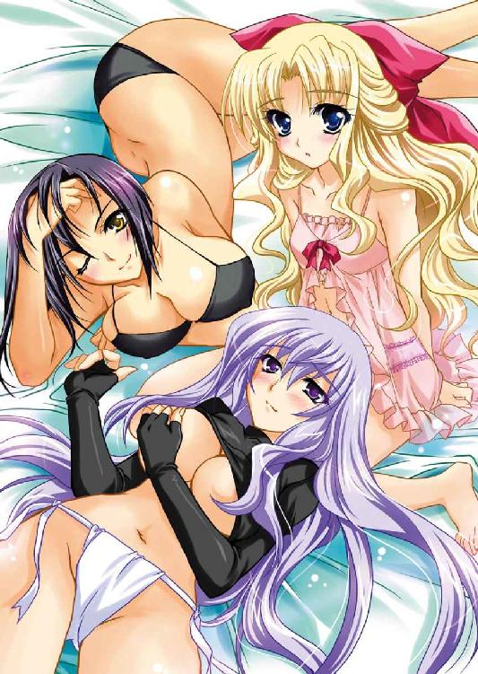
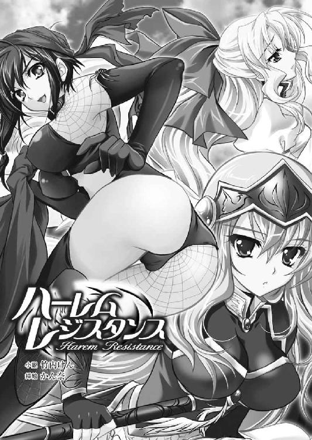
※本作品の全部あるいは一部を無断で複製・転載・配信・送信したり、ホームページ上に転載することを禁止します。本作品の内容を無断で改変、改ざん等行うことも禁止します。また、有償・無償にかかわらず本作品を第三者に譲渡することはできません。
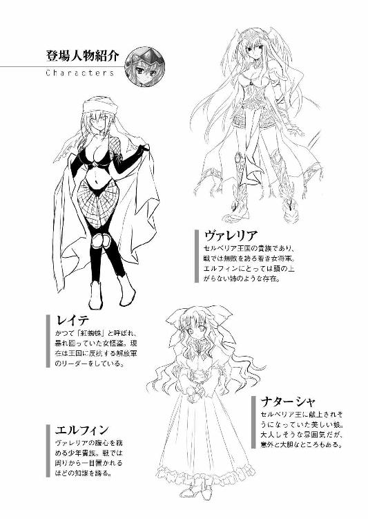
「一揆軍のやつらは三十万と公言しているそうだな」
暦の上では春だが、夜の風はまだ冷たい。
しかし、物見櫓の上に佇む女の、冷笑のほうがさらに冷たかった。
凄まじく見栄えのする美しい女性である。
紫銀色の豊かな長髪に、白磁のような白く滑らかな肌。細い湾曲を描いた眉。切れ長な目元にけぶるように長い睫。その奥で冷たく輝く藤色の瞳。よく通った鼻筋に、赤紫の紅の引かれた唇。細く尖った顎。
その美貌はガラス人形のような透明感があったが、羽根飾りのついた額飾りの下から覗く表情は、なかなかに険が強い。
すらりと世の男性の平均身長よりも高いだろうスレンダーな肢体に、竜胆色の胸鎧をつけ、金縁の白いミニスカートの上に、純白の腰覆いを巻いている。それには大胆なスリットが入っていた、狭間から白い生足がかなり深いところまで覗いている。
肩などの前後の厚みも薄く、華奢とも思える身体つきが、鞭のようにしなやかに均整が取れているため、その張り詰めた雰囲気と相まって、研ぎ澄まされた刃のような、あるいは凍てつく月を思わせる迫力があった。
大変魅力的な女性ではあるのだが、並の男では付き合えないと思わせる雰囲気をぷんぷんと放散しているクールビューティーだ。
その玲瓏とした美貌を、華やかな戦装束に包む姿は、まさに神が作りし人形。
神話に登場する百万の天使を指揮する大天使長が、そのまま現世に降臨したかのような佇まいだ。
彼女こそ反乱鎮圧軍の総大将として、一万の大軍を預かるヴァレリア将軍である。御年二十歳。
「どうだ。エルフィン。策はあるか？」
彼女が睥睨する先には、まるで宝石箱でもひっくり返したかのような夜景が広がっていた。
そこは大陸の最西。北部から大きく湾曲して突き出た巨大な半島を支配するセルベリア王国。
この半島はほんの二十年前までは、セルベリア王国の他に、フルセン王国、サイアリーズ王国という三つの王国があり、俗に西方半島三ヶ国と呼ばれていたのだが、先のセルベリア国王ゼークトが武力で統一した。
彼女が佇むのは、かつてのセルベリア本国と、旧サイアリーズ王国の国境線。国を西から東へと横断するカドレー川の河畔。その南側に作られた陣屋に設けられた物見櫓である。
川の北側は宵闇の中を、松明や焚き火の明かり、魔法光が無数に点在していた。それを遠くから見る分には幻想的で美しいが、近づいてみれば笑顔も凍りつく、地獄絵図が見られるはずである。
なぜなら、そこには冬を越せないと暴徒化した農民が野営しているのだ。
「敵は強大で、なおかつ決死です......」
右後ろに付き従っていた副将は静かに答えた。
それはヴァレリアよりもさらに若い。まだ少年といっていい年格好であるが、その物憂げな表情と話しぶりは、年齢とは不似合いな老成した雰囲気を纏わせていた。
優れた容姿なのだが、美少年と呼ぶには何かが不足している。それは若者らしい溌剌とした覇気といったものだったかもしれない。
しかし、彼の生まれ育った境遇を考えれば無理のないことなのだろう。
少年はフルセン地方の領主である。すなわち、その昔、セルベリア王国に滅ぼされた王族の生き残りだ。
本来、祖国とともに自害するところを、ヴァレリア将軍の父親ヴァミリオン将軍の尽力で一命を助けられ、地方貴族として家名を残された。
その代わりに、フルセン衆はセルベリア王国の先兵として、常にもっとも危険な最前線に置かれ、便利に使われている。
この少年もまた、物心ついた頃から地獄のような戦場で育ち、家臣たちと塗炭の苦しみを体験してきたのだ。
「ただ仮に本当に三十万あり、なみなみならぬ覚悟があったとしても、女子供が多く、その上大半は農民で戦い方を知らぬやつらばかりです。装備にしても刀剣はともかく、魔法宝珠が多いはずもありません。歴戦の諸将のお力をもってすれば破ることは叶いましょう」
「回りくどいな」
女将軍は、背後の腹心に氷の刃のような眼差しで鋭く促してきた。
（ヴァレリアさまは昔からこうだ。ぼくを試される）
幸薄い少年は内心で溜息をつきながら、己が策を披露した。
「敵は大軍ですが、統制はあってなきが如くでしょう。好きなように引きずり回すことができると思います」
所詮は一揆である。中心は農民。各地の村長クラスが集まり、貧民を見かねた『朱雀神殿』の僧侶たちも参加しているようだが、所詮は烏合の衆だ。
「よかろう。わたしも同意見だ。本陣に戻るぞ」
莞爾と笑ったヴァレリアは、物見櫓から降りると諸将の待つ天幕に入る。
広々とした部屋の中央には、長方形の机が置かれ、地図が広げられていた。その周りを五人の将軍が囲んでいる。
ファルビン、ドガスギア、マージョリー、ジュネー、カーラ。いずれも国内を代表する領主たちだ。
「待たせたな」
白い腰覆いから太腿のかなり深いところまで覗くほどに大胆な大股で歩いたヴァレリアは上座の椅子に腰をかけると長い脚を組んだ。
逆にエルフィンは一堂の下座につく。
「今夜、決着をつける」
ヴァレリアの宣言に、諸将はどよめき、一堂を代表して老将ファルビンが忠告した。
「三十万はオーバーにしても、我が軍より多いことは確実です。ご油断召されませんように」
気位の高い女将軍は眉をしかめた。
「ご老体。あなたはもともと文官出身だ。戦のことについては口出し無用に願いたい」
小娘の容赦のない拒絶にあっても、老練な男は気分を害した風もなく、慇懃に頭を下げる。
「はっ、これは出すぎたことを。わが国の勝利の女神を疑うようなこと何条もっていたしましょうや」
お目付役の後頭部にヴァレリアは憎々しげな視線を向ける。
彼女がこの老将に好意を持っていないのは明らかだった。
エルフィンを始めとするヴァレリア派の将軍たちは、決して気が長いとはいえない大将が、このお目付役の老人と騒動を起こすのではないか、と内心でヒヤヒヤする。
ヴァレリアの実家コンミュウス家は、セルベリア王国最大の所領を預かる大貴族である。
彼女の父親ヴァミリオン将軍は、先王ゼークトの妹婿として、その覇業を助けた名将であり、家門が『舞う羽』であったことから、コンミュウス家の私兵は『戦天使』と呼ばれ、この軍旗を見ると敵は戦わずして逃げだすと称えられた。
すなわち、ヴァレリアは、現国王ジューザスの従妹に当たる。
いまだ二十歳の娘ながら、その戦歴は長い。父親に従って十四歳で初陣。十六歳で隣国との戦の総大将を務めた。十八歳で父親が亡くなった後は、精鋭部隊『戦天使』を受け継ぎ、国のために縦横無尽の活躍をしている。
彼女が総大将を務めた戦は九度。いずれも完勝。このたびも十勝目になると人々は信じて疑わない。少なくともこの場にいる者たちは。
無敗の女軍神として国民は熱狂的にあがめ、彼女が軍旗をかざし、「突撃」を叫んだ時、その神々しいまでの美貌に熱狂した兵士たちは、死を恐れずに戦場に突撃するのだ。
まさに血統、経歴ともに傷のない、国家の至宝である。
惰弱で暗愚な国王よりも、国の威光は彼女によって支えられているとさえ言われているほどだ。
「愚昧なる鼠賊など、明日の夜明けには朝露の如く消えるであろう。エルフィン、作戦を説明してやれ」
「はっ」
一斉にエルフィンに浴びせられる年上の同僚たちの視線が痛い。
セルベリア王国譜代の家臣たちから見ると、降将のくせに大きな領地を持つ自分のような存在が面白いはずがない。
敵だった国の王族など皆殺しにして、その領地を少しでも我々に分けろ、というのがみなの偽らざる本音であろう。
作戦を提案するエルフィンを見る同僚たちの目には、失点を探すような嘲笑と蔑みの色がありありと浮かんでいる。
エルフィンには慣れた視線だ。意図的に茫洋とした表情を作り、淡々と考えを述べる。
一通りの説明を聞き終わったヴァレリアは大きく頷いた。
「おのおの方、異存はないな」
エルフィンの策を採用したヴァレリアは、ただちに諸将の配置を決めた。
当然、エルフィン率いるフルセン衆は、もっとも危険な位置である。
※
「若、どうされました。このたびも若の作戦が採用されたのでしょう」
自陣に入ったエルフィンは、麾下の隊長たちと打ち合わせをし、戦の準備をした。
一段落し、あとは攻撃開始を命じるばかりとなった時、譜代の家臣が主君の様子を気遣って声をかけてきた。
この男の名はロックスといって、見るからに歴戦の古強者という風格が漂う壮年である。
常に最前線に置かれるフルセン衆には、必然的に歴戦の兵士が大きく育ち、この手の戦争職人といえる人々が多くいた。
彼らは非常に忠誠心が豊かで、エルフィンを我が子よりも大事に思っている節すらある。
セルベリア王国の外様として非常に難しい立場にあるフルセン衆が、エルフィンのような幼君をいただいて、どうにか切り盛りできているのは、彼ら忠誠心豊かなやり手の家老たちの献身的な努力があればこそだ。
もっとも、彼らの過度な期待が、エルフィンにとって重みであることは否定できない。
「うん、また、ヴァレリアさまに苛められた。あの人はぼくのことが本当に目ざわりなんだろうな」
エルフィンとしてはできるだけ目立たないようにしたいのに、ヴァレリアは容赦なく目立つ位置に引きずり出すのだ。
溜息混じりの主君の感想に、ロックスは無精髭を撫でながらニヤニヤする。
「しかし、若の朴念仁ぶりも筋金入りですな」
「なんのことだ？」
エルフィンは不思議そうに忠臣の顔を見る。
「あのお嬢ちゃんは、軍議の席では常に若の意見を求めて、その策を採用する」
ヴァレリアに対して「お嬢ちゃん」呼ばわりは不敬だろうが、ロックスから見れば小娘には違いない。それにいくら国の英雄とはいえ、外様の家臣から見ると、畏敬の念を刺激されないのだろう。
エルフィンも特にとがめなかった。
「それは策を出した者がもっとも危険な配置にならねばならないからだろ」
「その代わり武勲は挙げられますな。武勲を積み重ねることによって、最近は我々への風当たりもだいぶ緩くなってきもうした」
それは確かにその通りかもしれない。
「若は元服するまで、コンミュウス家であのお嬢ちゃんと姉弟同然に育ったのでしょう」
「ああ、人質としてな」
「しかし、同じ屋敷で育ったには違いない。若を贔屓しておられるのですよ」
老巧の忠臣の意見に、エルフィンは素直に頷かなかった。
「あの頃から散々苛められたよ......」
昔を思い出したエルフィンは苦い顔になる。
コンミュウス家での生活は、イヤな思い出ばかりではない。
亡国の王族の生き残りとして肩身の狭い生活をしていたエルフィンだが、コンミュウス家の人々は優しくしてくれた。故ヴァミリオン将軍は、エルフィンにとって命の恩人であるばかりでなく、政戦両略の師匠であり、父親のような存在だった。
しかし、気位の高いヴァレリアにとって己が屋敷に落人がいることが我慢できなかったのだろう。いろいろと嫌がらせをしてくれた。
武芸の稽古でコテンパンにのされ、学問の失敗を嘲笑されたものである。
そして何よりも屈辱的だったのが、無理やりダンスの稽古に付き合わされて、足を踏んだお仕置きと称して、ズボンとパンツを引きずり下ろされて、逸物を観察されたことだ。
十代初めの少年が、綺麗なお姉さんに逸物を悪戯されたら、なすすべもなく射精してしまうのは不可抗力というものだろう。それがエルフィンにとっての精通だった。
いま思い出しても屈辱に身体が熱くなる。その後も、機会あるごとに性的な虐待を受けていた。
そんな主君の人に言えぬトラウマをどう誤解したのか、ロックスはあきれ顔で諭す。
「我々は寝物語に戦訓を教え、幼き頃より戦場にて胆力を養い、他家との外交の席に同席させ、謀略に関する知識を教え、経験を積ませてきました」
「......そうだな」
その教育方針は、はっきり言ってスパルタであり、エルフィンとしては、よく生きてきたものだ、と思うことがないでもない。
しかし、彼らが厳しいのも、愛ゆえだと思えばこそ耐えてきた。
「しかしまぁ、女心ぐらいは自分で学んでくださいな」
朗らかに笑ったロックスは、景気よくエルフィンの背中をバンッと叩いた。
「何を言っているのだ？」
「まぁまぁ、いずれなんとかなりましょう。それよりも話を戻しますが、先ほどまで何やら、深刻な顔をしておりましたが、何をお考えだったのです？」
煙に巻かれて不快だったが、この家臣が自分に不利益なことをするはずがないと信頼しているエルフィンは、それ以上追求しなかった。
「いや、この戦いに勝つことになんの意味があるのか、と思っていただけだ」
先王ゼークトはまさに英雄と呼ぶに相応しい人物だった。しかし、あくまでも軍事的な英雄に過ぎなかったようである。
彼が生きていた頃は、その武威によって西方半島は治まっていたのだが、彼の死後、さまざまな政治的な矛盾が噴出した。
その混乱を、現国王ジューザスは放置するどころか、助長させている。
おそらく、彼にとって政治とは権力を使った遊戯に過ぎないのだろう。
旧三ヶ国の中央に遷都をし、巨大な王都を作り、贅を尽くした宮殿を各地に造った。
後宮に美女を集め、年がら年中、華やかな祭りを催し、歌舞音曲を楽しんだ。
もちろん、そのような遊びをするためには金がかかる。負担は、当然の如く国民に降りかかり、そして、このような場合、弱者にこそより多くの負担を強いるものだ。
その負担に耐えかねた農民や町民たちが一揆を起こした。しかし、亡きゼークトの築いた政治体制は強固である。
ヴァレリアを代表する名将たちの活躍によって、たちまちのうちに鎮圧されてしまうのだ。
最近は、王都でさえ、紅蜘蛛レイテなる女傑が率いる解放軍を自称する叛徒どもが暴れ回っているというが、これも近いうちに狩られることであろう。
しかし、打ち続く戦乱と反乱によって、ますます税負担が増えるのは当然で、それに耐えかねた別の一揆が起こる。
その悪循環の果てに、ついには旧サイアリーズ王国を中心とした、公称三十万規模と呼ばれる大一揆まで勃発した。
「これだけ大規模な一揆が起こったということは、政治の失敗だ」
だいたい総大将ヴァレリアの戦歴。四年間で十度も戦うというのは、この国の異常さを表している。
いくら戦乱の世とはいえ、一年平均二度以上の戦役というのは、どう考えても多すぎる。
このような内乱続きの国は、他の地域であったなら、たちどころに他国に制圧され、併合されるなり、属国になっていたのではあるまいか。
しかし、半島国家であるセルベリア王国の陸続きの隣国は、北東のフレイア王国だけである。
しかも、この国は現在、ドモス王国を後ろ盾にした梟雄ヒルクルスとの死闘に忙しくて、外国に干渉できる状態ではないらしい。
この特殊な環境が、セルベリア王国のどうしようもない政治体制を支えているといえる。
「若、そのようなことを申されては......」
「わかっている」
周囲の目を気にするロックスを横目に、エルフィンは軽く溜息をついた。
彼の生涯は、諦めと妥協によってできている。
エルフィンの存在があるから、同じような立ち位置にありながら、フルセン地方はサイアリーズ地方よりもマシな状態でいられるのだ。
不用意な発言をして、自らの首を絞めるわけにはいかない。
自分の愛する故郷を守るために、他の地方には泣いてもらうのだ。
また、だからといって、フルセン地方の人々とて幸福とはほど遠い生活をしている。年を追うごとに重税と使役はどんどん増しているのだ。
秩序があるだけマシ。いや、秩序があるだけに一揆すら起こせず、機械的に絞り取られるフルセン地方のほうがより地獄だ、と主張する者もいるかもしれない。
「悪い。戦の前に辛気臭い話をした」
「いえ、我々の前で愚痴るならば構いません」
ロックスの気遣いにエルフィンは微笑した。それから河岸を見る。
「もういい頃合いだろう。そろそろ始める。すまんな、いつもこんな裏方ばかりで」
「若が謝ることじゃありません。それにもう慣れっこですよ」
百戦錬磨の戦士らしくロックスは力強く笑った。
それを受けてエルフィンは抜刀。満天の星空に片刃の刀をかざす。
「全軍。渡河をせよ」
エルフィンの命令に従って、一千ばかりのフルセン衆は夜のカドレー川に粛々と入る。当然、一揆軍からの決死の迎撃を受けた。
「放てっ」
渡河する者を援護するために、エルフィンは後続部隊から矢を射かけた。
満天の夜空に放物線を描いて降り注ぐ矢の雨。
しかし、矢が腕に刺さろうと、目に刺さろうと、一揆の者たちはひるまなかった。
矢の雨が、本当の雨であるかのようにまったく動じずに突撃してくるのだ。
「食い物を遣せっ！ おまえら持っているんだろっ！」
その鬼気迫る死に物狂いの突撃に、精強で知られたフルセン衆は耐えられずに崩れた。
「これは勝てぬ。逃げろっ」
エルフィンは叫ぶと、真っ先に馬首を返す。
大将が恥も外聞もなく先頭を切って逃げだしたのだ。フルセン衆の敗戦ぶりは無様だった。
当初は一揆軍も、罠かと疑ったようだが、荷駄が二十輌あまりも無造作に捨て置かれているのを見つけて考えが変わったようだ。
「食い物だっ！ 食い物があるぞっ！」
荷駄には、果物や兵糧米やパンがこれ見よがしに山積みにされていたのだ。
歓喜した一揆軍は、荷駄に詰め寄り、血に酔って追撃する者との間で隊列は乱れた。
次の瞬間である。
ボアッ！！！
突如、食糧を満載していたはずの荷駄が炎上した。
「なっ、謀られたぞっ!?」
次々と大爆発を起こす荷駄を前に一揆の面々は絶望する。
置き捨てられた荷駄にあった食料は表面だけ。中身には可燃物が詰め込まれていた。
それを合図に左右両翼から、ファルビン、ドガスギア、マージョリー、ジュネーといった将軍に率いられた正規軍が、まるで羊の群れに襲いかかる猟犬のように殺到した。
「国王陛下に弓引く愚民どもを蹴散らせっ！」
敵を釣り出して、包囲殲滅する。これは兵法の基本だ。基本なだけに効果的である。
まして、川を背にするなど最悪だ。
しかし、罠にかかったとわかっても、後のない一揆軍は死に物狂いで抵抗している。
（哀れだな......。でも、仕方ないんだ）
エルフィンは情けの心を押し殺し、命令を下す。
「よし、我々も反転」
エルフィン率いるフルセン衆も、反転攻勢に参加する。
一揆軍を指導する者の中には、旧サイアリーズ王国の兵士たちもいるのか、なかなかに粘り強い。
（しかし、世の中には無駄な努力というものはある）
エルフィンは一揆軍の悲壮な戦いぶりに憐憫の情を感じたが、それを押し殺して冷徹な指揮を続けた。
やがて決定的な瞬間が訪れる。
東の大地からゆっくりと太陽が昇る。
その曙光の眩しさに、目を細めた人々が目を向けると、そこには白馬に跨った大天使が、騎乗用長槍を燦然と掲げていた。曙光を反射する穂先はまるで松明のように煌々と輝いている。
その大天使の如き神々しさに、人々は息を呑む。
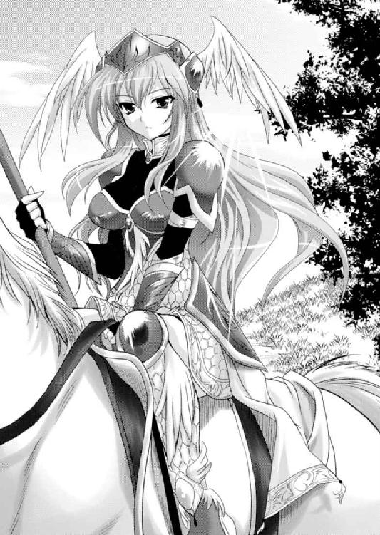
「......いやあれは......『舞う羽』の軍旗。ということは......ヴァレリアか、ヒィーッ大天使が来るっ！！！」
味方にとって頼もしい勝利の女神も、敵から見ればただの恐ろしい死神だ。
エルフィンが釣り出した一揆軍と死闘を演じている間に、ヴァレリア率いる本体は、ひそかに川の上流を渡っていたのだ。
そして、下流からはヴァレリアの親友カーラ将軍が渡っていた。
「鏖殺せよっ」
渡河していなかった一揆軍の面々は、ヴァレリアとカーラ率いる四千の部隊によって挟撃された。
たださえ烏合の衆であったのに、罠にかかって動揺しているところを、正規軍の中でも最精鋭部隊による奇襲。それも挟撃に耐えられるはずもなかった。
背後の味方を失ったことで絶望した前衛の一揆軍もまた、戦意を消失。完全な包囲の中で殲滅される。
昼ごろにはすべての決着はついていた。
「若、大丈夫ですか？」
血塗られた刀を片手に、呆然と地獄絵巻を見るエルフィンに、ロックスは心配げに質問してきた。
「あぁ、もう慣れた......」
また一段と老成した笑みを浮かべたエルフィンは踵を返した。
（坊主どもが言うように、死後の世界とやらがあるのなら、ぼくは地獄行き決定なんだろうなぁ）
いずれにせよ、これでまた労働力は減った。
生き残った者たちにはさらなる皺寄せが行き、激発する者たちが出てくるはずだ。
それを鎮圧するためにまた、戦わねばならない。
これがこの国の現実である。
※
「みな、ご苦労だった」
戦後、負傷した兵士たちの治療を行い、一揆軍の捕虜を集め、川原にゴミのように転がっている死体の処理をさせる。これを放置すると疫病の素となるからだ。
ひたすら気の重い作業が一通り終わった頃には日が暮れており、総大将ヴァレリアの命令で、諸将は再び本陣に集まった。
勝ち戦の後だけにそれなりの活気はあるが、所詮は一揆殲滅戦である。領土を勝ち取ったわけではないので、恩賞はあまり期待できない。
戦功の確認が行われた後、ヴァレリアは一同に祝杯を振る舞って労苦に報いた。
「卿らの武功には追って厚く報いるであろう。今夜はゆっくりと休んでくれ。事後処理はファルビン。ご老体に任せてよいな」
「はっ。閣下の威光を持ちまして、鼠賊を一掃することが叶いました。事後の細々とした雑務は我々下々の者にお任せくださいませ」
ファルビンは慇懃に一礼して退出した。
敵を蹴散らすまではヴァレリアの仕事。戦後処理はファルビンの仕事。これは当初から決まっていた役割分担だ。
国王が暗愚でも、それを支える官僚組織はそれなりに機能しており、ヴァレリアに軍権を与えても、政治的な権限まで与えようとはしなかったのだ。
もちろん、外様のエルフィンは戦後の利権になどに口出しできるはずもない。フルセン衆はあくまでもセルベリア王国にとって、使い捨ての駒なのだ。
国庫は火の車である。ファルビンは公民を徹底的に絞り上げるであろう。
それは胸が悪くなるような光景であることは想像に難くない。
（せめて、ヴァレリアさまが差配すれば、少しはよくなるのだろうか？）
エルフィンの脳裏にチラリとこんな考えも浮かんだが、世の中、そんなに単純なものではないだろう。
第一にファルビン自身は、特に悪辣な人ではないのだ。ただ国家に忠実なだけだ。任務として汚れ仕事をしているに過ぎない。それだけに救いがないともいえる。
（つまり、国家が腐っているんだよな）
わかっているのに、どうにもならないジレンマである。
「では、解散」
ヴァレリアの言葉に、諸将は敬礼して退出する。エルフィンも倣おうとするところを呼び止められた。
「エルフィン、おまえは残れ」
「はっ」
諸将が退室し、エルフィンは所在なく残る。
広い陣屋の中に、上座に座るヴァレリアと、末席に立つエルフィンだけとなった。
「何をしている。もっと近くに寄れ」
冷たい美貌のお姉さまは高慢に足を組み、頬杖をつきながら呼びつけた。
三つ子の魂百までという言葉通り。子供の頃から苛められて育ったという意識のあるエルフィンとしては近づきたくなかったが、そういうわけにもいかないのでおっかなびっくり近づく。
「な、何かご用でしょうか？」
「もっと近く」
右手のひらを上にして差し出したヴァレリアは、中指でクイクイと手招きする。
「は、はい」
お姉さまの投げ出された足先につきそうほどに近づいたエルフィンに、ヴァレリアは静かな中にも苛立ちの混じった声で鞭打つ。
「もっとっ！」
「こ、こ、これでいいのでしょうか？」
仕方ないのでエルフィンは、椅子に座るヴァレリアの両膝を跨ぐようにして前に立つ。
「うふふ......それでいい」
瞳を細め、微笑を浮かべたお姉さまは右手を差し伸ばすと、怯える少年の頬を捕らえた。
「このたびのおまえの活躍は見事だったぞ」
「あ、ありがとうございます。おほめいただき末代までの誉れでございます」
身をガチガチに固くしているエルフィンの顔を両手で挟んだヴァレリアはぐいっと引き寄せる。
「っ！」
互いの鼻の頭がつきそうになる。
「どうした？ 貴様の軍略で三十倍の敵を倒す勝利を収めたのだぞ。もっと歓べ」
「いえ、ヴァレリア将軍の威光があればこそです」
切れ長の瞳の奥で輝く藤色の瞳に射抜かれたエルフィンは、緊張に身を固くする。
間近に見れば見るほどヴァレリアの顔は、身震いがするほどに美しい。
互いの吐息がかかるような位置で見詰めあっていると吸い寄せられそうだ。
「謙遜するな。おまえはよい男だが、そのしたり顔は気に入らんな。もっと自分に自信を持て。わたしはおまえの軍略の冴えは、噂に聞く、ドモスのロレント、二重王国のセリューンに勝るとも劣らぬものだと思っているのだぞ」
「そんな偉大な方々と比べられるなど恐れ多いです......」
ヴァレリアはエルフィンの瞳の奥を覗き込むように小首を傾げた。
「おまえは敵に同情しているのか？」
「い、いえ......」
エルフィンは表情を隠して、視線を逸らす。
「おまえの考えていることはわかっている。フルセンも一つ間違えれば、サイアリーズのようになっていたのだからな。他人事とは思えんのだろう。しかし、仕方のないことだ。難しいことを考えるな。我々は武人だ。敵は倒す、それだけだ」
エルフィンには意地悪だが、ヴァレリアは高潔で立派な人物だ。上には忠実で、下には公平に優しい。そして、敵には容赦ない。
普通であれば尊敬するに値する人物だと思う。
しかし、所詮は王家の血筋に連なる大貴族さまということなのかもしれない。弱者の気持ち、敗者の惨めさなどわからないのではなかろうか。
「今日の戦の褒美をやろう」
「えっ」
戸惑ううちにヴァレリアの顔がすっと近づいてきた。
「っ！」
逃げる暇はなかった。プニッと何か柔らかいものが、少年の唇に重ねられる。
エルフィンは驚愕に目を見開くが、両頬を手で挟まれていて逃げることができない。
「ん、んん、んん......」
ヴァレリアは伸び上がるようにして、エルフィンの唇を貪った。
激しい鼻息が浴びせられる。一方のエルフィンのほうは呼吸が止まっていた。
（な、なに、なにが起こった!? いや、なにが起こっている!?）
エルフィンが硬直しているうちに、その唇を存分に味わったヴァレリアはストンと再び椅子に腰を降ろした。
「ヴァ、ヴァレリアさま!? い、いきなり!? な、なにを!?」
目を白黒させているエルフィンに、ヴァレリアは余韻を楽しむように、右手の人差し指で、自らの官能的な唇を撫でながら艶笑する。
「なんという顔をしているのだ。少し味見をしただけではないか」
「あ、味見ですか？ いや、でも、味見って？」
言われている意味がわからず、混乱するエルフィンの前で、若干恥じらいの笑みを浮かべたヴァレリアの表情は、大天使というよりも、吸血女のようだった。
精通に続いてファーストキスまで奪われて呆然としている少年の股間を、凛々しい女将軍の右手が捕らえる。
「あ、あの......ヴァレリアさま......」
「どうやら期待しているようだな」
ズボンはパツンパツンにテントを張ってしまっていた。
無理やり精通させられて以来、エルフィンの性はヴァレリアの玩具となっている。
手で扱き上げられるのはあたりまえ、時には足で踏まれて、酷い時には王宮の社交界でダンスをしている時に、射精させられたことさえあった。
ヴァレリアの性的虐待はどんどんエスカレートしており、ついには唇まで奪われてしまったのだ。この状況で逸物が期待しないはずがない。
「では、いつものようにズボンを下ろせ」
「はい......」
幼少の頃から逆らうことなどできないように、上下関係を徹底的に調教されてしまっているエルフィンは、素直にズボンと下着を下ろした。
ブルンッ。
主人の事情などとはお構いなしに、逸物は元気いっぱいに跳ね上がった。
羞恥と屈辱に震えるエルフィンとは裏腹に、ヴァレリアの瞳には油でも流したかのような粘着質な輝きが浮かぶ。
「うふふ、相変わらずかわいいおちんちんだな」
逸物がかわいい、と言われても正直あまり嬉しくない。
ヴァレリアの繊手がすっと逸物を捕らえた。細くて長い指は冷たそうなのに、その手は熱かった。
「あ、ヴァ、ヴァレリアさま......」
彼女にとっては長年愛玩してきた玩具である。その扱いは手慣れたものだ。
左手でそっと肉袋を掴むと、中の二つの実をコネコネと弄びながら、右手で肉筒をシコシコと扱く。
「もうビックンビックンと脈打って、こんなにエッチな汁を出しておる。本当におまえのおちんちんはだらしないな」
「す、すいません......」
エルフィンは両手を腰の後ろで組んだ休めの姿勢で必死に耐えるが、逸物がびっくんびっくんと痙攣して、トクトクと先走りの液を垂らすことを止めることはできない。
「ふふふ......かわいげのない貴様だが、本当にここだけは年相応にかわいいな♪」
ヴァレリアの両手が肉棒にかかった。そして、その指先が包皮の先端に添えられる。
いまから行われようとしていることを察したエルフィンは震え上がった。
「ヴァレリアさま、そ、それだけは勘弁してください。すごい痛いです」
「愚か者。男はここが剥けてこそ一人前なのだぞ。おまえがいっこうに剥けぬからわたしが手伝いをしてやっているのだ。ありがたく思え」
厳しく叱責したヴァレリアは、左右の人差し指を包皮の先端にかけると、情け容赦なくメリメリメリと剥き下ろした。
「あ、ああああ......！！！」
空気に触れただけでも痛い敏感な粘膜をさらされた童貞少年は捕らえられた逸物を突き出したまま、身を弓なりに逸らす。
「うふふ、真っ赤だな。まさにチェリーだ」
むき出しとなった亀頭部は痛々しく腫れ上がっていた。そのさまに同情した風を装ったヴァレリアは舌を伸ばす。
唾液の乗った舌先が、鈴口の裏側を丁寧に舐め、さらに亀頭部全体を舐め回した。
「あ、ああ、ヴァレリアさま......くっ」
肉棒といわず、全身をビクンビクンと痙攣させているエルフィンを、猫がミルクを食するように舐めながらヴァレリアは嘲笑する。
「うふふ、なかなか我慢強くなったではないか。そうその調子で我慢するのだぞ」
一般には凛々しくも厳しい人となりで知られているヴァレリアだが、ことエルフィンに対しては徹底的に横暴である。
少年に射精を促すようなことをしていながら、すぐに出すと怒るのだ。
（ヴァレリアさまの正体が、こんなに我儘だなんて、知っているのはぼくぐらいだよなぁ。いや、あとカーラ将軍くらいか。あのお姉さんが、ヴァレリアさまに変なこと吹き込むから、こういうことになるんだよなぁ）
エルフィンは、同僚であり、ヴァレリアの親友である女将軍を内心で恨みながら、必死に耐えた。
まったく国家の至宝とまでいわれる女将軍の趣味が、腹心の部下虐めなどと誰が想像できよう。エルフィンだけが知っている秘密である。別に知りたくもなかったのだが......。
「ピチャ、ピチュ、はぁ......こんなに汁を溢れさせて......」
先端から溢れ出る先走りの液を追うように、濡れた舌先が、肉棒の縫い目を下りていく。ついには肉袋にまで達して中の睾丸を舌先で捏ね回す。
「うっぐぅ......」
睾丸とは男の急所である。そんなところをこの怖いお姉さまの歯牙にかけられるのは、恐ろしく不安だ。
しかし、自分は俎板の上の鯉である。必死に耐えるしかない。
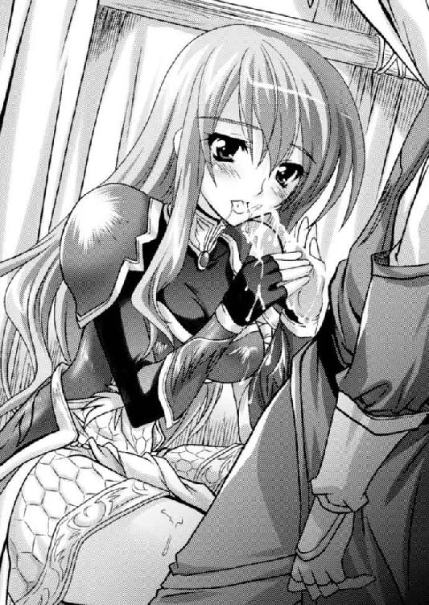
やがて存分に睾丸を弄んだお姉さんは飽きたらしく、再び縫い目を上がってきて、今度はカプリと亀頭部を咥えてしまう。
「ああ、あぁ......」
熱く濡れた口内に男のもっとも敏感な部分が包まれた。その上、濡れた舌がナメクジのように肉棒に絡みついてくる。
（あ、でる。でそう、でる。でも、もう少し我慢しないと......）
ヴァレリアの機嫌を損ねるのが怖くて、いまにも爆発しそうな逸物を気合いで抑える。
「うふふ......♪」
少年が射精直前になっていることを察したのだろう。逸物を咥えたまま見上げるお姉さまは、実に楽しそうだ。
まだまだ我慢しなさい。表情でそう語ったヴァレリアは、さらに少年を虐め抜こうと、ジュルジュルと肉棒を啜り上げてきた。
舌先が、亀頭の裏側を優しく撫でる。
そのテクニックの前に肉棒は電流が走った。肉棒といわず尾骨から脊髄を通って脳裏まで真っ白になる。
「も、もう......ダメ、ダメですっ!?」
必死に我慢していたエルフィンは、ついに限界に達した。
睾丸から噴出した熱い血潮が、肉棒を駆け上がり、先端から噴出する。
ドビュッ、ドピュッ、ドビュビュビュュュュッ！！！
「んっ」
ヴァレリアは一滴も漏らすものか、というように唇を閉ざす。
「ん、ん、んん......」
長年の悪戯で、エルフィンの肉体のことは誰よりも把握しているヴァレリアは器用に口内ですべて受け止めると、ゴクリゴクリと喉を鳴らして嚥下するだけではなく、チュウチュウと肉穴を啜り上げる。
そうやって一滴残らず絞り取ってから口を離した。
「ふぅ......相変わらず臭い液体だ」
そう思うならこんなことしなければいいのに、と思うが口に出す勇気はない。
ヴァレリアの悪戯は、いつもこれで終わってエルフィンに下がるように言うのが常である。しかし、今日は少し違った。
椅子の背凭れにけだるげに身を預けたヴァレリアは赤紫の口元を手の甲で拭うと、余韻に浸っているエルフィンを見上げる。
「一つ提案がある」
「はい」
またどんな無理難題を言われるのかと身を固くする少年に、おっかないお姉さんは軽く命じた。
「王都に凱旋したら、おまえ。わたしを正式に降嫁するように国王陛下に請願するつもりはないか？」
「えっ......そ、それってつまり」
なんかさりげなくとんでもないことを言われたような気がして、エルフィンは硬直する。
「そう、わたしを妻にするつもりはないか、ということだ」
「......え!? いきなりなにをっ!?」
動転して声を高めるエルフィンに、ヴァレリアは難しい顔で睨みつける。
「いきなりも何も、おまえはわたしをなんだと思っているんだ。好きでもない男のおちんちんに触りたがる女や、まして精液を飲みたがる女がいると思うか？」
そう言われるとそうなのだが。
この四つ年上のお姉さまは、自分を虐めるのが趣味で、その一環として性的虐待を加えているのだとばかり思っていたのだ。
そう素直に口にするのははばかられて、混乱するエルフィンはとりあえず否定意見を出してみる。
「で、でも身分が......」
「身分など問題ではあるまい。おまえは広大な領地を持つ貴族だ。それにこのたびは三十倍の敵を打ち破る軍略を示したのだぞ。この大手柄によって、おまえの実力は天下に隠れもないものとなった。もはや、わたしとの仲を反対する者もあるまい」
もしかして、今回、無条件にエルフィンの策を採用したのは、このための伏線だったのか。
エルフィンは罠にかかった、と思った。
「でも、ぼくはそのフルセン家を背負って立たねばなりませんし、ヴァレリアさまはコンミュウス家が」
「コンミュウス家は、陛下の息子の誰かを養子として継がせようと要請してみようと思う。陛下もイヤとは言わんだろう」
確かに。国王としては願ったり叶ったりであろう。
なんか退路を断たれた気がするエルフィンは、必死に断る理由を考えた。
そこに苛立ったヴァレリアが鋭く睨み上げる。
「それとも何か？ おまえには他に言い交わした女でもいるのか」
「い、いえ......」
威に打たれたエルフィンは直立不動で首を横に振るう。それを見てヴァレリアは莞爾と笑った。
「ならばなんら問題あるまい。フルセン衆にとっても、わたしを娶ることはいいことだろう。わたしを娶るということは王家の血が入るということだ。もう二度と敗残の一族と後ろ指を差されることもなくなる」
そう言われると確かにいいことずくめの気がする。
ヴァレリアは万人が認める美貌と血筋を持つ女性。フルセン衆のことを第一に考えるエルフィンにとって、これ以上望めぬお嫁さん候補といえた。
「わたしは一目見た時からおまえが気に入っていた。かわいくて、かしこくて......。こんな弟がいたらいいなと思った。次いで恋人にしたくなった。理想の男は自分で育てるべきだろうからな。そして、おまえは見事わたし好みの男へと成長した。いよいよこの手で収穫する時だな」
ヴァレリアは艶然と笑いながらなんとも遠大な計画をのたまう。
（こ、こわい......）
これは彼女なりの照れ隠しで、意図的に露悪的なことを言っているということは付き合いの古いエルフィンにはわかったが、背中に滝のような汗が流れることを止めることはできなかった。
蟻地獄に嵌った蟻の心境が理解できた気がする。
「それともおまえ、わたしのことが嫌いなのか？」
「え......？」
改めて質問されて絶句してしまった。
エルフィンにとってヴァレリアは意地悪なお姉さんというのが偽らざる感想であろう。
（ヴァレリアさまは、そりゃ綺麗だよな。堂々としていて、戦乙女たちの長みたいで......好きか、嫌いかで言えば、好きかな。ぼくも嫌いな女性におちんちんを悪戯されてよしとするほどに根性なしじゃないよな）
しかし、彼女と結婚したら、尻に敷かれることは確実である。
元上司で、主君の従妹で主筋の女性、姉さん女房。しかも、子供の頃からの姉貴分。勝てる要素が一つもない。
（でもまぁ、尻に敷かれるのも楽といえば楽かな......。うん、頼りがいがあることは間違いないんだし、いろいろと守ってくれそうだよな）
一世一代の覚悟を決めたエルフィンは恐る恐る口を開いた。
「......好きです」
その返答を聞いて、さすがのヴァレリアも安堵の笑みを浮かべた。
「そうか。よかった。ならばこのままエッチしようか？」
「ええっ!?」
急展開にエルフィンが盛大に驚いたので、ヴァレリアは眉を寄せると椅子から立ち上がった。
「おまえ、わたしのことを木石と思っているのか？」
「い、いえ......」
迫力に圧倒されたエルフィンは硬直する。
「世の人々は、わたしのことを大天使などと呼称しているようだが、わたしは生身の女に過ぎない。好きな男に抱かれたい。貫かれたいと考えるのは当然の心理であろう」
いきり立ったヴァレリアは、勢いのままにエルフィンを自らの座っていた椅子に押し倒すと、自らは両手を白い巻きスカートに入れた。
そして、腰のあたりから何かを引きずり下ろす。
右足を上げて抜き、次いで左足を上げて抜き取った物を背後に投げ捨てた。
（も、もしかしてショーツっ!?）
驚愕するエルフィンの右手を取ったヴァレリアは、自らのスカートの中に入れさせた。
「ほら、触ってみろ」
白いすべすべの白磁のような内腿を撫で上げていく。
途中でヌラリとした液体が指につき、さらに上がるとツヤツヤとした濡れた毛にたどりついた。
「んくっ......。ど、どうだ？」
「......濡れています」
エルフィンは感じたままを報告する。
「そう濡れている。わたしは天使などでは決してない。断じて違う。好きな男に抱かれ、貫かれ、子供を産みたい女だ。救えぬ命もある」
最後の言葉に、エルフィンはハッとなった。
（ヴァレリアさまもまた、今回の一揆に心を痛めていたのだ。しかし、どうにもならないのだ）
何を考えているのかわからなかったヴァレリアが急に近しい存在に感じてきた。
「ヴァレリアさま」
感極まったエルフィンは、ヴァレリアの腰を抱き、胸鎧に包まれた胸部に顔を埋めた。
「よいのか。わたしを妻にしてくれるか？」
「はい。ヴァレリアさまを生涯の伴侶とさせてください」
ヴァレリアは椅子に座るエルフィンの腰に跨った。逸物はすでに隆々と立っている。
椅子を跨ぎ蟹股状態になったヴァレリアは、年上の女としての責任感からなのか、童貞少年の逸物を右手に持って自らの陰唇へと導いた。
クチュッ......。
いきり立つ逸物に、熱い牝液がかかった。
（あっ、ヴァレリアさまと繋がる。繋がるんだ）
︱︱両親を殺したヴァミリオン将軍に連れられて屋敷に行った。
その時初めて会った意地悪そうな年上の女の子は、泣いている少年の頬を引っ張って元気づけた。その出会いからの日々が走馬灯のように流れる。虐められてばかりと思っていた過去が、急に甘酸っぱい思い出に変わった。
「ではいくぞ」
さすがに緊張した表情のヴァレリアが腰を落とそうとした、まさにその時だった。
「総大将大変ですっ!?」
陣屋の外から伝令が駆け込んできた。
※
「何事だっ！」
驚愕したヴァレリアはスカートの乱れを直し、いつもの厳しい顔立ちで伝令を出迎えた。
その姿からはたったいま、弟分の少年を押し倒そうとしていた女の面影はない。少なくとも表面上は。
「いえ、その......奇妙な一団を捕まえまして......」
「奇妙な一団？」
たったいま念願の男と初体験しようという時に邪魔されたのだ。当然ながらヴァレリアの機嫌は悪い。その剣呑な雰囲気を本能的に察したのだろう、伝令はかわいそうに怯えている。
「いや、奴隷狩りの一種だとは思うのですが......」
「奴隷狩りだと」
戦場に奴隷狩りはつきものだ。そんなものは、わざわざ総大将であるヴァレリアにまで上げてくるまでもない。
各将軍で対処すればいい。あるいは戦後処理を一任されているファルビンにこそ回すべき事案だろう。
「それがその......きゃつらの言い分ですと、自分たちは国王陛下直々のご下命だと主張しておるのです」
「なに......？」
ここで初めてヴァレリアはこの事案が複雑そうだ、と察したのだろう。
ヴァレリアはエルフィンの目を見た。エルフィンとしても否応はなく黙礼を返す。
のんきに情事に耽っている場合ではなさそうだ。今回のことで二人の心は確かめられたのだ。セックスなどこれからいくらでもできるだろう。
「わかった。すぐに行く」
身支度を整えたヴァレリアとエルフィンは、陣屋を飛び出した。
※
「これはなんだっ！」
現場に駆けつけたエルフィンは目を剥く。
そこには二頭立ての馬車が、鉄柵つきの荷車を引いて止まっていた。
そのこと自体は驚きでもなんでもない。奴隷狩りの獲物を運ぶ方法としては定番であろう。
檻の中にはいたいけな十代半ばから後半と思える少女たちが乗っていて、みな後ろ手に縛られて、しくしくと泣いている。
これも奴隷なのだから当然の扱いだろう。しかし、獲物である少女たちの装いが妙に小綺麗なのだ。それもいずれも美しすぎる。
「あんたがここの責任者かい」
ヴァレリアの姿を目ざとく見つけた老女が近づいてきた。
背が折れ曲がり、鼻が大きく長い。皺くちゃで、険しい目つきをしている。見るからに陰険そうなやり手婆といった雰囲気だ。
ヴァレリアが口も利きたくないといった不快げな顔をしたので、代わってエルフィンが進み出た。
「これは捕虜ですか？」
「馬鹿言っちゃいけない。この娘たちは国王陛下の命令であたしが各地の村々を訪ね歩いて探し出した娘で、朱雀神殿にて処女検査させた正真正銘の生娘たちだよ」
老婆の話を総合すると、領民たちの中から見目麗しい娘たちを選び、強引に連れてきたらしい。
「つまり、その娘たちは別に敵対行動をしていたわけではなく、ただ美しいからというだけで無理やり連れてこられたのですか？」
「ああそうだよ。この娘らは国王陛下の慰み者となるんだ。上手くすれば子種を宿す側室さまだよ。ふん、将軍風情が見るだなんて恐れ多いよ」
もともとエルフィンには、セルベリア王国への忠誠心も、ジューザス国王への義理も皆無だったと言っていい。
一揆軍を鎮圧するのは当然であろう。しかし、何もしていない領民から女狩りをすることにどんな正義があるのか。
たったいま愛するヴァレリアとの初体験をしようとしていた高ぶりの余波もあったのだろう。人間として何か大切なものが汚されたような気がした。
「あなたは人間というものを、なんだと思っているんだ！ あんたみたいな人がいるから、あんたみたいな人がいるから！」
「何しよっていうだいっ！ あたしに手を上げるってことは国王陛下さまに手を上げるのと同じことだよ」
憎々しい老婆の態度に、エルフィンの中でいろいろと溜まりに溜まったストレスが爆発した。
「エルフィン待てっ！」
制止の声をヴァレリアが張り上げた時には遅かった。
少年らしい潔癖さに突き動かされたエルフィンは鞘走らせていたのだ。
ドバッ！
「ひっ」
一刀両断に斬り捨てられた老婆は、悲鳴を上げる暇もなく倒れた。
直後にエルフィンの背中に苦い後悔がのしかかる。
（しまった。武器も持たない老婆まで殺してしまった......）
士道が穢れたというだけではない。国王直属の官吏を殺したのだ。立派な国家反逆罪である。
次の瞬間、ヴァレリアが叫んだ。
「何をしている。全員斬り殺せ、一人も生かして帰すな！」
ヴァレリアの命令以下、その場にいた騎士たちは一斉に抜刀するや、その場にいた御者や護衛など、国王公認の人攫いの一行を、たちまちのうちに皆殺しにしてしまった。
「ヴァレリアさま......」
呆然とするエルフィンを余所に、ヴァレリアは一同に宣言した。
「ここには人攫いなど来なかったということだ。みなの者わかったな」
「はい」
国王に対する怒りと不満を持つ兵士たちは、敬愛する将軍の命に素直に応じた。
ヴァレリアの計らいに感動したエルフィンはすぐさま荷馬車の裏に回って、扉の施錠を自らの刀の柄で叩き壊した。
「さぁ、みんな国許に帰るといい」
囚われの美女たちは、さすがに青ざめていたが、やがて一人の少女が立ち上がった。
「あの、わたくしラハド村の村長の娘でナターシャと申します。このご恩は決して忘れません」
波打つ豊かな淡い金髪をチェリーレッドの大きなリボンでまとめている。
白い清楚なブラウスに、胸元には大きな蝶のブローチ。黒いスカートには赤いレースがついている。
いかにも良家の子女といった出で立ちだ。
「いいから早く逃げなさい。いや、少し待って」
エルフィンはその場にあった死体たちの懐を検めて、出てきた金貨を逃げ行く少女たちに持たせてやった。
はした金かもしれないが、一文なしでほっぽり出すわけにはいかないだろう。
ナターシャという少女は、まだ泣いている仲間の少女たちを励まして、何度もお礼を言いながら去っていった。
「......」
それを見送ったエルフィンが振り返ると、ヴァレリアは何事もなかったかのように陣屋に引き返そうとしている。
その頼もしい背中に惚れ直す思いだった。
「国王陛下のおなーりー！」
三十倍の敵を倒した反乱鎮圧軍は、意気揚々と王都ヒューリアスに凱旋した。
これは西方半島のほぼ中央に、国王ジューザスが即位してから、多大な人夫を使い造り上げられた新造の都市である。
しかし、クリスタルと黄金によって造られたその作りは、神々が住まうという天上の都と見紛うばかりに、豪壮華麗な街並みであった。
もっともこの都を作るために、のべ百万人を超える人夫が動員され、多くの生き血が流されたわけで、彼らから見ると、地獄の都であったであろう。
凱旋式を終えた総大将のヴァレリアを始めとした七人の将軍は、国王ジューザスに謁見する。
これは大変珍しい。
即位してから十年、国務など執ろうともせず、後宮で遊びまくってきた暗君も、このたびの大一揆は無視できなかったということだろうか。
別に敵の領土を分捕ったわけではないので、大した褒賞はもらえないだろうが、褒め言葉をもらえることを、誰もが悦んだ。
壮麗だが寒々しい謁見の間にて、七人の将軍が拝礼していると、儀礼官の声とともに、問題の人物が上座にやってきた。
「一堂の者、面を上げられませ」
儀典官の合図に従って、エルフィンも同僚たちとともに顔を上げる。
王座には飽食と荒淫によって崩れた体型の男が座っていた。それを挟んで幸薄そうな表情をした美姫が二人侍っている。
これがセルベリア国王ジューザスだ。
その外見からは、英雄ゼークトの面影も、従妹ヴァレリアとの共通項もまるで見つけられない。
その印象を一言で言えば、『苦労知らずのボンボン』とか、『甘えたガキがそのまま大人になった』と称するのが正しいだろう。
父王が健在だった頃は、溺愛されるほどに美しく、利発で、武勇にも秀でていたというが、若くして父王が亡くなったためか、自制心というものをまったく身につけぬまま現在に至る。
父王の葬儀のさなか、ゲラゲラ笑いながら、後宮の増設と美姫を物色していた、という伝説すらあった。
もっとも、国王が好色で悪いということはない。子供が生まれれば、男子にせよ、女子にせよ、さまざまな使い道がある。
そのため国王の漁色を誰も止めなかった。
第一に供給のほうも後を絶たなかったためでもある。何せ絶対権力者の寵愛を受ければ、その一族にはさまざまな恩恵が出るのだ。さらに上手くすれば次期国王の外祖父になって権勢を振るうことも叶う。
廷臣たちや地方豪族、富豪たちはこぞって娘を提供した。美しい娘がいなければ養女にし、酷いのになると自らの妻妾を差し出す者もいたという。
しかしながら、この馬鹿殿の好きなタイプは、美しくて大人しい処女娘に限られていた。
名門出身の女は、相応の気概を持つ場合が多いので、彼の好みに合わなかったようである。そのため、最近では市井の中から女狩りをしているわけだ。
「陛下はまだ若いのだ。若い時無軌道になるのは仕方がない。我々が支えてやればいい」
ファルビン将軍などはそう語って、国王を弁護しているようだが、エルフィンは嫌悪感を隠すのに苦労した。
「ヴァレリア、ご苦労である」
実年齢より老けて見える顔色の悪い国王ジューザスは、若干、吃音気味に常勝不敗の女将軍を称揚した。
女好きな国王だが、ヴァレリアを将軍として重用しても、性的な興味はないようである。
血縁者ということもあるだろうが、彼の趣味は、あくまでも儚げで大人しそうな少女だ。ヴァレリアのような男勝りの女騎士など、おぞましいだけのようである。
「国王陛下のご威光の賜物でございます」
表情を消したヴァレリアの追従に、ジューザスは満足げに頷いた。
それから、功績ある将軍たちの頭を面白くもなさそうに順番に眺めていき、最後に、エルフィンの上に止まった。
そして、まるで今晩の夕食をリクエストするかのような軽い調子で命じたのである。
「フルセン領主エルフィンを捕らえよ。国家反逆罪である」
「なっ！」
これには歴戦の将軍たちをして、絶句させられた。
国王の命令に続いて、二十人を超える衛兵たちが鉄棒を手に一斉に、丸腰のエルフィンに襲いかかり、拘束した。
「......っ！」
あまりのことに凝然となっているエルフィンに代わってヴァレリアが抗議の声を上げてくれた。
「陛下、何ゆえに！ エルフィンはこのたびの戦役においても抜群の働きをしておりますぞ」
「ふん、白々しい」
ジューザスの表情には、英明を謳われる若い従妹を嬲るような色が浮かんだ。
「その者が予の忠良なる部下たちを殺した事実は明白である」
国王が顎で指した先からは、五人ほどの美少女がオズオズと姿を現した。
いずれも身なりのいい良家の子女だろうが、エルフィンには見覚えのない顔ばかりである。
ふと先頭に立つ血の気を失った少女の、波打つ豊かな淡い金髪をまとめるチェリーレッドの大きなリボンが目に留まった。
白い清楚なブラウスに、胸元には大きな蝶のブローチ。赤いレースのついた黒いスカート。
思い出した。先の戦役の後、女狩りの一行からエルフィンが逃がした少女たちである。
名前は確かナターシャとかいった。
ということは、背後にいる少女たちもまた、あの時逃がした少女だろうか。
「......っ」
驚愕するエルフィンと目が合ったナターシャは、申し訳なさそうに顔を背ける。
その瞬間、エルフィンは悟った。
彼女たちを自由にしてやっていい気になっていたのだが、もう少し想像力を巡らすべきだった。
駕籠の鳥は駕籠の中でしか生きられないのだ。
少しばかりのはした金をもらったからといって、彼女たちはどうやって生きていけばいいのか。
現在のセルベリア王国の経済状態は壊滅的である。
実家に帰っても、口減らしに出されるのがオチ。いや、国王の後宮に入ってもらったほうが家族にとっては楽だったのだろう。
その結果、家族に促されて、あるいは自分から国王のもとにやってきたのだ。
（軽率だった......）
エルフィンは一時的な正義感で行動した己を恥じた。
（所詮ぼくも世間知らずな坊ちゃんに過ぎなかったということか）
エルフィンにはフルセン領を守るという大義があった。領民や家臣たちの期待を一身に集めている身だ。自分が何よりも優先すべきはそちらであって、国王の玩具として献上される見ず知らずの女たちなど見捨てるべきだったのだ。それが誰にとっても幸せな結果をもたらしたに違いない。
「ヴァレリア、まだ何か異論がありますかな？」
国王の口ぶりは、すべてを知っている。それでいてヴァレリアの罪は不問に付すと言っているのだ。
ヴァレリアの実家コンミュウス家は、セルベリア王国最大の大貴族だ。それを処分するとなると大事になる。
逆にヴァレリアの立場から見ても、家名は何よりも大事にしなくてはならない。
セルベリア王国筆頭貴族。名将ヴァミリオンの愛娘。それが彼女の誇りであると同時に、縄縛である。
「その件はわたしの......」
幼少の頃から目をかけてきた少年を見殺しにすることと、自らの家名。どちらが重いかを天秤にかけたヴァレリアが、答えを絞り出そうとした時、それに重ねるようにしてエルフィンは叫んだ。
「暗君っ！」
「っ」
突然の言葉に、国王とヴァレリア、そして、重臣たちは凝然となる。
「貴様が即位してからというもの世の中、不景気な話ばかりだ。自分ばっかりいいもの食って、面白楽しく遊び呆けやがって、あんな大一揆が起きるなんててめぇの政治の失敗の証明じゃねぇか！ 少しは反省したらどうだ。いつまでもいまの生活が続くと思うなよ。いずれ天罰が下るぞっ！ このロリコン野郎っ！」
普段は大人しいと思われていた少年の突然の激発に、一同は沈黙する。
これで冤罪ではなく、国王に対する不敬罪が確定したわけだ。
ヴァレリアもまた弁護の言葉が出なくなってしまった。
「言いたいことはそれだけかっ！」
恥辱に顔を青黒くした国王は、衛兵に拘束されながらも憤然と睨みつけてくる若い将軍のもとに歩み寄ると、錫杖で殴り飛ばした。
吹っ飛んだエルフィンに、ヴァレリアは近づこうとしたが、その肩をとっさに親友のカーラ将軍が止める。
「引っ立てろ」
頬を真っ赤に腫れさせたエルフィンは、衛兵たちに連れられていった。
※
「ゼークトさまのお情けで生かしてもらったのに恩を仇で返すとはふてぇやつだ」
「恩知らず！」
「フルセンの捨て犬が、ヴァミリオンさまのお顔にも泥を塗りやがって！」
処刑場に引き立てられるエルフィンには、群衆から容赦のない罵声を浴びせられた。
これがセルベリア王国譜代の家臣であったなら、みなの反応も違っただろうが、エルフィンは敵国の生き残りである。たとえ無実の罪で殺されたとしても、心は痛まなかったであろう。
日々苦しい生活を送っている人々に、憂さ晴らしの対象が与えられたのだ。口を極めてののしってくれる。
そんな中を、エルフィンは昂然と胸を張った。それが最後の矜持であったからだ。
謀反人エルフィンの公開処刑は、トントン拍子で決まった。
独裁者ジューザスの決定ということもあるが、もともとセルベリア王国の廷臣たちの間には、敗国フルセンの降将など潰してしまえ、という風潮はあったのだ。
自分たちの生活が苦しいのに、自分たちが負かした国の生き残りが大貴族としていい生活をしているのは納得しようがない、というのが本音であろう。
また財務官僚の間には、フルセン領を直轄にすることによって、財政の立て直しを図るという思惑が働いたらしい。
処刑方法は、公開での火焙り刑に決まった。
それも煙を立てずに、じわじわと足下から焼き殺すというのだから念が入っている。
当然、罪人は早く殺してくれと、泣きわめくことになるが、ここに集まった見物人は、それを娯楽として楽しもうというのだ。あまりいい趣味とはいえないだろう。
衣食足りて礼節を知る。衣食の足りていないセルベリア王国の国民は民度が低いということかもしれない。
高台から国王ジューザスが、面白い余興を見学するといった表情で見下ろしている。
その周りには高位高官がいたが、ヴァレリアの姿はなかった。
（カーラ将軍の姿もないな。きっとカーラ将軍が、ヴァレリアさまをいずれかに連れ出して慰めてくれているんだろうけど......）
ヴァレリアは情の強い人だ。きっとエルフィンのために最大限弁護してくれたはずである。
それが覆せなかったのは、やはりとっさに彼女をかばうために言った国王への侮蔑の言葉が致命的だったのだろう。
（ぼくはどうも激すると感情をコントロールできなくなるな。フルセン王国の生き残りとして、セルベリア王国で生きていくのは、綱渡りだ、ということは昔っからよくわかっていた。それなのに自分から足を踏み外してしまった）
ヴァレリアを恨むつもりはない。ただ自らの血の気の多さを呪うだけだ。
処刑場の中央に用意された柱に、エルフィンは後ろ手に縛られた。足下に大量の薪が積み置かれる。
（でも、これで解放されるのかな）
正直、フルセン領の民からかけられる期待は重かった。その期待に応えるべく、さまざまな修練を必死に行ってきた。
（やっと終わった......。これですべてが終わる）
齢十六歳にして悟りの境地に達したエルフィンが、目を閉じて、開いた。
透徹した瞳で見る人生最後の光景。そこに妙に目立つ女がいた。
（ん？ なんだ......？）
群衆たちの最前列にいる知らない顔の女だった。しかし、妙に気になる。
生涯、最後に見る光景なのだから、他にもっと見るべきものはあると思うのだが、気になったものは仕方がない。
それは熱狂する群衆の中で、彼女だけ妙に冷めていたのが原因かもしれない。
緋色のバンダナを頭部に巻き、臙脂色のマントで身をすっぽりと纏い、口元まで隠している。
布の狭間から覗くトパーズの瞳だけが静謐に輝いていた。
エルフィンが違和感の原因を探ろうと考えていると、その鼻先に、盛大な炎の上がる松明を突きつけられた。
「ひぃっ......！」
これは罪人の恐怖を煽ろうという処置であろう。エルフィンは処刑人の意図通り、喉を引きつらせた。
それがゆっくりと足下に下ろされていく。
（やだ!? ぼくはまだ死にたくないっ!!）
理性を保てたのはここまでだった。足下からじわじわと焼き殺される恐怖に、少年は身を支配された。
涙を流し、情けない悲鳴を上げて、慈悲を乞い、無様に小便を漏らす。
国王を始めとした観客たちが期待する、残酷で無慈悲な処刑ショーが始まろうとした時である。
「火事だっ！」
群衆の遠くのほうで誰かが騒いだ。
何事かと一斉に視線が向かう。
そんな人々の意識の間隙を突いて、熱狂する群衆の中から、一人の女が動いた。
先ほどエルフィンの目についた女だ。
彼女はすっと音もなく進み出ると、民衆を隔離する柵を飛び越えたのだ。
その軽やか身のこなしに人々の反応は遅れた。
「待て、止まれ」
さすがに警備の騎士が気づいて進み出たが、素早く女の手刀が右から左へと走り、騎士の首は落ちた。
それはあまりにも鮮やかな手並みだった。
そのため、人々は目で見たことが頭で理解できず空白の時間が生まれた。
シァァァァァァッ......。
赤い血がシャワーのように飛び散り、それを顔に受けた観客の女が、自らの顔を拭い、真っ赤に染まった自らの手を見てようやく悲鳴を上げた。
「キァァァァァァッッッ......人殺し！！！」
そして、パニックが始まった。
観客の至るところから火の手が上がり、矢の雨が無作為に貴族民衆の区別なくその頭上に降り注いだ。
「フルセンの残党か！」
「陛下のご前である。醜態をさらすな！」
うあああァァァァァァァァァァァァッッッッッッ！！！
あたりを地鳴りのような雄叫びと悲鳴が包む。
そんな中、柵を飛び越えた女が、処刑台に向かって駆けだす。
「その狼藉者を止めろっ！」
警備隊長の指示に従って、ハルバードを持った警備の騎士たちが、穂先を並べて女の行く手を阻む。
しかし、女の快速は止まらなかった。
「っ!?」
ハルバードの穂先が四方から女を貫いた。そう思った時である。
バサリと穴だらけの臙脂色のマントが掲げられる。四本の穂先が貫いたのは赤い布きれだけであった。
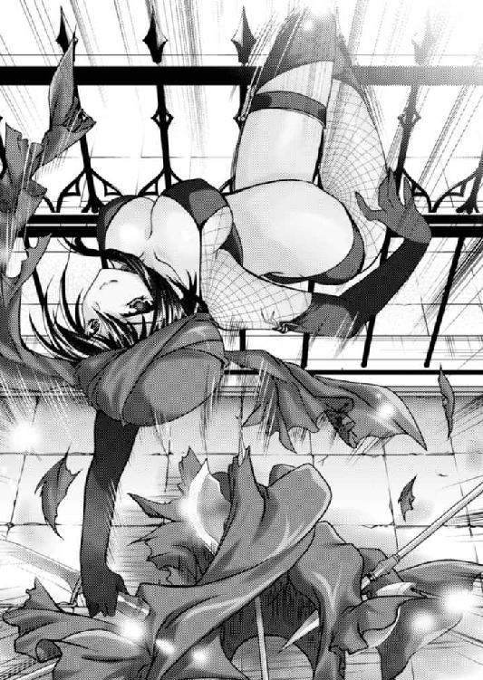
黒い影が鮮やかなトンボを切って、処刑台に上がった。
両足を左右に開き、両手で大地を掴むように重心を低く保つ、四足の姿勢。
「紅蜘蛛っ！」
誰かが叫んだ。
女として成熟した肉体を、目の粗い網タイツ、その上から黒いレザーの胸当てと過激なビキニパンツ。長い手足には黒い長手袋と黒いロングブーツという、なんとも扇情的な衣装に包んでいる。よほどスタイルに自信がないとできない格好であろう。
「なっ」
呆れるエルフィンの前で、頭上に赤いバンダナを巻いた女の口角が釣り上がる。
「邪魔だよっ！」
蓮っ葉に言い捨てた女は、逆立ちするようにして、長い脚を広げると旋風。エルフィンの傍らにいた処刑執行人を蹴り飛ばした。
「あなたは!?」
「黙っていな」
エルフィンの背後に回った謎の女は、逆手に持った短刀を一閃させる。
ハラリ......。
両腕を拘束していた綱が切れた。
「逃げるよ。ついてきな」
扇情的な装束の女はさっと背を向けた。
エルフィンは会場を見渡す。あちこちで火の手が上がり、大騒動が起きている。
おそらく彼女の仲間が各地で騒動を起こしているのだろう。
（ヴァレリアさまの手の者か......。......いや、違うな）
彼女は純粋な武人だ。こういう工作のできる人ではない。まして、無関係の民衆すらも犠牲に巻き込むような策を執れる人ではない。
（それじゃあ、ロックス？）
次に腹心の顔を思い浮かべたが、この可能性も低い。
ロックスが動いたのなら、彼自らが陣頭に立って救出に来たはずだ。
仮に陣頭指揮をしていなくとも、実戦部隊の人間の顔を、エルフィンが知らないということはあり得ない。
第一、ロックスたちフルセン家の忠臣たちが激発することは、セルベリア王国側も予想し、拘束するなりなんなりして対策は立てているだろう。
（それじゃ、この女は誰の手の者だ）
鋭敏を謳われる少年をして、まったく予測がつかない。
「何しているんだい。急ぎな！」
謎の女の叱責に我に返ったエルフィンは、顔を上げる。
そこには民衆を馬蹄で蹴散らしながら十騎ばかりがやってきた。
そのうちの一頭に跨った彼女の手には、空馬の手綱がある。
（えーい、ここは運を天に任せてついていくしかないだろう）
覚悟を決めたエルフィンは、その手綱を取り、馬に跨った。
そのまま一行は群衆の中を中央突破する。身体を張って止めようとする糞度胸のある民衆はおらず、十万の民衆は我先にと道をあけた。
そのまま大通りに出る。そこでさらに仲間が合流して、二十騎あまりとなった。
「みんな無事だね！」
「はい！」
「よし、ずらかるよ！」
赤いバンダナの女が威勢よく叫ぶと、一同はエルフィンを中央に囲みながら大通りを城門目指して疾走する。
王都にとどまったのでは、どこに隠れていても狩り出される。
それよりも、非常事態が触れ回られる前に、一刻も早く王都から出てしまおうというのだ。
（なかなか手際がいい。こいつら、手慣れているな）
エルフィンは感心した。
（こういうことに手慣れている連中。......反乱軍か。でも、反乱軍がなんでぼくを助けるんだ？）
詮索したいことは山ほどあったが、いまは逃げの一手だ。エルフィンは一行の中心でひたすら馬を駆けさせる。
処刑場から連絡がいき、城門が閉められる前に、一同は王都を脱出することに成功した。
※
「よし、ここだよ。入んな」
王都を抜けた一行は、街道をひた走ったが、次の町には入らず、脇道に方向を転じて、やがて山道を進んだ。
そして、山中の打ち捨てられた廃屋の前で馬を下りる。
昔、どっかの金持ちの避暑地だったのだろうか。なかなか瀟洒な作りをしているが、外見はかなりくたびれている。
現在のこの国で、このような山奥の別荘で暮らそうものなら、山賊に襲ってくださいと言うようなもので、とても維持できなかったのだろう。
「裏に清水が湧いているよ」
赤いバンダナ女に教えられたエルフィンは、謎の女テロリスト二人に挟まれながら、裏手に向かった。
そこにあった小さな滝に両手を突っ込み、バシャバシャと顔を洗った後、水を貪り飲んだ。
山奥の清流だけあって美味しい。もっとも、いまならどんなものでも美味しいだろうが。
「ふぅ......」
一息ついたところで、洗い立てのタオルを渡されて顔を拭った。
それから邸内に招かれる。
くたびれた外見に反して、内装の調度品はそれなりに揃えられているように感じられるのは、おそらく、今日はここに逃げ込むと決めていて、事前に準備をしていたからだろう。
居間に通されると、そこには二十人ぐらいの傭兵風の者たちが控えている。
全員女だ。年の頃は十代の後半から三十代の前半ぐらいまでか。だいたいは二十代だと思われるが、みんな見るからにガラは悪そうだった。
揃いも揃って露出の激しい格好をしており、中には粗末なランニングシャツを着た筋骨逞しい女もいて、汗でぴっちりとくっつき大きな乳房の形が丸わかりなのはもちろん、乳首の凹凸まで浮き出ている。
育ちのいいエルフィンは、思わず赤面してしまった。
（やっぱり、反乱軍だな）
エルフィンは自分を救出した連中の正体に確信を持った。
一同はまるで珍獣でも見るかのように、エルフィンを注視している。
「......あ、その......助けてくれてありがとうございます」
沈黙に耐えかねたエルフィンが恐る恐るお礼を言うと、あたりには一斉に笑いが起こった。
「ねぇ聞いた、貴族さまがあたいらにお礼言ったよ」
貴族をなんだと思っているんだ。
エルフィンがムッとしていると、仲間たちをひと睨みで黙らせたバンダナの女が進み出た。
彼女が頭領だということはエルフィンにもわかっている。
どう出るか、と身構えていると、黒い全身タイツの女は、片膝をついて優雅に一礼した。
「それでは改めて自己紹介をしようか。フルセン領主エルフィン殿とお見受けいたします」
「ああ」
少し意表をつかれたエルフィンは対応に困りながらも、改めて相手を観察する。
年の頃は二十代の後半といったところだろうか。
赤いバンダナから零れる黒髪の一房を銀の指輪で留めているさまなど、さりげなくお洒落だ。
粗野な雰囲気だが、よく輝く瞳が悪知恵に通じるであろう知性を感じさせる。
まるで水着のような破廉恥な格好をしているが、リーダーだけあって、ある種のカリスマを感じさせた。
「あたしの名はレイテ。紅蜘蛛のレイテっていえば少しは名が通っているんじゃないかって自負しているんだけどね」
「ああ、あなたが、あの......」
確かにエルフィンはその名前に聞き覚えがあった。
紅蜘蛛のレイテ。王都を中心に暴れ回っている反乱軍の頭目の一人だ。
エルフィンはよく知らないが、五年ほど前に怪盗として暴れ回っていたが、一時期ぱたりとその活動を停止した。
それが最近になって再登場。
ただし、怪盗ではなく、反乱軍の頭目へと華麗な転身をしていたということだった。
反乱軍といっても、小規模な組織がたくさんいるわけで、彼女のグループは、旦那や恋人を国に殺された女が中心であるらしい。
（しかし、なんという破廉恥な格好だ）
腹部は驚くほどにくびれているのに、臀部は左右に張っている。その柔らかい曲線はまるで女王蜂のようだ。
露出の大きな卑猥な服装をしているせいだとも思うが、身体のパーツの一つ一つからエッチな匂いがぷんぷんとする。
「でも、なんで反乱軍がぼくを。ぼくは反乱軍に助けられる謂れはありませんよ」
弾圧してきた側だ。恨まれる覚えはあっても、救出される理由はない。
「なんでだと思います？ 若いが切れ者だと評判の閣下なら、もうわかっているんじゃありませんか？」
「ぼくに反乱軍に入れと言うのですか？」
エルフィンはお話にならないと態度で示すために、肩をすくめて両手のひらを上に向けた。
「確かにぼくはセルベリア王国に恨みがある。ジューザスも嫌いだ。いまさら敬称なんかつけたくもない。しかし、ぼくには切っても切れないしがらみが山のようにある。ぼくが反乱軍なんかに入ったら、迷惑を受ける人が大勢いる。ぼくは彼らのためにも反乱軍の仲間になることはできない」
「ご立派な信念だね。ただし、半分正解♪」
「半分？」
戸惑うエルフィンに、レイテは悪戯っぽく笑いかける。
「あら、わからない？」
「......」
真剣に考えた込んだ少年に、エッチな雰囲気のお姉さまはのたまった。
「所詮は頭でっかちな童貞坊やってことかな♪」
「なっ!?」
室内の二十人近い美女のみなさんから、一斉に笑い声が上がった。
図星を指されて顔を赤くするエルフィンの肩を、レイテは涙目になりながら叩き、謝罪する。
「ごめんごめん。プライド傷ついた？ でも、童貞くんってわかりやすいのよねぇ♪」
「......」
綺麗なお姉さまたちに笑い者にされて、エルフィンとしてはどういう態度を取っていいのかわからない。
「仕方ない。それじゃ単刀直入に言うわ。きみにはあたしたちのリーダーになって欲しい」
これにはエルフィンも心底驚いた。
「ぼくに反乱軍のリーダーになれ、と......」
「反乱軍って言い方はイヤね。解放軍と言って欲しいわ」
「失礼しました」
名称を変えるぐらいなんでもない。
「我々だけでは、所詮は農民反乱なのよ。農民反乱では国家は覆らないってのは歴史のお約束だからね。どうしても、支配者層を味方に引き入れねばならない。そんな時おあつらえ向きの貴族さまが出てきたというわけさね」
言うまでもなく、エルフィンのことであろう。
「それにいくつもある解放軍を一つにまとめる神輿として、あんたは担ぎやすいんだよ」
なるほど。このような場合、血というものはなかなかに侮れない力を持つものである。
「つまり、あなたたちのレジスタンス活動を謀反に変えたいってことですね。それでぼくが断ったら？」
「その時は仕方ないわね」
レイテはすっと視線を細める。
「ぼくを殺しますか？」
「いいや。でもまぁ、いきなり決断しろっていうのも無理な話だろ。結論は明日でいいよ。それよりまずは飯だ。あたしは腹が減って目が回りそうだよ」
レイテは闊達な声を張り上げると、一同に食事の用意をさせた。
※
「謀反か......」
具の少ないスープで腹を満たしてから、じっくりと考えるようにと個室を与えられた。
心身ともに疲労していたエルフィンは、ベッドに仰向けに倒れながら思案する。
貴族として生活してきた身には粗末なベッドだが、それなのに気持ちいい。シーツは洗い下ろしであり、お日様で干されたばかりなのだろう。
『ジューザスに取って代わる』
考えたことがない、と言えばウソになるだろう。
エルフィンの目から見ても、現在のセルベリア王国は腐っている。
（自分も未熟だが、少なくともジューザスよりはマシな政治を行えると思う）
ジューザスは権力を玩具にして遊んでいるだけだ。国家国民などまったく眼中にない。
特に善政を敷かなくとも、ごく普通の政治をするだけで、国民の支持は得られそうである。
（しかし、腐っていると言っても、官僚組織は健在だ。いままでだって各地の反乱が、みんな片っぱしから鎮圧されているじゃないか）
エルフィンが反乱を起こした結果、敗北しようものなら、フルセン地方にどんな災厄が振り注ぐのか、想像するのも恐ろしい。
「ちょっといいかい」
木製の扉が開き、レイテが音もなく室内にすべり込んできた。
「あ、どうぞ」
「そのままそのまま」
身を起こそうとする貴族の若さまを両手で制して、反乱軍の女頭領はベッドの脇に腰を降ろした。
「あの、何か？」
「ん、ちょっとね。きみの決断を少し後押ししてあげようかと思ってね」
「後押し？」
悪戯っぽく言われたエルフィンが戸惑うと、レイテは顔を近づけてきた。
「そう、なんだと思う？」
「さぁ？」
エッチな雰囲気のお姉さまの顔が近くにあるというだけで、エルフィンは意味もなく赤面してしまう。
その初心な少年の耳元で、レイテは甘く囁いた。
「イ・ロ・ジ・カ・ケ♪」
「えっ！」
絶句するエルフィンが反応するより早く、レイテの右手が、少年の股間を捕らえた。
「はぐっ!?」
童貞少年の悲しさで、美人のお姉さんに股間を鷲掴みにされたらもはや動けない。
「い、色仕掛け......って。じょ、冗談はやめてください」
「冗談じゃないわよ。古今、男をその気にさせるのは女の仕事よ。特に生命の危機に陥った男はどうしようもなく女が欲しくなるものだわ」
レイテは容赦なく少年の下着を奪い、下半身を露出させると、いまだ縮こまっている逸物を手に取った。
ムクムクムクと逸物はみるみるうちに大きくなっていく。
「あたしも、本当はこういうことしたくないのよ。性を武器にするなんて女としては最低だからね。でも、男は女の愛撫によって奮い立つものなの。女はそれがわかっている時、あえて卑怯な手を使うのよ」
「そ、その割には、なんか物凄い嬉しそうな表情に見えますけど......」
怯える童貞少年の指摘に、童貞食いをしようというお姉さまは莞爾と笑う。
「そりゃそうよ。美少年の童貞を食べるのは女のロマンよ♪」
「ロ、ロマンなんですか......？」
「そ♪ それに貴族の若さまの童貞を咥えるのは、若さまつきの侍女の役得で、あたしら庶民にはめったに手に入らないレアものよ」
そう宣言すると同時に、レイテは亀頭部にしゃぶりついた。
「はぅ......！！！」
エルフィンは思わず自らの頭を抱いてのけぞった。
「チュパチュパ、ジュルジュル......ムチュチュ......」
今日、知り合ったばかりの命の恩人の女性が、自分の逸物にしゃぶりついている。それも頬とか凹ませながらすごい吸いつきである。
「ひぃ、はぁ......ダメ......やめてぇぇぇぇ......」
エルフィンは、幼少の頃からヴァレリアに性的な虐待を受けてきた。
いまにして思うとあれは愛情表現の一環だったのだとわかる。
ヴァレリアに射精に導かれるのは屈辱的だったが、イヤではなかった。イヤだと思いながらも、心の中では受け入れていた部分があり、嬉しかったのだ。
しかし、この女性については愛情など抱いていない。本当に食われている、という気分だ。
（しかも、超ウマい......。なんか滅茶苦茶エロい）
そのフェラチオテクニックは、明らかにヴァレリアよりも上手かった。
左手で肉棒の根元を押さえながら、右手で顔にかかる髪を押さえ、上目遣いにエルフィンの様子をうかがい、ジュルジュルと激しく頭を上下させて啜るのだ。
（ああ、ダメだ。このままじゃイっちゃう！）
自分でも驚くほどあっという間に追い詰められてしまった。
「ヴァレリアさまごめんなさい！！！」
幼少の頃から一人の女性に飼育されてきた少年は、条件反射的にヴァレリアの名前を叫んでしまっていた。
しかし、あと少しで射精という瞬間に、レイテは顔を上げてしまう。
「な、なんで......!?」
ことここに至っての中断に、エルフィンは身を乗り出してしまう。
「うふふ、そう簡単に出させてやったんじゃ、色仕掛けにはならないからね♪」
無様に逸物をひくつかせる少年を、エッチな雰囲気のお姉さまは細い顎を上げて高慢に見下す。
「それに童貞だとばかり思っていたけど、坊やはどうやら、あの大天使の稚児をやっていたようだね」
「......」
沈黙するエルフィンの顔を見て、レイテは何やら得心した顔をする。
「うふふ、きみがわたしたちに加担したくないのは、彼女への義理立てもあるのかな？ まぁ、いいわ」
身を起こしたレイテは、黒い胸当ての留め金に手を当てた。そして、外す。
ポロリッ。
よく熟れた先肥りの乳房が二つ、まろびでた。
ゴクリッ。
初めて見る女性の生乳を前に、エルフィンは思わず生唾を飲んで魅入ってしまった。
（お、おっぱいっ！ おっぱいだ）
ヴァレリアはさりげなく隙を見せて、エルフィンを誘惑して楽しんでいたところがあったが、本当に見せてくれたことはない。
真っ白い乳肉はまるでマシュマロのように柔らかそうでありながら、どっしりと重そうであった。その頂きを飾る色はワインレッドで、乳輪も乳頭も大きい。まるで大粒のルビーのように妖しい存在感があった。
初めて見たから他と比べようがないが、この大きくて柔らかそうな肉塊は、ひたすらに淫らな塊に見える。
少年の食い入るような視線を存分に楽しんだレイテは、自らの乳房を手ブラで持ち上げた。
「うふふ、大天使さまにこんなのはやられたことはあるかい」
少年の下半身に屈み込んだお姉さまは、自ら作り出した谷間に、いきり立っている少年の逸物を挟んでみせた。
（あ、暖かい......）
表面はしっとりとした肌触りで滑らかなのに、ぷりぷりの弾力がある。
その感覚は、この世のものとは思えぬほどに素晴らしかったが、それ以上に女性の象徴の中に、自らの男根が埋もれているという視覚的な衝撃が凄まじかった。
「うふふ、気に入ってくれたようね」
瞳を輝かせたレイテは、両手でモミモミモミと豊乳を男根に押しつけてきた。
柔らかい乳肉の間で、いきり立つ男根はウネウネと弄ばれる。
「うふふ、もうお汁こんなに垂らしちゃって......若いわねぇ♪」
レイテが指摘したように、熟れた乳肉に包まれた若い男根はピックンピックンと痙攣して、とっくんとっくんと熱い液体を垂れ流していた。
おかげてエロ乳の内側は、濡れてテカテカと光りだす。
「だって、だって、だって......こんな、こんな、こんな......」
自らの男根を、エロ乳に包まれた少年は、脳裏が焼き切れんばかりに興奮してしまい、まともな会話ができない。
「それだけ喜んでもらえると、あたしとしてもやりがいを感じるわね♪」
莞爾として笑ったレイテは、サービスとばかりに上体を上下させ、乳首の突起で亀頭の横を擦った。
「ひぃあぁ〜」
エルフィンはなんとも情けない悲鳴を上げる。
巨大な肉塊を上下させるのだ。女にとってもなかなかの重労働なのだろう。乳房の表面には珠のような汗が浮かび、谷間に流れて、エルフィンの塗りつけた先走りの汁と混じる。
「うふふ、美少年が悶える姿ってこんなに萌えるものだったんだねぇ〜♪」
頬を火照らせたレイテは満足げな表情を浮かべて、さらなるダメ押しをしてきた。
すなわち、肉棒の先端の穴を、まるで母猫が子猫の排便でも促すようにペロペロペロと舐めたからたまらない。
「ああ！ あああ！ あああああぁぁぁぁぁぁ！！！」
エルフィンはレイテの頭を掴んで悶絶する。
よく役者が違い、一方的な戦いの様相を、手のひらの中で転がすというが、性的に未熟な少年は、百戦錬磨の淫乱エロエロお姉さまの乳房の中で転がされて、果てた。
ドビュドビュッドビュドビュュュュュュュュ！！！
逸物は激しく痙攣して、その頂きからは飛沫を上げながら白濁液が噴き出す。
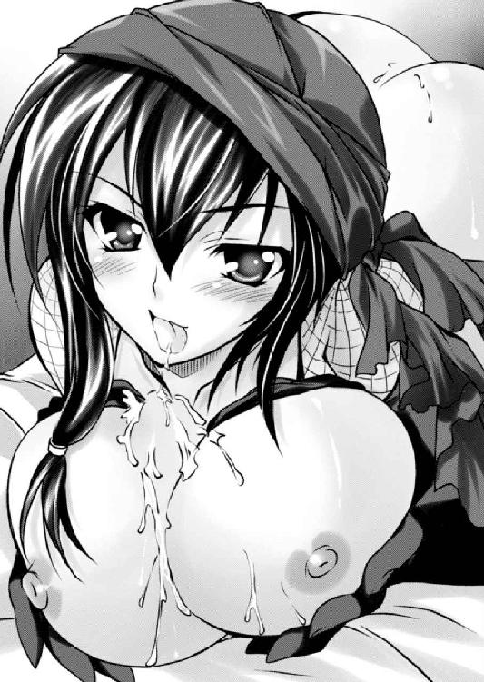
それは当然、パイズリ中のエロかっこいいお姉さまの鼻先から額、そして赤いバンダナへと浴びせられる。
「あらあら、もう漏らしちゃったか。坊やには少し刺激が強すぎたみたいね。あたしも久しぶりだから加減を間違ったみたいだ」
レイテはしぼみゆく逸物から、乳房を離して身を起こした。
そして、胸にかかった牡の雫を指で掬って美味しそうに舐めしゃぶる。
「はぁ......はぁ......はぁ......」
揶揄されてもエルフィンには反論する余裕はなかった。ただ自分を弄んだ痴女を見上げて激しく喘ぐだけである。
「ほら、なに一回出しただけで満ち足りた顔しているんだか。十代半ばの男の子ってのは無限の性欲があるもんだろ。次はあたしにやっておくれ」
蓮っ葉に命じたレイテはヒラリとベッドに立ち上がった。そして、エルフィンの顔に跨ると、なんと黒い過激なパンツと目の粗い網タイツを下ろす。
「なんて顔しているんだい。あんたはあの大天使の舐め犬をしていたんじゃないのかい？」
舐め犬の意味がわからず、エルフィンは首を左右に振るう。
「なんにせよ。命を救ってやったんだ。少しぐらい恩返ししてくれてもいいだろう」
そういう言い方をされては抵抗することなどできない。レイテはそのまま腰を下ろしてきた。
さながら女性が排便をするような姿勢で、男の顔面に跨ったのだ。
エルフィンの目と鼻の先には、生まれて初めて見る光景が広がっていた。
黒々とした陰毛の奥に、ワインレッド色の肉裂がぱっくりと口を開いている。
それでいてヒクヒクと収縮しながら白っぽい涎を垂らしているのだ。
（こ、これが女性器だよな。まるで食虫植物みたいだ......）
見ていると、そこから食べられて消化されてしまうのではないか、という恐怖に囚われたが、同時になんとも言えず惹かれた。
「さぁ、お舐め♪」
エロかっこいいお姉さまは、そのまま少年の顔面に座り込んだ。
クチュッ。
よく繁った陰毛に鼻の頭を突っ込むと、甘い匂いが鼻腔に広がった。野趣な牝の匂いと、化粧品の匂いが混じりあった濃厚な芳香。それは否応なく牡の本能を目覚めさせる。
「......」
エルフィンは夢中になって匂いを嗅いでいると、レイテが焦れた。
腰を前後に動かす。シャリシャリとした陰毛とヌメヌメした粘膜が、少年の顔を洗う。
「何しているの。早く舐めさない」
愛液が目に入って沁みる。
慌てて口を開くと、口内にしょっぱい味が広がった。その味は美味しいとか美味しくないの次元を超えて、男を虜にする。
エルフィンは夢中になってしゃぶりついた。
「あはっ♪ そうそう素直が一番。って、どこ舐めてんだい。あんたあの大天使の舐め犬してたんだろ。その割には下手糞だね」
「そんなものしてません」
エルフィンの抗議を聞いたレイテは呆れたといった態度で、額を押さえた。
「かぁ、名門のお嬢さまってやつはお高くとまっているんだろうね。まぁ、いいわ。気取ったお嬢さまなんて、きっとマグロだろうしね。いいわよ、わたしが忘れさせてあげる」
膝を開いたレイテは、下にいるエルフィンのために自ら肉裂を開くと舐める位置を懇切丁寧に教えた。
少年は言われた通りに夢中で舐める。
「......あはっ♪ いい♪ そうよ、もっと舐めなさい♪ あん♪」
牝の喘ぎ声に気をよくしたエルフィンは必死になって舌を這わせた。女性が感じてくれていると思うと、頑張ってしまうのが男の本能というものだろう。
試行錯誤していると、陰核に鼻の頭を押しつけながら肉壺をほじっている時が一番、いい声で鳴く。調子に乗って同じことを繰り返していると、唐突に声のトーンが一段上がった。
「はぁっん〜〜〜っ！」
ビクッ、ビクビクっ！
下腹部が痙攣したかと思うと、レイテは中止を命じてきた。
「はぁ、はぁ......はぁ......もういいわよ」
荒い呼吸をしているレイテは、エルフィンの顔から腰を上げると、緩慢な動作で男の下半身へと移動していく。
そして、そこで何事もなくいきり立っていた逸物を手にすると、自らの蜜壺に添えた。
「ふぅ......それじゃ、入れるわよ。ん、あたしも久しぶりだからね。蜘蛛の巣が張ってなきゃいいんだけど」
「......久しぶりなんですか？」
見るからにエロエロで、毎日充実した性生活を送っていそうなお姉さまの意外な言葉に、思わず質問してしまった。
「ああ、あの人が死んでからだからかれこれ二年ぶりかな？」
その何気ない返答に、エルフィンは目を剥く。
「え......!?」
「あら、何を驚いているの？」
「で、でも、いまあの人って、結婚されていたんですか？」
素で驚いているエルフィンに、レイテは陽気に答える。
「結婚していらっしゃいましたとも。ついでに言っておくとあたしゃ子供もいるわよ♪」
「いっ!? こどもっ!? 子供がいるのにこんな......っ!?」
心底驚くエルフィンに、レイテは小馬鹿にした視線を送る。
「そんなに驚くことかね。それとも坊やも、あのバカ王と同じ処女好きかい？」
「いえ、そういうわけでは......ありませんが......」
処女だとか非処女だとか、考えたことがなかったというのが正解かもしれない。
エルフィンは曲りなりにも貴族である。その気になれば侍女なり、女騎士なり、女文官なら、身近な女をいくらでも抱くことができたと思う。しかし、いつでももげると思っている果実には、かえって手が出ないものなのかもしれない。
ヴァレリア以外の女性はその他であり、処女だろうと非処女だろうとどうでもよかった。
「ならよかった。処女が好きな男なんてね。他の男と比べられると自分が負けると思っている。己が性に自信がない負け犬なのさ。大人しい処女ばかり集めている国王の正体をあたしは見たね。ありゃ、暴君なんて呼ぶのもおこがましい。ただの臆病者さ」
レイテの喝破に、エルフィンの中のわだかまりが溶けていく思いだった。
「そ、そうですね。確かにその通り、一頭の獅子に率いられた羊の群れは、一頭の羊に率いられた獅子の群れを駆逐するといいます。謀反を起こしても十分に勝機はあると思います」
「よし、その意気だ。それでこそあたしの見込んだ坊やだよ」
思わず叫んだエルフィンに、満足そうに頷いたレイテは腰を落とした。
「あっ」
ズブッ！ ズブズブズブ......！
若い逸物が、熟れた未亡人の体内に呑み込まれていく。
そして、根元まで咥え込んだレイテは結合部を見せつけるように足を開き、腰を使い始めた。
グッチュッ！ グッチュッ！ グッチュッ！
男女の結合部から粘着質な水音が立つ。
（エロすぎる。このお姉さん、エロすぎるよぉ）
騎乗位。いや、ただの騎乗位ではなかった。俗に言う「馬乗りファック」というものだろう。激しい腰使いだった。
熱い牝汁がまるでシャワーのように牡の肉に浴びせられているのだ。
（うっ、こ、こんなに激しく......出る。もうまた出ちゃう！）
普通なら一瞬で射精してしまうところだが、事前に一発抜かれていたので意外に我慢できた。
おそらくこれは、経験豊富なお姉さまならではの知恵だったのだろう。
「なに黙って見ているんだい。坊やも頑張りな」
エルフィンの両手を取ったレイテは、自らの両の乳房を握らせる。
プルンッと張りと弾力があって手に馴染む。水風船のような柔肉だった。
「こうやって揉みしだきなさいって♪」
「は、はい......」
手の甲を通して無理やり乳房を揉ませるレイテ。いつしかエルフィンは自ら主体的に揉み楽しんでいた。
乳肉の表面には、先ほどエルフィンが吐き出した残滓があってツルツルと滑る。
「ああ、いいわ。上手よ♪ 今度はあたしの腰使いに合わせて、きみも腰を使いなさい」
淫乱なお姉さまに命じられるままに、少年は腰を使った。
「はぁっ！」
大きな乳房を両手で鷲掴みにしながら、お姉さまの荒腰に合わせて自らも腰を突き上げる。
それは逸物がどっかに飛んでいってしまいそうなほどに気持ちよかった。
「あは♪ いい感じよ♪ そのままガンガンお願いするわ。あん♪」
「くぅぅぅぅぅぅぅ！！！」
頭が真っ白になったエルフィンは、お姉さまに煽られるままに夢中になって腰を突き上げ続けた。
「あはッ♪ やっぱ若い子ってケダモノね。すごい、あたし、腰に来ちゃう！ もっとよ、もっとお願い」
レイテはいかにもエルフィンの腰使いに翻弄されているといった風を装っているが、半分は少年を勇気づけ、夢中で腰を振らせるための演技であろう。
その年上の女ならではの策略に乗せられて、初体験中の少年は必死になって腰を使ってしまう。結果、女は本当にその若さに任せた無茶苦茶な腰使いに翻弄されている。
「ああん、ははぁぁん、いいい、いいいわぁぁぁ！！！」
レイテはあたりはばからぬ嬌声を張り上げながら、あたりに淫汗を撒き散らす。
その痴態がますますエルフィンを虜にする。
男女は交互に高まっていく獣のように交わった。しかし、やはり先に追い詰められたのはエルフィンのほうである。
「あ、もう、もうダメです！ でるっ！ でるっ！ でちゃいますっ！」
「いいわよっ！ 中に出していいわよっ！ あたしの中にいっぱいぶちまけなさいっ！」
「でも、子供が......」
「大丈夫、ちゃんと避妊の魔法をかけてあるから、思いっきりぶちまけなさい！」
「はいっ！」
淫らな未亡人に煽られるがままに、エルフィンはすべてを解放した。
「ああああああああああっ！！！」
雄叫びを上げたのは、エルフィン、レイテのいずれであったかわからない。おそらく両方であろう。
びくんびくんびくんびくん！
逸物の脈打ちがそのまま膣洞の脈打ちとなり、男女は一体となった。
ぶしゅゅゅゅゅゅゅゅゅゅゅ！！！
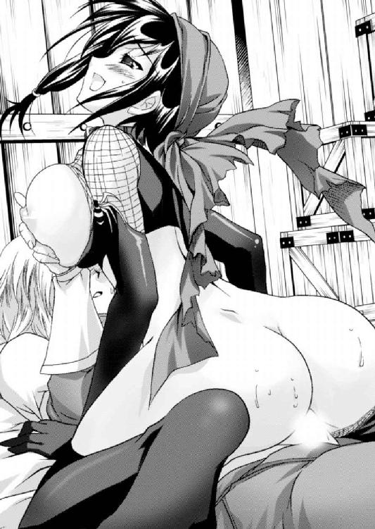
熱い牡汁が、牝の体内にぶちまけられる。
「はぅ......」
男根が緩くなるに従って、女もまた男の胸に倒れてきた。
しばし二人は抱きあって余韻に浸る。
「うふふ、初めてにしてはなかなか上手だったわよ」
「あ、ありがとうございます......」
鼻の頭をチョンッと突かれたエルフィンは、はにかみながらお礼を言った。その次の瞬間である。部屋の扉が勢いよく開いた。
「ちょっとレイテ。抜けがけは感心しないわね」
わらわらと反乱軍の女闘士が狭い部屋に入ってきた。
「抜けがけじゃないわよ。男女のことは当人同士の問題でしょ」
エルフィンの上に乗ったままレイテは悪びれずに応じる。
しかし、反乱軍の女闘士のみなさまはそんなことで引き下がらない。
「貴族の坊や。あんた別にレイテに惚れたわけじゃないだろ。あたしらも命を張って、坊やを救出したんだ。あたしらにもお情けをくれていいと思うけどね」
「え、ええ......」
二十人近い美女の群れに囲まれてエルフィンはしどろもどろになって頷く。
「じゃ決まりだね」
女闘志たちは一斉に服を脱いでベッドに乗ってきた。
（う、うそ......！）
呆然としている間に、美しくも逞しいお姉さまたちによる逆レイプが始まった。
「大丈夫、あんたぐらいの年齢なら、一日十発は軽い。頑張れば一日二十発は十分できるわよ」
かくしてエルフィンは、命を救われた女闘士のみなさんに肉体で恩返しすることになった。
バシャバシャバシャ！
未亡人たちの濃厚テクニックで最後の一滴まで搾り取られることとなったエルフィンは、昼過ぎになってから、女体だらけの寝所から抜け出し、素っ裸のまま館の裏にある湧水で顔を洗っていた。
「よしっ！」
清冽な水で一人気合いを入れて顔を上げたところに、頭からバサリとタオルを投げられた。
「ああ、レイテ姐さんおはようございます」
驚いて振り向くと、そこには昨日初体験をさせてくれた、というよりも、童貞を食っていった命の恩人がいた。なんとなく肉体関係を持ったことの親しみを込めて『姐さん』という呼称をつけてみる。
「昨夜あれだけ大暴れして、もう起きられるんだからタフだね」
同じ寝起きのお姉さまは、昨晩は若い男に突きまくられて、腰が痛いと言いたげに自らの腰をさすっている。
その姿に昨晩の乱痴気騒ぎを思い出して、思わず赤面するエルフィンに、レイテはまるで朝飯は何を食べたいと質問するかのように、軽い調子で聞いてきた。
「それで腹は決まったかい？」
手ぬぐいで顔を拭った少年は、昨日知り合い深い仲となったお姉さまの黄色い瞳を見ながら、はっきりと答える。
「はい。ジューザスを殺して、ぼくが国王になります」
それを聞いたレイテは、少年の決意を茶化すように肩をすくめた。
「ふっ、自分が抱いた女には責任を持つのが男ってもんだろって、ケツを叩こうと思ったけど、そこまでヘタレではなかったらしいね」
（えっ!? 昨日の乱交にはそういう思惑があったんですか......）
とんでもない罠に嵌っていたことにいまさら気づいたエルフィンは思わず目を剥く。
そして、彼女の策略は見事に成功していることに気づく。
昨日までは顔も知らぬ他人どころか、敵対関係にあったと言っていい間柄だが、肌を合わせたことで急に親近感が湧いてしまっていた。
エルフィンは、彼女たちをなんとしても守りたいと思う。その方法とは自分が国王になるしか道はないのだ。
その表情を見て、レイテは「くっくっくっ」を笑いを噛み殺す。
「それじゃ、あんたはこれから、何はさておきフルセン領に帰るのかい」
フルセン地方はエルフィンの地盤である。挙兵する以上は、フルセンに入るのは当然だ。
「いや、その前にやれることはやっておきます」
王都にはロックスたち腹心が監禁されている。彼らをただちに救出しなくてはならない。
単に心情的な問題というだけではなく、彼らはいわばフルセン勢にとっての骨格だ。これなくして、これから始まるセルベリア王国との死闘に勝てるはずがない。
「協力。お願いできますよね」
「ああ。任せておき。だが、その前に腹ごしらえだ。腕によりをかけて作ってやるよ」
力強く請け負ったレイテは、屋敷に戻るように促す。
それに続こうとしたエルフィンは、気になっていたことを質問した。
「あなたはぼくの命の恩人です。だから、あなたに裏切られて死ぬのなら文句はありませんが、一応、聞いておきたいことがあります」
「そんなに固く考えることはないさ。あたしらも思惑があって坊やを助けたんだからね。それで何を聞きたいんだい？」
「立ち入ったことを聞きます。あなたの王家への恨みとはなんですか？」
解放軍の頭領になるくらいだ。そうとうな理由があったのだろう。
レイテは「そんなことか」と言いたげに莞爾と笑った。
「別に隠すようなことじゃない。いま思うと恥ずかしいが、若い頃のあたしは怪盗『紅蜘蛛』なんて呼ばれていきがっていた時代があってさ」
「知っています。女義賊『紅蜘蛛』ですね。悪い噂のある金持ちからだけ金品を奪っていたという」
盗賊などという存在が英雄視されるということが、この国の治世がいかに酷いかを示していると言えるだろう。
レイテはこっぱずかしいと言いたげに頭を掻いた。
「義賊なんて言えば聞こえはいいが、ただの盗賊だよ。それをわからせてくれた人がいた......。そいつはコンコンと説諭ってやつをしてくれた。初めはウザいやつだと思ったんだけどね。その無駄な正義感を持ったバカになんの因果か惚れちまった。まぁ、ああいうお人よしを後にも先にも見たことがなかったから物珍しかったんだろうね」
レイテは照れ臭そうに鼻の頭を掻く。どうやらこれは惚気話であるらしい。
「その糞真面目なバカは、若くして村長なんてものをやっていた。まぁ、見栄えも悪くなかったし、あたしも若かったからね。強引に押しかけ女房ってやつになったわけさ」
それが怪盗『紅蜘蛛』が引退した理由か。
（真面目で正義感の強い村長さんが、女怪盗に押しかけ女房になられる......ドラマだよなぁ）
顔も知らない村長さんの心境を慮って、エルフィンは同情する。
「結婚生活はラブラブスイート、子供も生まれて万事順調ってやつだったんだけど、例の馬鹿殿のせいで年貢は天井知らずに上がっていく。たまりかねた近隣の村々と連携して、直訴することになったのさ。うちの旦那は馬鹿正直にも、その代表を務めて、王都に意気揚々と乗り込んだ......こんなことをしたら結果は想像がつくだろ」
レイテは、自らの首を手刀でトントンと叩いてみせた。
「翌日には五体バラバラにされた旦那がうちの村の広場にさらされたさ。ついでに村の若衆は根こそぎ、連れていかれた。まぁ、見せしめってやつだね」
「......」
そのハードな人生にエルフィンは、かける言葉をなくす。
「別に珍しい話じゃないさ。あたしたちの仲間は多かれ少なかれ、同じような体験をしている。しかしまぁ、旦那のケツは女房が取るしかないだろ」
こうして、怪盗『紅蜘蛛』は、解放軍の頭領として舞い戻ったということか。
「わかりました。旦那さんの仇をきっちり取りましょう」
相手の心痛を思ってエルフィンが頷くと、レイテは苦笑を浮かべた。
「勘違いしてもらったら困るよ。あたしもあたしの仲間たちもまだ若い。坊やも身をもって体験したろ」
「はぁ、はい......」
みなさん素晴らしい身体をしていました。貪りまくった身としては否定のしようがない。
「あたしらはまだまだ女盛りだ。死んだ男にいつまでも操を立てるつもりはない。これからいい男がいればまた結婚して人生楽しく過ごしていきたいと思っている。新しいいい男を物色するためにも、とりあえずあの国王には消えてもらう。あんたなら、もう少しマシな政治をしてくれるだろうよ」
エルフィンを指さしたレイテは笑いながらウインクした。
「さってと辛気臭い話はここまで、飯にしよう飯。腹が減っては戦はできぬ。これからは忙しくなるよ」
そのまま話を切り上げて館に入っていこうとするレイテを、エルフィンは慌てて呼び止める。
「あと一つ、お子さんは......？」
「大丈夫、信頼できる人に預かってもらっているよ」
レイテは後ろ手に手を振ると去っていった。
解放軍を率いながらも、レイテが復讐にすべてをかける鬼ではなく、すべてが終わった後のことも視野に入れていることが嬉しかった。
（逞しい人だ。それに、考え方が健全で清々しい）
エルフィンは、レイテの後ろ姿に惚れたのを自覚した。
昨晩の乱交は、エルフィンを味方に引き込むための策略の一環であり、エルフィンを一人の男として認めての情交ではなかっただろう。しかし、いずれ彼女に認められる男になりたいと思った。
レイテは、いずれ新しいいい男を探すと言っているが、その新しいいい男が自分であってもいいではないか。
※
「よし、行くぞ」
処刑場から逃げ出したエルフィンたち賊徒は一直線に、王都ヒューリアスから脱出した。
当然、目指すはフルセン領であると誰もが考えたであろう。しかしながら、エルフィンは翌日には、王都ヒューリアスに舞い戻っていた。
王都の地下組織として、大規模なものが三つほどあったが、レイテの紹介でリーダーすべてと会見した。
別組織を作っている以上、それぞれ主義主張は違い、対立もあったが、国王への反発は同じであり、トップに象徴となる人物を置くことで連携することは不可能ではない。
このような場合、組織をまとめるのに大事なのは、血である。名門であればあるほどありがたがられるものだ。
その意味で亡国の王子たるエルフィンほど相応しい存在はなかったであろう。
彼らを束ねた最初のミッションは、当然、監禁されているフルセン家の忠臣たちの救出である。エルフィンの取った手は古典的であった。
つまりは陽動作戦である。
国王ジューザスの寵姫の中でも、悪女として名高いベリオルウの離宮を急襲。彼女を拉致した。
この時不穏分子の裏に、エルフィンがいるとは夢にも思わなかっただろうが、当然、ジューザスは激怒した。誘拐犯を草の根を分けても探すように命じる。
その間に、収容所を強襲して、ロックスたちと合流したのだ。
「ロックス、無事に会えて嬉しい」
「若、よくご無事で」
主従が感動の再会をしていると、ロックスの後ろに申し訳なさそうに従う少女がいる。
波打つ豊かな淡い金髪をチェリーレッドの大きなリボンでまとめ、白い清楚なブラウスに、胸元には大きな蝶のブローチ。黒いスカートには赤いレースがついている。
楚々とした佇まいは、いかにも良家の子女だ。
「ん、そちらは？」
予定外の人員に、エルフィンが戸惑うと、ロックスが紹介してきた。
「おお、ナターシャどのです。このたび我らが脱出するのに多大な功績があり申した。彼女の献身的な協力がなければ、我らは生きて若と再会できなかったかもしれませぬ」
「あ、きみは確か......？」
エルフィンが思い出す前に、小さな淑女は盛大に頭を下げた。
「ごめんなさい。わたくしのために......」
思い出した。女狩りの一行から解放した少女だ。それなのに彼女は国王ジューザスのもとに向かった。その間にいかなる事情があったのかはわからないが、エルフィンからすれば恩を仇で返された形だ。
「若......」
とりなすように声をかけてくるロックスを、エルフィンは片手で制した。
「きみは、ロックスを助けてくれたんだよね」
「......助けるというほどのことは......」
手を揉みおろおろとしている少女に、エルフィンはきっぱりと言った。
「いや、謙遜には及ばない。ロックスがきみの助けがなければ脱出できなかったと言ったんだ。この者たちは、ぼくにとってかけがえのない家臣だ。みんなを助けてくれたことに感謝する」
「でも、わたくし......エルフィンさまに多大なるご迷惑を......」
「そのことはもういい。ロックスのことでお相子だ。それに今度のことでぼくも覚悟は決まった」
エルフィンの返答に、ナターシャではなく、聞き耳を立てていた家臣たちのほうが瞳を輝かせた。
「それでは若っ!?」
「ああ、ジューザスを倒す。暗君を屠り、ぼくがこの西方半島の主となる」
「若。我ら一同、その言葉を聞くことを一日千秋の想いで待っておりましたぞ」
フルセン譜代の家臣たちは感動にうち震える。
「そのためにも次はフルセン領に帰還だ。兵を整えて再び帰ってくるためにな」
ロックスたちを救出したことで、解放軍の後ろにエルフィンありということは、セルベリア王国側に知れ渡ったであろう。
こうなれば今度こそ逃げの一手である。もはや王都に用はない。
「よし、行くぞ。次はフルセンで挙兵だ」
解放軍の面々に陽動をしてもらいながら、エルフィンたち主従は、ひたすら故郷に向かって馬を走らせた。
（ここらあたりで網を敷かれたらアウトだったな）
敵の迂闊さを嘲りながら、馬を駆けさせていた時である。
「若、あちらをっ!?」
ロックスに注意を喚起されて、崖の上に目を向けた。
「っ!?」
そこには豊かな紫銀色の髪を棚引かせている女将軍の、白馬に跨った姿があった。
（あれは......ヴァレリアさま）
エルフィンのヴァレリアに対する想いは単純ならざるものがある。純粋な憧憬と羨望、そして、愛情と裏腹な苦手意識。
白馬に跨った大天使は、崖の上であり、馬で一気に駆け降りられる位置ではないだろう。
（ぼくの行動などお見通しと言いたいのだろうか。それでいて、見逃してくれるというのか）
烈火の如き激しい気性の持ち主である。ヴァレリアがみすみす叛徒を見逃すなどという態度を取るなどと考えがたい。
しかし、これが彼女なりの、己が屋敷で育った弟分に対する、あるいは結婚したいとまで言った男に対する、精一杯の手向けなのだろうか。
（そんなことするくらいなら、一緒に来てくれませんか？）
エルフィンはとっさにそんな言葉を投げかけたくなった。しかし、それは自分の甘えだと思いとどまった。
エルフィンは、セルベリア王国にとって外様である。しかし、ヴァレリアは違う。
骨の髄までどっぷりセルベリア王国の中心人物だ。生きるも死ぬもセルベリア王国とともにあると思い定めてしまっていることは、長い付き合いだけにエルフィンにはよくわかった。
「次に会うのは戦場だな......」
「若......」
心配顔をするロックスに、エルフィンは表情を消して応じた。
「セルベリア王国が我々を野放しにするはずがない。頭に血の上ったジューザスは、必ず討伐軍を派遣してくる」
「その主将はやはり......」
「当然、あのヴァレリアさまだろうな」
現在のセルベリア王国には、これ以上に強力なカードはないのだ。選択の余地はないだろう。
「我々はあの大天使と死命を賭して闘わなくてはならない」
この道の先を突き進めば、避けられない帰結だ。口にしたことでいまさらながら自覚したエルフィンの背筋に、冷たい戦慄が走る。
子供の頃から姉のような、師匠のような、恋人のような存在だった。そんな女性と干戈を交える日が来ようとは想像したこともなかった。
しかし、ことここに至ってはもはや逃れることはできない。
「いくぞっ！」
エルフィンは馬に拍車を掛ける。崖の上のヴァレリアは、ただ無表情に見送った。
※
「池に落ちた犬は、きっちりと沈めてやるのが礼儀というものだ。情けは無用。徹底的に殺せ」
虎口を脱しフルセン領に入ったエルフィンはまずは潜行。ゲリラ戦に入った。
旧フルセン王家の血を引くエルフィンが蜂起する以上、フルセン地方を地盤にするのは、誰もが認める既定の戦略である。セルベリア王国としても、指を咥えて見ていてくれるはずがない。
すでにドガスギア将軍が一千の兵を率いて、フルセンの総督として駐留した。
一千人といえば大軍だが、フルセン領土の広さを考えれば多くはない。
なんといっても、フルセンの領民にとって、エルフィンは「おらが王子さま」である。協力者には事欠かない。
エルフィン派の妨害活動によって、ドガスギア将軍率いる一千の兵は、さながら陸の孤島に追い詰めたかの如く、連絡線、補給線ともに遮断されてしまう。
そうこうしているうちに、エルフィンがシルバーベル砦を占拠したという情報に接し、慌てたドガスギア将軍は自ら精鋭を率いて出撃した。ところが、この時留守役を命じられた将軍マリガンが、エルフィンに内通していたのである。
驚くドガスギア将軍率いる一軍を、伏兵率いるエルフィンと、城壁からのマリガン将軍の兵で挟み打ちにして全滅させた。
非情なようだが、敵の兵力を減らせる時は減らしておくべきだ。敵に情けをかけてやる余裕はないし、捕虜を養ってやる余裕もない。
かくして全身に弓矢を受けたドガスギア将軍は、針鼠のようになって戦死。その首級は王都に送ってやった。
美姫とともに酒を飲んでいたジューザス国王は、酒杯を投げつけたという。
フルセンの旧都アヴァロンに入ったエルフィンを、領民は歓呼の声を上げて迎えてくれた。
この地方の人々は、エルフィンが成人するまで臥薪嘗胆を誓い、今日という日を一日千秋の想いで待っていたのである。
「エルフィン王ばんざいっ！」
「ジューザスの暗君をぶったおせ！」
かくしてエルフィンは蜂起の第一段階に成功した。
しかし、面子を潰されたジューザスがこのままにしてくれるはずがない。今度は大規模な鎮圧軍が派遣されることは既定の事実である。
エルフィンは迎撃戦のための、さまざまな公務に追われた。
「ぼくらの兵力はよくて千五百ってところか」
フルセン地方の豪族がすべてエルフィンのもとに集まったわけではない。大半は好意的な中立といったところだ。
サイアリーズ地方の一揆と連携を取りたいが、なにせ先の戦の作戦はエルフィンが考えたことは周知のことである。対応は冷淡だった。
彼らの態度は、いずれ派遣される鎮圧軍を、エルフィンが撃退できるかどうかの様子見をしているのだろう。
一戦して勝てそうだと判断すれば、いまの国民感情からして、雪崩を打って参加してくれるだろう。逆に負ければ見捨てられる。
とにもかくにも、次の一戦がすべてだ。
「いまのセルベリア王国には一万は出せないはずだ。それにあの暗君は自ら兵を指揮できない以上、王都にいくらか残す。こちらに回せるのはいいところ八千。いやサイアリーズ地方にも押さえの兵を残すはずだから、七千ぐらいのはずだ......くっ、それでも五倍か」
しかも指揮するのは常勝無敗の名将、セルベリア王国のカリスマ。破壊の大天使ヴァレリアだ。
彼女が圧倒的な物量を率いてやってくる。
そう考えただけで凄まじいプレッシャーだ。エルフィンは寝る間を惜しんで働いた。
「あの......お食事をお持ちしました」
「ありがとう」
侍女が、生ハムを挟んだサンドイッチを持参すると、ちらりと見たエルフィンは、ごく無造作に鷲掴みにして口に押し込み、牛乳で胃袋に流し込んだ。
味などまったく気にすることなく、そのまま書類に視線を戻す。
「はぁ......」
小さく空気の抜けたような溜息が聞こえた。
微かな違和感に視線を上げる。
「あぁ......きみは、確か......」
食事を運んできてくれたのは、黄金の波打つ髪に、白い清楚なブラウスに、蝶のブローチをした少女である。
「ナ、ナターシャです......」
エルフィンが自分の名前を覚えていない、と思ったのだろう。少女は慌てて名乗った。
彼女はどこかの村の村長の娘だが、いまさら実家に帰れないからエルフィンのもとで働かせてくれという話だった。
文句なしに美しい少女なのだが、『朱雀神殿』にいたというだけあって、大人しく慎ましやかで戒律を守り、貞潔。まさにジューザス好みの美少女といえるだろう。
ただそれだけに自己主張が少ない。目立たない少女である。
エルフィンも、いまのいままで彼女が自軍に参加していたことなど、忘却していた。
「ロックスさまから、エルフィンさまの身の回りのお世話をするように仰せつかりました」
ナターシャは良家の子女らしく完璧な礼儀作法で一礼したが、声は小さい。
「そうなんだ。よろしく」
「は、はい......こちらこそ、よろしくお願いします」
エルフィンは再び執務に戻ったのだが、ナターシャはそこに佇んだまま動こうとする気配がない。
気になったエルフィンは再び顔を上げる。
「まだ、何か用？」
「いえ、あ、あの......お風呂の用意もできております」
ナターシャは精一杯、勇気を絞り出したという感じでオドオドと申し出たが、エルフィンはそっけなく断った。
「今日は入らない」
「でも、昨日は入られておられませんし、その前も......」
どうやら彼女は、旧都に入ってからのエルフィンの日常を見てきたらしい。今日こそは言わなければと静かな決意をしているのが感じられる。
いささか煩わしく感じたエルフィンはきつく言った。
「食事は摂らないと身体が持たないが、風呂なら入らなくても倒れることはないだろう。いまはやるべきことがたくさんあるんだ！」
近いうちに討伐軍が派遣される。これに負けたらすべてが終わりだ。
エルフィンの苛立ちに畏怖されながらも、ナターシャは消え入りそうな声でおどおどしながら反論した。
「で、ですが......。その......あまり根を詰めすぎるのは身体に悪いと思います。ゆっくりと寛ぎ、英気を養うのも大事なことだと思います」
ナターシャはいまにも泣きだしそうだ。
それを見た瞬間。自分が思った以上に刺々しい口調で彼女を傷つけてしまったことを悟った。
エルフィンは力を抜いて溜息をつく。
「うん、そうだね。風呂ぐらいは入ったほうがいいか。人と会う時に、臭いって思われたら、侮られるもとだ」
「お聞き届けいただきありがとうございます」
腰が折れそうなぐらいにお辞儀をしたナターシャは、ただちに風呂場に案内した。
※
「はぁ......」
素っ裸になって湯船に浸かったエルフィンは大の字になって浮かんだ。
温かい湯に浸かり、身体が蕩けていく。
ナターシャの言う通り、根を詰めすぎていたことを実感した。
（確かにぼくが倒れたら、それこそ洒落にならないしな。今夜はこのままベッドに入ってゆっくり休もうか）
考えてみればまともな睡眠も取っていなかったわけで、ウトウトとしてしまう。
そこにおずおずとナターシャが顔を見せた。
「あ、あの......湯加減はどうでしょうか？」
「ちょうどいいよ。生き返るようだ」
エルフィンの返事に、ナターシャの声が嬉しそうに弾む。
「よ、よかった。あ、あの......お背中をお流しします」
「そ、そう......それじゃお願いしようかな」
エルフィンは湯船から上がると、洗い場に置かれた木椅子に座った。
彼はなんだかんだ言って貴族育ちである。子供の頃から侍女たちに身体を洗われるのはあたりまえで、他人に裸を見られてもそれほど恥ずかしくはない。
「はい」
白いブラウスを腕まくりしたナターシャは、米糠の入った袋で、同世代の主君の背中を流す。
泡が十分に立ったところで、少女の繊手が少年の肌を愛しげに撫で回す。それは洗うというよりも、マッサージである。
「ああ、一見、華奢でいらっしゃるのに、こうして見ると意外に筋肉質なのですね」
「まぁ、子供の頃からロックスたちに無理やり鍛えられてきたからね」
女性の手で触れられるというのは、男にとって何物にも代えがたい癒やし効果があるようである。
いままで気にしていなかったが、総督府に入ってからというもの、彼女はかなり献身的にエルフィンの身の回りの世話をしてくれていたようだ。
「っ！」
ふいにナターシャの張り詰めた気配を感じる。
何気なく彼女の視線を追うと、自分の股間では逸物が隆々といきり立っていた。
（あ、そういえばここのところご無沙汰だったもんな......）
勃起した逸物を見られても、あまり恥ずかしいという意識は芽生えなかった。
精通してからはヴァレリアに定期的に抜かれていたし、レイテたち未亡人たちとの強烈な初体験をしたりしたことで、どこか感覚がマヒしてしまったようである。
しかし、思春期の男の子が、一週間以上も射精しなかった状態で、綺麗な少女に全身を撫で回されたのでは、こうなって当然だろう。
「......」
頬を染めたナターシャは、エルフィンの肩をマッサージするふりをしながら、頭上からチラチラと逸物を見下ろしている。
（初々しいな......）
苦笑を誘われながらも、エルフィンはすでに気づいてきた。
新参者のナターシャが、身の回りの世話として自分の側に置かれているのは、適当に愛玩してはどうか、という家臣たちの配慮なのだろう。
彼女もすでに侍女頭なり誰かに因果を含められているに違いない。
（まったく気の回しすぎだ）
家臣たちの配慮に苦々しいものを感じながらも、いろいろと困っているらしい彼女の態度が哀れであり、ナターシャに水を向けてみる。
「そんなに気になるんだったら、触ってみる？」
「え、あ、わたくし......す、すいません。わたくしってば何を......」
ようやく我に返ったナターシャは滑稽なほどに顔を真っ赤にして声を裏返す。
「だから、おちんちん触りたいなら触っていいよ」
「そんな、わたくしのような者がエルフィンさまのお大事に触るなど恐れ多いです」
いきり立つ男根を前にして、ナターシャは顔はおろか耳まで真っ赤だ。
しかし、その恥じらい遠慮する風情は、逆に男の嗜虐心を刺激する。
エルフィンは思わず立ち上がると、恥じらう乙女の前で仁王立ちになった。
「そんな大したものじゃないよ。触るのが恐れ多いなら、洗ってよ。ナターシャはぼくの身の回りの世話をするのが仕事なんだろ。ここを洗うのも仕事だよ」
鼻先に逸物を突き出された形のナターシャは、腰が抜けたように、コテンと尻餅をついてしまった。おかげでスカートが風呂場の湯で濡れたがそんなことは気にせず、憑かれたように寄り目になって主君の男根を仰ぎ見る。
「お、お仕事......。そ、そうですよね。わたくしったら、何を考えているんだか......」
自らを納得させた責任感溢れる侍女は、意を決したように両手をかざし、恐る恐る逸物に近づけてきた。
そして、まるで泥鰌か何かを捕まえるかのように、ガシッと鷲掴みにしてきた。
「くっ！」
まるで逸物から電流が流れているかのように、ナターシャの腕から肩、そして、全身がガクガクと震えた。しかし、必死になって握り締めている。そうしながら、溜息混じりの声を漏らす。
「お、大きい......。なんと逞しいのでしょう」
逸物を大事そうに両手で包み込んだナターシャは、硬度を確かめるかのようにニギニギと握り締める。
（う、なんか新鮮だ......）
子供の頃から年上のお姉さまヴァレリアの玩具にされてきた逸物である。最近はレイテを始めとした欲求不満の未亡人たちにむしゃぶりつくされてきた。それに比べてナターシャの反応は対照的だ。
「温かいです。これがエルフィンさまのお大事なのですね。あぁ、なんと立派な......素敵なお大事なのでございましょう......」
逸物を握り締めるナターシャの表情は、さながら大粒の宝石でも手にしたかのような感動と陶酔ぶりである。
ここまで純粋な好意を浴びせられるのはこそばゆいが、悪い気はしない。
「ナターシャいつまでおちんちんを握り締めているんだい。きみはおちんちんを洗いたいんでしょ」
「あ、あ、そ、そうでした......申し訳ありません」
主君に促された侍女は、緊張に強張る指を必死に開いて、逸物を撫で回し始めた。
肉棒を撫で下りていき、肉袋を手に包み、中の睾丸を確認している。
洗うふりをしながらも、乙女としての好奇心が抑えられずにいるさまが手に取るように見てとれる。
（ほんとかわいいなぁ）
繊手が再び肉棒を上ってきて、泡立った手でシコシコと前後に扱き上げる。
単純にテクニックのみを問題にするなら、ヴァレリアやレイテのほうが百倍は上手い。
しかし、ナターシャのたどたどしい手戯は、そういった技能とは別のもので男を楽しませる。
家臣たちから愛玩しろ、と差し出された少女を素直に抱くのは、男としてみっともない気がしてイヤなのだが、牡としての本能は抑えがたいものがある。
「あ、ああ......せ、先端のお穴から......透明なお液が......」
ナターシャが上ずった声で指摘したように、肉棒の先端からは先走りの液体がとろとろと溢れ出し、乙女の繊手に絡みつく。
「ああ......こんな素敵なお大事に貫かれる方が羨ましいです」
逸物を包み込んだ乙女は、濡れた床に下ろした腰を切なげにくねらせながら、熱に浮かれたように荒い吐息を、男の象徴に浴びてくる。
（もう限界だ。我慢できない）
劣情を抑えかねたエルフィンは、逸物に魅入られているナターシャの頬に手をあてがうと無理やり顔を上に向けさせて、唇を奪った。
「んっ......」
驚愕に大きな瞳を見開く少女を、そのまま洗い場に押し倒す。
「な、なにを!? ん......んん......ん───......！」
驚き暴れようとするナターシャの両手首を押さえつけ、無理やり唇を貪る。
男の強靭な舌が女の口唇を割り、真珠のような前歯を舐め回してから口内にまで舌を入れると、口内を舐め回し、小さな舌を搦め捕る。
そうしながら彼女の両手首を左手でまとめて頭上に押さえつけ、右手ではブラウス越しに乳房を揉む。
「あああ」
ブラウスの上から存分に乳房を揉みしだき、接吻を唇から小さな顎、首筋へと滑らせる。
激しくネッキングをしながら、白いブラウスのボタンを引きちぎり、胸元を露出させた。
中には淡い桃色のブラジャーがされていたが、それも引きずり下ろす。
そこに現れた乳房は、蒸し立ての肉マンのように膨らんでいるが、年齢的な問題だろう。レイテたち未亡人とは比べものにならない小ささだ。
しかし、目に眩しいほどの白い肌と、淡い小さな乳首は否応なく男を吸い寄せる。
獣欲に支配された男の子は、初めて見る同世代の女の子の乳房を下から上へと揉み上げながら、淡い乳首に吸いつく。
「い、いけません。エルフィンさま、わたくしのような身分卑しき女などにお情けを賜るなど......」
小さな乳首だが、たちまちのうちに突起した。それを弄びながら必死に抵抗する少女に首を傾げる。
「どうしてだい。きみだっていま、ぼくのおちんちんに貫かれたいって言ったじゃないか。それにどうせ家臣の誰かに因果を含められてきたんだろ」
「はい、ですが、ですが......わたくしは......」
いやもいやよも好きのうちってやつだろうか。面倒臭くなったエルフィンは右手をいきなり、長い清楚なスカートの中に突っ込んだ。
そして、いきなり少女の股間を鷲掴みにする。
「っ!?」
当然、柔らかい布の肌触りがあると思った指先に、固い金属の感触がした。
戸惑いながらも、乙女の陰部を弄ろうとした時である。
「いっ！」
指先に鋭い痛みが走った。驚いて指を引き抜いて確認すると、中指の指先から、みるみるうちに赤い血が噴き出す。
「ああ、申し訳ありません」
驚愕したナターシャは、エルフィンの手を取ると、その指先をピンクのかわいらしい舌先でペロペロと舐めた。
「ナターシャ、これは？」
呆然としたエルフィンが質問すると、ナターシャは悲しげに睫を伏せた。
「ごめんなさい。わたくしもできますれば、エルフィンさまの疲れを癒やすために、この身のすべてを差し出しとうございます。ですが、それは叶わないです......」
恥ずかしそうに顔を伏せたナターシャは立ち上がると、エルフィンの前で濡れた黒いスカートの裾に手をかけて、いそいそとたくし上げた。
清楚な雰囲気に相応しい淡く白い足が眩しい。
その二本の脚の付け根には黒い金属製の下着を穿いていた。
「こ、これは......？」
さすがに驚愕するエルフィンに、ナターシャは涙目になりながら説明した。
美女狩りにあったナターシャは、尼僧神殿に連れていかれ、処女検査をされたという。その後この貞操帯を嵌められてしまったのだ。
鍵は国王ジューザスが保管して、決して自分で脱ぐことは叶わないのだという。
よく見ると尿道口や肛門のところには穴があいているが、その周りには棘がついていて、不用意に手を近づけると、先ほどのエルフィンのように怪我をしてしまう。
「まったく、ここまでして女を独占したいものかね」
これでは貞操は守られても、日々の生活にも困っていたに違いない。
エルフィンは改めて、ジューザスに対する怒りが込み上げてきた。
「そして、ナターシャは恥ずかしくて、このことを誰にも相談できなかったと......」
「はい......」
おそらくナターシャをエルフィンの側仕えとした家臣たちもここまでは予想していなかったに違いない。
「まったく......」
頭を掻いたエルフィンは、湯殿の隣に控えていた近習に命じて、愛刀を持って来させる。
「なにを！」
「いいからそこに立っていなさい」
シャンッ！
涼やかな音がして、鞘走らせる。
カチン！
澄んだ音がして、乙女を拘束していた責め具が切れた。
ガシン！
鉄の下着が洗い場に落ちた。
「はぁ......」
安堵の溜息をついたナターシャはぐったりと両膝をつく。そして、いまさらのように両手で股間を隠す。
「さて、これでナターシャの貞操を奪っていいんだよね」
鞘に戻した刀を近習に持たせて下がらせたエルフィンは、改めてナターシャに質問する。
鋼鉄の下着を失った少女は股間を必死に押さえながら、涙ながらに訴えた。
「お、お持ちください。その......わたくし......その貞操帯を、一ヵ月以上にわたってつけておりました。ですから、その......汚いです。のちほどよく身支度を整えまして寝所に参りますから、いまだけはご勘弁してくださいませ」
ナターシャの言い分はよくわかった。しかし、その恥じらう姿が、否応なく男の嗜虐心を煽るのだ。
「ダメ、ぼくもう我慢できないみたいだ」
嗜虐的に笑った主人は、侍女の細い足首を掴むと、容赦なくぐいっと左右に開いた。
「ああ、汚いですぅ。本当に汚いんですぅ......」
まるで赤ん坊がオシメを交換する時のような大開脚状態にされた乙女は、涙ながらに訴える。しかし、その哀れな風情はなぜか男の嗜虐心を煽るばかりだ。
「手をどかして。どかしてくれないと。......そうだな。お尻の穴に悪戯して、お尻の穴に入れちゃうよ」
「あぅ......」
どうやら陰唇は隠しても、肛門は隠し忘れたと気づいたのだろう。
両手の中指をジワジワと肛門に近づける。その姿が妙にいじらしい。
「それとも、ぼくのお手付きになるのはイヤなの？」
惚れられているという自覚があるだけに、エルフィンは優しく質問した。
その卑怯な質問に、ナターシャの大きな瞳から、ぶわっと涙が噴き出す。
「ああ、イヤなどと......わたくしは......初めてお姿を拝見した時からお慕い申しております。エルフィンさまのお傍に侍り、お情けを賜ることを幾度となく夢見てきました。しかし、だからこそ、このような汚いお大事をさらすなど......ああ、エルフィンさまがお望みならば、わたくし......なんでも耐えられると思っておりましたのに......」
進退極まったといった顔でしばし苦悶したナターシャだが、やがてエルフィンの顔を見ながら恐る恐る両手を離した。
「よし、いい子だ」
同世代のはずの少女を優しく励ましたエルフィンだが、彼女が死ぬほど恥ずかしがって、必死に隠していた陰唇を情け容赦なく覗き込んだ。
あっさりとした肉丘に、柔らかい恥毛が萌えている。まだまだ生え揃っていないという感じだ。
それから、柔らかそうな肉裂の左右に親指を添える。
ヌチョリ。
肉門が開くと、狭間に透明な液体が糸を引き、切れた。
ピンク色の媚肉がヒクヒクと恥ずかしげに痙攣している。
陰核は薄い肉皮に包まれており、蜜壺はかわいく収縮していた。
「ああ、そんなに見ないでください......」
「大丈夫、綺麗だよ」
ナターシャが安堵したところに、エルフィンはわざと意地悪を言う。
「でも、すっごいいやらしいおま○こだね。物欲しそうにヒクヒクしているよ」
「も、申し訳ありませんっ！」
股間を隠すことを禁じられている少女は、顔を手で覆って恥じる。
そんな姿がますます虐めたくなる。
（もっと苛めたい。この娘が羞恥のあまり死んじゃうくらい辱めてあげたい）
嗜虐心を煽られたエルフィンは、ナターシャの陰唇に鼻を近づけると、わざとクンクンと鼻を鳴らしながら匂いを嗅いだ。
「うん、ナターシャのおま○こ、すごい臭いよ」
鋼鉄の下着を穿かされて風呂には入れなかったとはいえ、身体のほうは清拭などと洗っていたのだろう。まったく臭くなかった。
しかし、ここだけはどうにもならないのだろう。臭わないと言えばウソになる。
恥垢とか排泄物の残滓などが溜まってしまっているらしく、腐ったチーズのような性臭が鼻腔を貫く。こんなに匂い立つ陰唇は初めてだ。
見るからに清純可憐な女の子の、一ヵ月以上も洗浄を許されなかった汚れた陰唇。それはある種のフェティシズムを刺激される。
「あぁ、酷い。だから、言ったじゃありませんか。匂いは、せめて匂いは嗅がないでくださいぃ......後生ですからぁぁぁ......」
良家の子女である。きっと初体験に対するいろいろな夢があったはずだ。
それがここまで恥ずかしい体験になろうとは予想外であったろう。
羞恥のあまり大粒の真珠のような涙をボロボロと溢れさせて、泣き崩れるさまを見るのは、男としてさすがに罪悪感で胸が痛む。
「もう、しょうがないな。そんなに匂いが気になるなら、ぼくが洗ってあげるよ」
苛めすぎたと反省したエルフィンは、先ほどナターシャが、エルフィンの身体を洗った石鹸を取り寄せると手早く泡立てて、その股間に塗りたくる。
「あぅ......」
「主人の身体を洗うメイドさんっていうのはよく聞くけど、主人に汚いオマ○コを洗わせるメイドさんって珍しいよねぇ」
エルフィンは肉襞の一枚一枚を摘んで、その皺の隅々にまで指を入れて洗ってやった。
洗うと言っても、これはもはや指マンというやつであろう。
「はぁ......はぅ......はぁぁ......はぁん......」
愛しい男に、陰唇中をまさぐられた乙女は、白き肌を桃色に紅潮させて、熱い吐息を吐き出す。
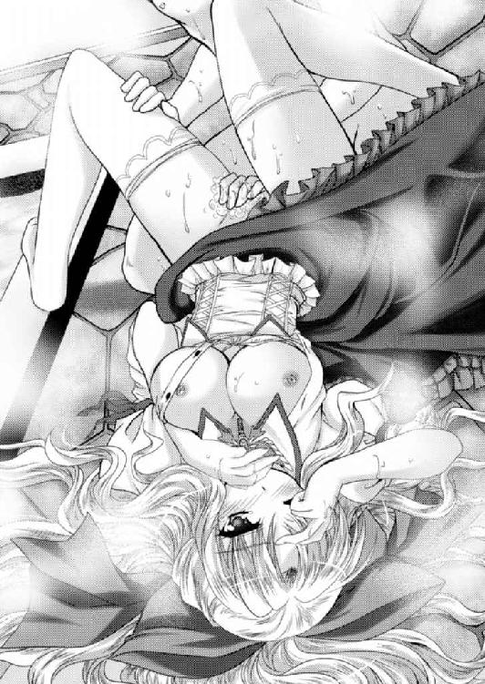
清純可憐な乙女に性感を与えることに喜びを見出したエルフィンは、悪戯心を刺激され、
お尻の穴にまで指を添えて、丁寧に洗ってやる。
「ああ、そ、そこは......」
動揺し恥辱に震えているさまがたまらなくかわいい。
肛門の皺を指先で感じるほどにじっくりと洗ってやったエルフィンは、さらに陰唇をまさぐり、薄皮に包まれた肉芽も優しく撫で回した。
「くぅん......」
一ヵ月以上、自分でも触れることの許されなかった女の急所を捕らえられたナターシャは、子犬のように気持ちよさそうな鼻息を漏らしながら、華奢な四肢を痙攣させる。
「ねぇ、ナターシャ。おま○こ、だいぶ綺麗になったと思うんだけど、次から次へと新しい液体が溢れてきて、いっこうに綺麗にならないんだ。これなに？」
「そ、それは......エルフィンさまがぁぁ〜変なところをいっぱい弄られるから♪」
ナターシャの表情といい、声といい、とろっとろに蕩けているのがわかる。
かわいいな、という思いとは裏腹に、意地悪したくなる不思議な少女だ。よって、エルフィンは虐めてあげる。
「ナターシャ、このヒクヒクしている穴から出ている液体を止めて。こんなにお漏らしされたんじゃ、洗い立てにならないよ」
「そ、そんな......無理......いや、やってみます。くっ......」
愛しい男に陰唇を弄り回されている乙女には絶対に不可能な命令であろう。
しかし、ナターシャは健気にも必死に蜜穴を閉じて、愛液の分泌を抑えようとしたようだ。身をのけぞらせて頑張る。
（うわ、かわいい♪ ナターシャのこのかわいさって異常じゃないか）
ヴァレリアやレイテには感じたことのない嗜虐心をますます刺激されたエルフィンは、必死に愛液の分泌を止めようと膣穴を締める少女の陰核に指をかけるや、ずるりと包皮を剥いてしまった。
「っ」
びっくりと震えた乙女の、そのむき出しになった肉芽を摘む。
「ひぃ！！！」
女のむき出しの急所を摘まれたナターシャは目を大きく見開いて硬直した。
ちょっと強すぎたと反省したエルフィンは、摘んでいた肉芽を離し、代わりに中指の腹で押さえて、クリクリクリクリクリと捏ね回してやった。
「あっ！ そ、そこをそんなにされては、ダ、ダメです。あああっ、あああっ、イクッ、いってしまいますぅぅぅ！！！」
大股開きで腰を高く掲げた乙女は、下手に我慢していたせいだろう。
ブュッ！
股間から飛沫を吐いてから、腰から全身を痙攣させた。
そして、がっくりと脱力する。
「ごめんなさい、わたくし......」
「いいよ。ぼくのほうこそ無理なことを命じてごめんね」
涙顔の少女の唇に、ちゅっとキスをしたエルフィンは身を起こし、いきり立つ逸物をナターシャの蜜壺に添えた。
「いいよね」
「はい。わたくしのせいでエルフィンさまは大変な目にあわれたのです。その罪滅ぼしをさせてください」
「じゃやめた」
エルフィンは腰を引いた。そして、そのまま浴室から出て行こうとする。
「え、なぜでございますかっ!?」
ここにきての見限りにナターシャは慌ててエルフィンに縋る。
「だって、罪滅ぼしで抱かれたいなんて言っている女性を抱いたって面白くないからね」
「そ、そんな......申し訳ありません。罪滅ぼしなどと口幅ったいことを申しました。わたしがエルフィンさまに抱き締められたいのですっ！」
「......抱き締めるだけでいいの？」
少年の意地悪な質問に、少女は羞恥に震えながら答えた。
「いや、その......お、犯されたいのです。エルフィンさまのお大事を、わたくしのお大事の中に入れて欲しいのです」
良家の子女として教育の行き届いた娘である。隠語を口にするのが恥ずかしくて仕方がないらしい。
「お大事なんていうごまかしじゃなくて、もっとはっきりと言ってくれないとわからないよ」
わかっているのに言わせようとするエルフィンに、ナターシャは耳まで真っ赤にしながら応じる。
「う〜......エルフィンさまの、お、お......ちん......ちんを、わたくしの、お、ま○こ......に入れて欲しいのです」
汗をだらだらと掻き、言葉に詰まりながら必死に隠語を口にするナターシャの姿はたまらなくかわいい。それだからこそ、ますます意地悪したくなる。
「どのくらいまで入れて欲しいの？」
「え、ど、どのくらいって、その......えーっと、やっぱり、その......奥まで。お、奥までずっぽりと。エルフィンさまのすべてを入れて欲しいです......」
処女娘としては、逸物がどれくらい入るものなのかわからない。とりあえず、いっぱい入れて欲しいということだろう。
「それから？」
「そ、それから？ え、えー......と、そのいっぱい動いて、エルフィンさまのせ、精液。いや、その、ザーメンと言ったほうがいいのでしょうか？ とにかくエルフィンさまに気持ちよくなってもらって、いっぱい注いでもらいたいですっ！」
これがナターシャのいっぱいっぱいの語彙なのだろう。好きな男の意に応えようと必死に卑猥な言葉を紡ぐ、その健気さが男心を鷲掴みにする。
「わかった、その望み叶えてあげる」
清純派娘の決死の努力は、スケベ少年の心と股間を直撃した。もう我慢の限界となったエルフィンは、再びナターシャを押し倒し、股を開かせた。
そして、ドロドロになっている陰唇にいきり立つ逸物を添えると、ぐいっとばかりに押し込む。
「くっ」
さすがは朱雀神殿謹製『絶対処女』の保証書つきの少女だ。
しっかりとした処女膜があったようである。しかし、そんなものは委細構わず突破した。
ブチッ！
「あぐっ......」
破瓜の痛みに悶絶したナターシャはのけぞりながらも、両腕でエルフィンの背中に必死に抱きついてくる。
膣洞もぎゅっと締めてくるが、男根は強引に突き進む。
そして、ついに根本まで入れることに成功する。
「ナターシャ、全部入ったよ」
「はい。嬉しいですぅ......」
ナターシャは涙目になりながらも、エルフィンの顔を見てにっこりとほほ笑む。
その健気さに男心は鷲掴みにされる。さらに少女はダメ押しをしてきた。
「その......わたくしの身体のことなど、お気遣いなく、好きなように動いてください」
「え、でも、痛いんでしょ」
初めての処女体験だけに、よくわからないが、ナターシャがかなりの痛みに耐えていることは、傍目にも見てとれる。
「は、はい。痛いですけど、我慢します。わたくし、早くエルフィンさまのお大事、いや、おちんちんに慣れたいんです。だから、わたくしへの気遣いなどせずに、エルフィンさまが楽しんでください。わたくし、エルフィンさまのお役に立ちたいのです」
その健気すぎる発言に、エルフィンの脳裏は沸騰した。
そこでナターシャの両膝の裏に手をかけると、夢中になって腰を動かし始める。
「あっ、ああっ、あっ、あん......わたくしの中に、エルフィンさまのおちんちんがぁぁ！！！」
大股開きで男の欲望を受け入れるナターシャはただただ、その身のすべてを任せている。
ここまで完全に主導権を預けられたセックスをするのは初めてだ。
未亡人たちはみんなエルフィンを坊や扱いして、自分から激しく腰を振るう男を貪り尽くしていた。
それに比べると、自分の思うままに腰が使えるというのは、なんとも気持ちいい。
（くっ、ザラザラだ。それにすごい締まる。それになんて熱いんだ）
初めての同世代。そして処女の味に酔いしれたエルフィンは、相手のことを慮ることもできず、ただただ夢中になって腰を使う。
「ウアッ！ 奥まで、奥まで届いています。ずんずんって......」
肉体的にはまだまだ慣れていなくても、心のほうは愛しい男を迎え入れて、掘りまくられる女の歓びに浸っているのが見てとれる。
ここまで慕われると男冥利に尽きるというか、いますぐにでも精液をたっぷりと注いでやりたい気分になる。
（も、もう出そうだ。ナターシャがあんまりにもかわいいから......）
睾丸から溢れ出した液体が、肉棒の先端へと流れていくのがわかる。
（でも、いきなり出すのはかっこ悪いよな。この娘は初めてなんだし、もっと男らしいところを見せないと......）
相手は熟練の未亡人ではなく、生粋の生娘である。それなのにあっという間に出したのでは、男として情けない。
男としての見栄を刺激されたエルフィンは、必死に肉棒に気合いを入れて我慢する。
「ああ、エルフィンさまっ！ エルフィンさまのお大事をわたくしの身体に刻みつけてくださいませぇ」
破瓜の痛みに涙しながらも、男にもっともっと腰を使うことを促すナターシャ。それに煽られてエルフィンの腰使いはどんどん速く、力強く、そして深くなってしまう。
荒々しく犯される牝は、男の背中に腕を回して必死に縋る。
しかし、初めての女性。しかも、初めての処女。その痛いくらいにギュウギュウの締めつけと、ザラザラの膣壁の中を全力で出し入れしていたら、いまだ経験の浅い逸物は、そうそう長持ちできるものではない。
「はぁ、あん、ビクビク、ビクビクしています。エルフィンさまのお大事がビクビクしています......」
女という生き物は、膣内に咥え込んだ男根のちょっとした変化がわかってしまう生き物らしい。驚愕に目を見開く。
「くっ、ナターシャ、もう......もう......イきそうだ！」
「ああ、中に、中にいっぱいお注ぎくださいませっ！」
ブルブルブルっ！
肉棒が痙攣した。それが女体の隅々に広がっていく。
「うっ、でるっ！！！」
雄叫びとともに男根を最深部まで押し込んだ。
「ふぁ！！！」
ブビュドビュドビュュュュュュュッッッ！！！
熱い液体が、男根の先端から勢いよく噴き出して、女壺の中全体に溢れかえる。
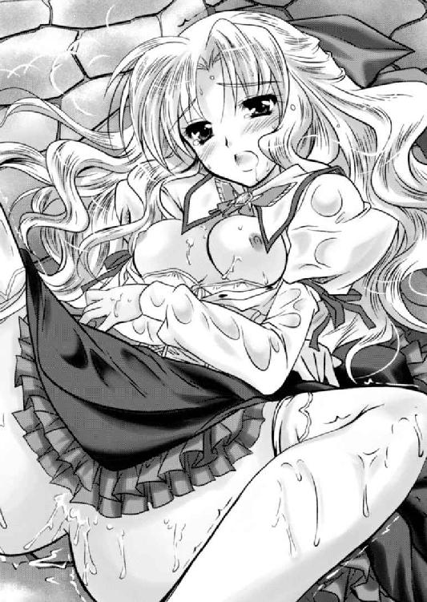
「はぅ、いっぱい、いっぱい、いっぱい、きますぅっっっ！！！」
膣内射精される喜びに、女は男にしがみつきながらヒクヒクと痙攣する。
逸物は執念深く女壺の中に留まり続け、最後の一滴まで注ぎ込んでから小さくなって抜けた。
「はぅ......こんなにいっぱいお情けをいただけて嬉しいです」
ナターシャは自分の股間から溢れ出す白い液体を指で掬い満足げに眺める。そこにはうっすらと赤い血も混じった。
「ナターシャ、その......抱いてしまってからこういうことを言うのは卑怯だと思うけど」
「わかっております。結婚はできないと言うのでしょ」
「ああ」
ナターシャのさっぱりとした答えに、エルフィンは鼻白む。
「当然のことです。エルフィンさまは国王におなりになるのです。正室にはもっと政治的な女性を据えてもらわねば困ります。わたくし、エルフィンさまの傍にいられるだけで幸せなのです。どうか、わたくしを、エルフィンさまの側に置き、その......たまにでいいですから、このようにかわいがってくださいませ、わたくはそれ以上、なにも望みません」
ナターシャの言い分があまりにも健気で、エルフィンはたまらなくなった。
逸物は一気に元気を取り戻し、そのままナターシャをもう一度犯してしまう。
それから湯船に浸かりながらも結合し、イチャイチャする。
「ナターシャはもう一生分、パンツを穿いただろうから、これからはもうパンツを穿かなくてもいいよね」
「えぇ〜......。そんな風邪ひいてしまいますぅ」
心底困った顔をするナターシャが面白くて、エルフィンは快笑する。
「あはは、冗談だよ」
しかし、恥じらう侍女の反応は予想外だった。顔はおろか耳まで真っ赤にしながらも首を横に振った。
「いえ、わかりました。エルフィンさまがお望みでしたら、わたくしもう二度とパンツを穿きません」
「いや、あの冗談だから」
慌てるエルフィンに、羞恥に眉を震わせながらもナターシャは真面目に応じる。
「綸言汗の如しと申します。わたくし、二度とパンツを穿きません」
かくしてナターシャは二度とショーツを穿くことはなかった。
以後、エルフィンはいずれ来襲するだろうセルベリア王国軍の迎撃の準備に精魂を傾ける間に、ナターシャの身体で英気を養った。
「伝令!! セルベリア王国軍ヴァレリア将軍を総大将にして王都ヒューリアスを出陣。フルセン領に向けて進撃しているとのこと！ 途中、マージョリー、ジュネーらと合流し、総数は五千に上ると考えられます!!」
総督府に王都に潜行している解放軍から、伝令が送られてきた。
すわ、いよいよか、と気色ばむ幕僚たちを余所に、執務室で報告を受けたエルフィンは違和感を覚える。
「五千とは......少ないな」
少ないといっても、フルセン軍は、義勇軍やら解放軍やら傭兵やらをかき集めてやっと一千五百人である。
それに比べたら十分すぎる大軍だ。しかし、最悪一万。少なくても七千は来るだろうと予測していたところに、五千という数字は半分である。
「それにファルビンとカーラは不参加......？」
主将の頭数が足りないということは、当然、その直属の将校たちも参加しないということだ。
これでは徴兵された農民が中心の寄せ集め軍ということになり、質のほうも予測より低いと考えていいのではあるまいか。
「若、これはいかなることでしょうか？」
主君と同じ疑問を持ったロックスがお伺いを立ててきた。
眉間に皺を寄せたエルフィンは考え考え答える。
「おそらくジューザスが、ヴァレリアさまを信用しきれなかったということだろうな」
幼い頃のエルフィンがコンミュウス家に預けられ、ヴァレリアとは姉弟同然に育てられたことは周知のことだ。その付き合いを考えて、万が一ヴァレリアが寝返った時のことを慮ったのではなかろうか。
保険として、もっとも信頼できるファルビンを手元に残し、ヴァレリアに対する人質という意味で、親友のカーラも引き離した。
そのような心理が読めた時、自然とエルフィンの口元に冷笑が浮かんだ。
「所詮は暗君ということか」
エルフィン率いるフルセン地方の反乱は、セルベリア王国にとってかつてない危機であるはずである。
放っておくと、燎原の火のように勢いを強め、各地に含み火となっている不満が、業火となって燃え上がるのは必然。そんな大火を招く前に、火種は早急に潰さねばならないはずだ。
それなのに兵力の出し惜しみをするなど愚の骨頂である。
あるいは財政的な配慮かもしれない。さすがに一冬に二度も、大規模な反乱鎮圧のために大軍を動かしたのでは、国庫が持たないだろう。
「いずれにしても、セルベリア王国の底は知れたな。あとは簡単だ。戦って勝つ。それだけだ」
エルフィンは立ち上がった。そして、居並ぶ諸将に命じる。
「各砦に配置している兵士たちを集結させろ。決戦はミドガルド平原で行うっ！」
※
エルフィンはあえて国境の砦シルバーベルを放棄。ヴァレリア率いる反乱鎮圧軍を、フルセン領奥深くにまで引きずり込んだ。
もちろん、セルベリア勢に安楽な行軍を許したわけではない。地の利を活かしたフルセン勢は、小規模な部隊を出して、散々にゲリラ戦を仕掛けて、細かい出血をした。
そんな嫌がらせのような戦闘にさらされたセルベリア勢が、ようやくフルセン衆の主力と出会えたのはミドガルド平原でのことである。
春先のことであり、緑の芽吹いた草原には一面の菜の花が咲き誇っていた。
そんな美しい自然を汚す無粋な存在として、東にセルベリア勢は約五千人。西にフルセン勢は約千五百人が睨みあっている。
いくら地の利があるとはいえ、野戦を行うには隔絶した兵力差だ。
それを補うために、フルセン衆は前面に逆茂木を配していた。
逆茂木とは、木の杭や枝のついたままの木、または逆さまにした木などを打ち込んだバリケードである。空堀や落とし穴の底に打ち込んでいる場所もあれば、逆に準備の間に合わなかった場所には、切り株を逆さまにしたものを、そのまま流用している。
これで敵の突撃を阻みながら、弓矢や魔法を撃ちかけるのだ。
単純なようでいて、これを突破するのはなかなかに骨の作業である。
両軍の主力が睨みあい、いよいよ開戦間近となった時、エルフィンはヴァレリアとの会見を申し入れ、翌朝、互いの陣の中央で会おう、との返事をもらう。
「では、決戦は明日だ。全軍に今夜はゆっくりと休養を取るように伝えてください」
エルフィンが居並ぶ幕僚に命じると、解放軍の代表として出席していたレイテが小首を傾げた。
「いいのかい？」
戦とは所詮、騙しあいである。油断していると思えば奇襲をされるだろう。
「ヴァレリア将軍は、気質のまっすぐな方だ。卑怯な手は使わないさ」
エルフィンは、ヴァレリアのことは誰よりも知っているつもりである。あの誇り高い大天使が、弟分の自分を倒すために騙し打ちのようなことをするはずがない。
決戦を前にした最後の休養ということで、幕僚たちはやれやれといった顔で出ていった。
みな友人や恋人と最後の一時を過ごすなり、誰かに手紙なりを記すのであろう。
エルフィンもまた床几から立ち上がり、甘い花の香りを運ぶ風を受けながら、夕日に沈みゆく敵陣を見る。
（さて、ぼくは勝てるのか。あのヴァレリアさまに......）
「はぅっ！」
深刻に苦悩していたはずのエルフィンか、唐突になんとも情けない悲鳴を上げた。
背後から回ってきた手によって、いきなり股間を鷲掴みにされたのだ。
「レ、レイテ姐さん何を......っ!?」
動揺もあらわなエルフィンが背後を窺うと、レイテは悪戯っぽく笑った。
「深刻ぶっている顔も素敵だけど、金玉縮こまっているわよ」
「いや、でも......うわぁぁぁぁ」
男の急所をコリコリと弄ばれたエルフィンは、へっぴり腰になって身悶える。これでは明日の大一番に臨む大将の威厳などあったものではない。
「総大将が不景気な面をしていたら全軍の士気に影響するわ。あなたはもう打てる手は打てるだけ打ったんだ。あとは人事を尽くして天命を待つってやつさ。もっと胸を張りな」
「いや、しかし、この状況でそんな......」
動揺するエルフィンに、一人座席に残っていたロックスが豪快に爆笑した。
「わはははっ。小娘。さすがは女だてらにレジスタンスの頭を張っておっただけはあるわい。空気が読めるの」
「小娘って、あたしゃ、子持ちなんだけどね」
レイテは小さくぼやくが、小娘呼ばわりされるのは悪い気持ちはしないらしい。
そんな未亡人の呟きは無視して、老練な戦人は得々と語る。
「若、戦とは祭りですぞ。総大将たる者が率先して楽しめば、兵士たちは笑って戦場に向かいましょう。強敵と戦うは武人の誉れと、もっと心弾ませくださいませ」
「言ってくれる......しかし、その通りだな。ぼくが沈んでいたら、兵士たちまで沈む。それでは勝てる戦も勝てなくなる」
総大将の心理は、兵士たちの士気に影響するものだ。
無理やりにでも自らを鼓舞しなくてはならないと察したエルフィンは、右手でレイテの大きな乳房を鷲掴みにし、そのまま軍机の上に押し倒す。
「きゃっ！」
エルフィンの豹変ぶりに驚いたレイテは、思いの外かわいい悲鳴を上げた。
「ちょ、ちょっと大丈夫。坊やなんか目が据わっているんだけど......」
「ロックス、兵士たちに触れて回れっ！ 明日の戦、勝てる算段はしてある。今夜は安心して英気を養えとな！ 俺はこれから女を抱く、下がれっ！」
「ははっ」
ロックスが出ていこうとする時、諸将に出したお茶を下げていたナターシャが必死の表情で叫んだ。
「エルフィンさま！」
みなの視線が集まると、大人しい少女は恥ずかしそうにモジモジしながら訴える。
「そ、その......戦をする前に、女性を抱くことになんらかの意義があるのでしたら、その......その役目はわたくしが......よ、よろしかったら、やりとうございます」
どうやら彼女なりに愛人としてのプライドが疼いているようである。
「よし、こい。二人まとめて面倒見てやる」
ナターシャの手を引くと、レイテとともに大きな机に並べさせた。
「では、お邪魔のようですので失礼いたしますぞ」
天幕から出ていったロックスの呵呵大笑する声が聞こえてきた。
「いやまったく若はご元気だ。これから勝ち戦前の景気づけとして、女を二人も頂くそうだ。まったく頼もしくなったもんじゃわい。わはは」
兵士たちの艶笑が聞こえる。それを聞いたナターシャが心配そうにお伺いを立ててきた。
「あ、あの......いいのでしょうか？ あのような......その、エルフィンさまの権威に傷がつくのでは......」
「いいんだよ。ロックスは、ぼくの意を察してわざと大声で触れ回っているんだ」
女好きというのは悪いことではない。ジューザス王のように仕事もせずに遊び回っていると嫌悪感を持たれるのは当然だが、身の丈に合った女好きなら「あの人も好きだね」という笑い話になる。
まして、兵数的には絶望的な敵を前にしても、女を二人も抱くほどに元気というのは頼もしい。
大将にそれだけ余裕があるならば、明日の戦も勝てるに違いない、と兵士たちに不思議な安心感が生まれるものである。
「というわけで、兵士たちに安心してもらうためにも、二人には思いっきり喘ぎ声を上げてもらうからね」
「まったく、こういう計算ずくで抱かれるのは女としてあんまり嬉しくないんだけどね」
レイテは苦笑するが、素直に身を任せてきた。
「まぁ、そう言わずに楽しんでください」
レイテとナターシャを二人並べて軍机の上に仰向けに寝かせたエルフィンは、まずは二人の胸元をはだけさせた。
「っ！」
レイテの黒い下着のような胸当ての中から、ボインッという擬音が聞こえてきそうなほどの迫力乳房が姿を現した。
これには傍らのナターシャも目を剥く。
いくら大人しい少女といえど、同じ男の情婦という立場である。意識するなというのは無理なのだろう。
それなのにボンッキュッボンッといった擬音が聞こえてきそうなダイナマイトボディを見せつけられて、女として負けた、といった気分になったようだ。
「ふふん♪」
そんな小娘の心境など手にするようにわかると言いたげにレイテは、からかうように鼻で笑う。
大きさでは勝負にならないナターシャの乳房だが、白い肌と淡く小さな桃色の乳首のコントラストは、男の目を十分に楽しませる。
右手でレイテのエロ爆乳、左手でナターシャの清潔感のある美乳を豪快に手に取ったエルフィンは、四つの乳房を弄んだ。
「うん、あん......」
二十代後半の経産婦と、十代半ばの乙女では、やはり身体の作りは何もかも違った。
大きな乳房のほうが圧倒的に揉みがいがあるとはいえ、小さな乳房を撫で回す繊細な感触も捨て難い。
赤い椿の蕾のような大粒の乳首と、桜色をした小さな乳首を、指で扱き立て、口に含んで存分に吸う。
男の手伝いをしようと、女たちは自ら乳房を手に取って揉みしだく。
結果、レイテの乳首が豪快に、ナターシャの乳首がかわいらしくしこり立ってきたところで、顔面を四つの乳房に埋めたまま、両手を女たちの下半身に這わす。
黒い革のパンツと、清楚なスカートの中にそれぞれ指を入れる。
「うぅん♪」
女たちはそれぞれのけぞった。
大人しい顔をしたナターシャだが、常にノーパンであるから、こういう時は便利である。指にすぐ淡い毛質が絡みつく。一方のレイテの陰毛は一本一本が太かった。それでいて繁茂面積は少ない。普段から過激なパンツ姿なのだ。お手入れをしているのだろう。
ふわふわの陰毛と、しゃりしゃりした陰毛の毛質の違いを楽しみつつ、陰唇に指を入れる。
くちゅりクチュリ......。
指に温かい粘液が絡みつく。
レイテの愛液は、とろとろと粘着質なのに対して、ナターシャの愛液は、さらさらしている。
指がふやけるまで女壺を弄んだエルフィンは、そろそろよかろうと判断して、身を起こし、ズボンを下ろした。
そこで愕然と立ち尽くす。
「えっ」
女を抱く時、いつも痛いほどにいきり立つ逸物が、今日に限ってピクリとも反応していなかったのだ。
「......こ、これは......」
動揺するエルフィンとは別に、主君の逸物が小さいままだと知ったナターシャも、ショックで愕然としている。
「え、あ......エルフィンさま、わたくしに飽きられた......」
「そ、そういうわけじゃないんだけど......ど、どうしたんだろ。ぼく......」
予想外の事態に顔面蒼白になっておろおろしているエルフィンを前に、バンダナに巻かれた頭髪を掻いたレイテが、呆れたと言いたげに苦笑を浮かべた。
「ふっ、いくら豪快に装っても、おちんちんはごまかせないってことだね」
「えっ」
縋るような表情をする少年に、お姉さまは苦笑する。
「あのね。女の身体をまさぐりながら、まったく別のことを考えていたら、そうなるわよ」
指摘されてわかった。自分はいままでレイテと、ナターシャの身体をまさぐりながらも、脳裏は明日の戦のことでいっぱいだったのだ。
「......す、すいません」
「ふっ、謝るようなことじゃない。男を元気づけるのが女の仕事さ」
身を起こしたレイテは、逆にエルフィンを軍机に寝かせた。
「まったく、戦の準備の一環として、セックスしようなんて小難しいことを考えるから、こういうことになるのさ。セックスなんて本能のままに楽しめばいいのにさ。ほら、リラックスしな」
素っ裸にされたエルフィンの胸元を撫でながら、レイテは傍らで呆然としているナターシャを見る。
「ほら、あんたもいつまでだらっと股開いて寝ているんだい。マグロな女なんてすぐに飽きられて捨てられるよ」
「え、あ、はい......」
同じ愛人という立場で、レイテを意識しまくっているナターシャは、戸惑いながらもその指示に従う。
エルフィンの右側からレイテ、左側からはナターシャが寄り添った。
「じゃ、始めようか？ しっかりご奉仕するんだよ」
同僚に片目をつぶってみせたレイテは、エルフィンの唇に自らの官能的な唇を重ねた。
「あっ」
ナターシャも負けじと、エルフィンの唇に自らのかわいらしい唇を重ねてくる。
「ん、んん、うん......ふぅん......」
二人の柔らかい唇が、交互にエルフィンの唇に押しつけられ、擦りあわされる。そのうちに女たちは舌を出し、男の唇を舐め回す。
さらに男の右半身にレイテの強靭な舌、左半身にナターシャの小さな舌が這い回っていった。
ピチャリ、ピチャリ、ピチャリ......。
まるで猫がミルクでも舐めるかのように、女たちの濡れた舌が、唇から頬、顎から額、額から耳、首筋を、鎖骨を、腕を上げさせられて脇の下などを舐められる。
左右の脚には女たちの脚が絡められ、濡れた陰毛を擦りつけられた。
（あぁ......すごい気持ちいい......）
女たちの愛がひしひしと伝わってくるようだ。ストレスに押しつぶされようとしていた少年の心が少しずつ軽くなっていく。
左右の乳首まで舐められて、エルフィンが恍惚としていると、やがてレイテが顔を上げた。それにナターシャも従う。
「どうだい、そろそろできるだろ」
レイテに促されて、エルフィンは自らの股間を見下ろした。
そこでは逸物が天を突かんとばかりにいきり立っている。
「あぁ、エルフィンさまのお大事が復活されました」
いままでお酒でも飲んでいたのか、と心配したくなるほどに顔を赤くしているナターシャの青い瞳が、嬉しさにキラキラと輝く。
「あぁ......、その......ありがとう」
はにかみながらお礼を言うエルフィンに、姐御肌のお姉さんは莞爾と笑う。
「お礼には及ばないよ。あんたの年でインポになるなんてまずないんだから。......そんなことより、あたしゃそろそろその立派なおちんちんで突きまくってもらいたいんだけどね」
「わたくしだって突いてもらいたいですぅ」
慌てて詰め寄ってくるナターシャの下半身もかなり切なそうだ。受け身一辺倒だった少女が初めて攻めに回ったことで、いつも以上の昂揚感に誘われているのだろう。
「わかりました。今度こそ、お二人の喘ぎ声を、戦神への供物として捧げましょう」
軍机から身を起こし飛び降りたエルフィンは、代わって二人の情婦を軍机に寝かせた。
そして、右側のレイテの左足を右肩に、左側のナターシャの右足を左肩にかける。
レイテは右側面を机につけ、ナターシャは左側面を机につけ、それぞれ向かいあうことになった。
この状態で、愛液滴る二つの蜜壺に特攻する。
「あんっ♪」
これが男女一組による普通のセックスならば松葉崩しといわれる体勢だ。しかし、二人いることで女たちは鏡合わせのように相手の姿を見ることになる。
「うおおおぁぁぁぁぁっ！！！」
野獣のような雄叫びを上げたエルフィンは、二つの蜜壺を行き来した。
まだ男を知って間もない乙女の硬くて狭くてザラザラした蜜壺と、子供も産んだ経験のある女の柔らかくウネウネとした蜜壺。
それだけでもまったく違う感触で気持ちいいのに、さらに二人とも横位で向かいあっているために、蜜壺が左右にぶれる。
（右側面がザラザラしたり、左側面がザラザラしたり、これはすごい、くせになりそう......）
我を忘れたエルフィンは夢中になって二穴を行き来する。
「は、恥ずかしいですぅ......」
乱交初体験のナターシャはたまらず悲鳴を上げる。
「あたしだって、恥ずかしいわよ。一回りも違う女と比べられるのよ」
悪戯っぽく笑ったレイテはナターシャをぐいっと抱き締めた。
女たちの前面が重なりあう。熟れた乳房と青い乳房が押しつぶしあった。
その艶姿に魅せられたエルフィンは、ますます腰使いが激しくなる。
「はぅ、感じますぅ。レイテさんの体内に入っている時にまでわたくしの身体に衝撃がぁん」
向かいの女の体内に入っている時も、男の腰は両方の股間に当たっているわけで、ドスンドスンとした振動とともに、向かいの女性の感触まで疑似的に体験してしまっているようだ。
女たちはまるで鏡合わせのように喘いでいる。
「はん、いいぃぃぃ......ああぅぅぅ......」
「すごい、イク、もうイクぅぅぅぅぅぅ！！！」
女たちは向かいの女の喘ぎ声に釣られて、自らも大きな喘ぎ声を出している。
その喘ぎ声に釣られてエルフィンの腰使いはどんどん速くなっていった。
蜜壺もキュンキュンと蛸壺のように締めてくるが、もはやどちらに入れているのかなどよくわからない。
「も、もう、イきますっ！」
「いいわ！ きて」
「あぅ......」
レイテの威勢のいい答えと、ナターシャの気の抜けた返事に導かれ、エルフィンは精を放った。
「くっ」
ドビュドビュドビュドビュドビュュュュュュッ！！！
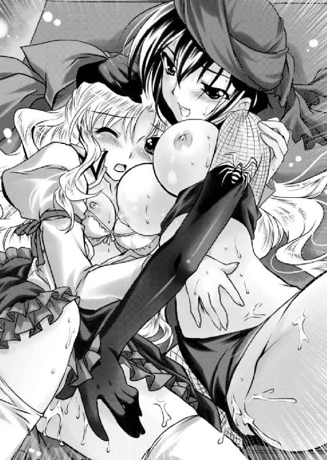
「はぁぁぁぁぁぁんんん!! ビュービューどくんどくんってぇぇぇ！！！」
「いああああああんん！！！ あたしにもびくんびくんってきているよぉぉぉ！！！」
どうやら女たちも交互に入れまくられることによって、自分の体内に入れられているのか、向かいの女の体内に入れられているのかよくわからなくなってしまったらしい。陣屋に女たちの絶頂の声が響き渡る。
エルフィンが改めて見下ろすと、ナターシャの膣内で果てたようだ。しかし、まだまだできる。
暴走する牡は、まったく小さくならない逸物の勢いそのままに、蜜壺巡りを再開する。
グチュグチュグチュ......。
「あはっ、すご〜い♪」
精液と愛液の混じりあった粘液が、二つの蜜壺を満たす。一匹の牡と二匹の牝は、まさに淫獣となって激しく肉交を続ける。
エルフィンは何度も何度も精液を放ち、そのたび牝たちは同時に絶頂を繰り返した。
自分の体内で射精されようと、向かいの体内で射精されようともはや彼女たちには関係ないらしい。感覚が完全に一体化してしまったようだ。
「うおおおおっ！！！」
湧き上がる欲望のままに射精を繰り返したエルフィンも、すべてを出しきって女たちの胸の谷間へと沈んだ。
それをレイテとナターシャは優しく受け止めてくれる。
「ありがとうございます。二人のおかげで、明日の戦、勝てそうな気がしてきました」
軍机の上に仰向けになるエルフィンの感謝の言葉に、その左右から抱きつくレイテと、ナターシャは頷く。
「まったく、男ってのは手間がかかるわよ」
「わたくしエルフィンさまのお役に立てて嬉しいですぅ」
こうやって気力を充実させたエルフィンは、決戦の朝を迎える。
※
一面の菜の花が咲く草原を、爽やかな春の風が吹き抜ける。
約束の時刻、戦支度を整えたエルフィンが、逆茂木の近くまで馬を駆けさせると、セルベリア王国の陣営からも、紫銀色の豊かな長髪をなびかせて、白馬に跨った大天使がやってきた。
「ヴァレリアさま......お久しぶりです」
「元気そうで何よりだ」
両軍の主将は、逆茂木を挟んで馬に乗ったまま挨拶を交わす。
多くの兵士が遠巻きにしながら、息を詰めて見詰める会談である。
さすがに二人とも硬い表情をしていた。
お互い形式的な挨拶をした後、エルフィンが本題を切り出す。
「ヴァレリアさまもいまやジューザスは害悪でしかないことは承知しておられるでしょう。暗君に仕えて後世に汚名を残すよりも、ぼくらに協力してくれませんか。あなたが叛旗を翻したのなら、ぼくは喜んであなたの旗の下に馳せ参じることでしょう」
「ふざけたことを」
冬の朝空のような冷たい眼差しをしたヴァレリアは笑い声を立てずに、薄い口元にだけ鋭い笑みを閃かせた。
「わたしは国王の従妹にして、その代理として兵権を預かる立場だぞ。そのわたしに寝返りを持ちかけるなど笑止。話がそれだけならばもはや時間の無駄というものだ。以後は刃によって語ろうではないか」
冷たく言い捨てたヴァレリアがとっとと馬を返そうとしたので、エルフィンは慌てて言葉を投げかける。
「いまのあなたではぼくに勝てない！」
この一言にはさすがにカチンときたのだろう。会談を打ち切ろうとしていたヴァレリアは馬足を止めて振り返った。
「ふっ、いつもわたしの影に隠れて歩いていた小僧が、言うようになったではないか」
「古来より戦に勝つためには、天の時、地の利、人の和が必要だと言われています。しかるにいまのあなたの軍にはそのいずれをも欠いている。兵力がいかに多かろうとものの数ではありません」
エルフィンの宣言に、ヴァレリアは今度こそ蒼穹を仰いで笑った。
「あはは......昔からかわいげのないガキだったが、本当にかわいげがなくなったな」
それは笑うしかないといった意味の狂笑に見えた。
エルフィンは、ヴァレリアも自分と同じ気持ちだ、と確信していたが、それは私人としての感情である。責任感の強い彼女の公人としての仮面を剥ぐことはできない。
その二律背反が笑う形の衝動になったのだろう。
ひとしきり笑ったヴァレリアは、表情を引き締めて、再び手綱を引いた。
「さらばだ。もう二度と生きて互いの顔を見ることもあるまい」
そう言い捨てたヴァレリアはすべてを振りきるように、己が陣屋に帰っていってしまった。
エルフィンも、ことここに至って説得が叶うとは思っていなかったが、それでも一縷の夢を捨てきれずにいた心がある。
しかし、改めて現実を見せつけられ、悄然と自陣に帰らざるを得なかった。
※
「さて、ヴァレリアさまはどう動くかな」
逆茂木を配して万全の防御陣を敷いたフルセン側から動く道理はない。
逆にセルベリア王国軍側にとって、早期解決は至上命題であろう。時間をかければかけるほど、各地の反乱軍は勢いを増すはずだ。
必ずセルベリア王国軍側から動く。
「敵、動きました」
待つほどもなく伝令が駆け込んできた。
「敵右翼、マージョリー将軍率いる一千五百。我が軍の左翼側面に回り込もうとしております」
一ヵ月前まではともに戦っていたのだ。動いた軍の旗印を見れば、どこの部隊が動いたかはわかる。
報告を受けて、エルフィンは安堵の溜息をついた。
「やはり士気は低いか」
包囲戦など、ヴァレリアの気質に反する。三倍以上の兵力差があるのだ。本来の彼女ならば、逆茂木などものともせず正面からの突破を目指したはずである。
それができないのは、兵士たちの士気が思うように上がらないからに他なるまい。
「ロックス。おまえは手兵百人を率いて、マージョリー将軍を止めろ」
「御意」
エルフィンの命令を、ロックスはごく静かに受け止めたが、傍らにいたレイテが喫驚した。
「ちょっと待ちな!? あんたらいまの伝令聞いていたのかい！ マージョリー将軍は一千五百だよ！ 百ばかりの兵を率いていってなんになるっていうんだい！」
もっともな意見のはずだが、この場の雰囲気ではなぜか浮いていた。
エルフィンはごく冷淡に応じる。
「止められなかったら、ここでぼくたちが死ぬ。それだけのことだ」
「えっ」
エルフィンの怖いほどに澄みきった言い回しに、レイテは絶句させられる。
「まぁ、小娘。そうギャーギャー喚くな。レジスタンスなどとは違う。本当の戦というものを見せてやろうぞ」
そう力強く宣言したロックスは、手兵百人を率いて出動した。
「だから、あたしゃ、子持ちなんだけどね」
いつものように小娘扱いされたレイテは釈然としないといった様子でぼやく。
そして問題のロックスだが、言葉通り、手兵だけで自軍の総数に匹敵する敵を翻弄してみせた。
逆茂木の外側は深い森であり、大軍の運用に向かなかったということもあるが、兵士たちの士気の差が出ているのだろう。ロックスの手兵百人は一兵残らず決死なのに対して、マージョリー将軍の一千五百人のほとんどの者が、こんなところで死ぬ気がない。ロックスの兵に斬り込まれると、マージョリー軍の兵士たちは簡単に崩れて引いてしまう。しかし、兵力差があるから他の方面で盛り返す。そんなイタチごっこの戦いだ。
「こいつは驚いたね。本当に止めちまったよ」
狐につままれたような表情のレイテが、信じられないといった様子で戦況を聞いていると、再び危機を知らせる伝令が駆け込んできた。
「ジュネー将軍率いる一千五百人が、我が軍の右翼側面に回り込もうとしています」
「マリガン。手兵の二百人を率いてジュネー将軍を止めろ」
エルフィンに指名されたマリガンは首を振った。
「いや、ロックスどのが百で食い止めているのです。それがしも百で結構。半分は置いていきます」
エルフィンとマリガンの視線が正対した。
まさかの受け答えに、傍らで聞いていたレイテはカクンと顎が外れそうな表情である。
「わかった。いけ」
「よき働き場を与えてくださり、ありがたき幸せ」
マリガンは手兵百を率いて、右翼へと向かった。そして、こちらも同じような戦局を膠着させてしまったのである。
とはいえ、ロックスも、マリガンも、十五倍もの敵を相手に戦っているのだ。兵力の差を士気で補うなどという戦い方は、時間によって崩壊する。どんな勇者でも、いずれは疲労するのだ。
本陣には肌がビリビリするほど緊張感が走っており、耐えかねたレイテは顎を伝う汗を拭う。
「まったく熱いねぇ〜」
まだ春先だというのに、戦場の熱気は凄まじい。
「......」
エルフィンはじっと待っていた。ただ戦場の音を聞き、伝えられる戦局を整理する。
左右両翼から回り込もうとしながらも、少数の敵に掻き回され、思うように動けないセルベリア勢の両翼は焦り、どんどんと戦線を開いていく。
かくしてセルベリア王国軍は左右両翼に大きく伸びた。
「よし、いまだ。我々は真っ正面から、敵の本営をつく」
宣言と同時にエルフィンは馬上の人となった。
「工作部隊。当初の予定通り、逆茂木を退かせ！」
セルベリア側から見るとなんとも邪魔な障害物も、フルセン側から見ると自分たちで作った玩具だ。
あれよあれよという間に、道を塞ぐ逆茂木を空堀に叩き落とし、土を盛り、渡し板を渡した。そして、あっという間に平地にしてしまったのである。
「っ!?」
突破は困難だと思っていた障害物が一瞬にして消えたのだ。
セルベリア軍が驚愕している間に、エルフィンは叫んだ。
「全軍、我に続け───っ！！！」
刀をかざしたエルフィンは先頭になって駆けだした。
それにいままで我慢に我慢をしてきたフルセン軍の本体千三百人が続く。
正面にいるセルベリア軍は二千人でしかない。
左右両翼に、それぞれ百人しか向かわせなかったのは、これをしたかったからである。
「まったくあの坊やの心臓はどうなっているんだろうね。まったく正気の沙汰じゃないよ。仕方ない。こうなれば自棄だ。あたしらも死ぬ気でいくよ！」
レイテもまた、解放軍の面々を叱咤して続く。
まさにフルセン勢は火の球だった。
「吶喊ぁぁぁぁぁん!!」
「うああああああああああっ！！！」
フルセン勢は声の限りに叫び、セルベリア勢に突撃していく。
（この兵力だ。ここで勝たないと次はない）
エルフィンだけではない。フルセン衆のすべてがそのことを知っていた。それだけに必死である。
まさに乾坤一擲だ。
エルフィンからして、陣頭に立って刀を振るい、死の物狂いで斬り込んだ。
その狂気といっていい気合いが、フルセン勢全体に乗り移り、凄まじい破壊力を持って、当たるが幸いに蹴散らしていく。
そして、奇跡が起こった。
「おい、大変だ。後背の部隊が撤退していくぞ」
「なに、背後から別動隊が来ているのか」
最前線で戦っているセルベリア勢は目を剥いた。なんとセルベリア勢の最後陣から兵士たちが逃げ出しているのだ。
この時フルセン勢は別動隊を出してはいない。ヴァレリアは無能とは程遠い将帥であり、決戦の最中に、背後に部隊を回すようなマネをさせてくれるはずがない。
何もないのに後方の戦線参加してない兵士たちが逃げ出したのだ。いわゆる裏崩れである。
これは士気の低い軍が、劣性になると起きる現象だ。
もともと無理やり徴兵された農民兵が中心だ。士気など高いはずかない。その上、鬼神の如き敵を前に怖気づいてしまったのだ。
背後にシルバーベル砦という安全地帯があると思えば、そこに逃げ込んで安心を得たいと考えるのは、兵士の心理というものだろう。
「やった！ 勝ったぞ！ 勝った！ 勝ったっ！ 勝ったっ！」
フルセン勢は狂喜し、逆にセルベリア勢の士気はみるみるうちに雲散霧消していった。
恐怖というものは伝染する。左右両翼のマージョリー、ジュネーも崩壊し、ロックス、マリガンは追撃に移る。
しかし、勢いに乗って追撃するフルセン勢の前に、『舞う羽』の軍旗が翻った。
「戦天使っ！」
ヴァレリアが父ヴァミリオンから受け継ぎし、セルベリア王国軍最精鋭部隊、通称『戦天使』と呼ばれる騎士団だ。
その旗が翻るさまを見るだけで、敵は畏怖し、敗北を覚悟するといわれる。
突如として舞い降りた死を告げる天使たちは、勢いに乗って追撃してくる悪鬼たちの鋭鋒を叩き砕いた。
「引けっ、引けっ、調子に乗りすぎだ。いったん引いて、態勢を立て直せっ！」
フルセン衆の将校たちは声を嗄らして叫び、無秩序な追撃戦を中断させて、敵と距離を取らせた。
とはいえ、セルベリア王国軍のほうもみな我を忘れて逃げ出しており、戦場に留まったのはヴァレリア直属の騎士たちだけだ。彼らはいかに精鋭とはいえ、二百騎ほどである。これだけで戦局を覆すことはできない。
「我々も今日のところは一度、シルバーベル砦に退却する」
馬上のヴァレリアが長槍を横にして退却命令を下すと、彼女を中心とした戦天使の群れは、ゆうゆうと後方の砦に退却していった。
それを追撃しようという命知らずな者は、さすがのフルセン衆にもいなかった。
とはいえ、セルベリア勢は、ミドガルド草原から消えて、フルセン衆は残ったのだ。
これを勝利と言うのだろう。
「すごいね。なぜ坊やが軍事の天才と呼ばれているのかを肌身で実感したよ。ただの早漏の坊やじゃなかったんだね」
感激したレイテは、エルフィンに抱きついて軽口を叩いた。
しかし、目に狂気を宿らせたままの若き覇者は、壮絶な表情のまま命を下す。
「まだだ。まだ終わらない。元気なやつを集めろ。今日中にすべてを決めてやる」
※
その夜、フルセン勢はシルバーベル砦に夜襲をかけた。
一般に城攻めには、三倍とも十倍とも言われる兵力が必要とされる。しかし、現実は逆である。
まして、シルバーベル砦は山城。攻略は非常に困難であると誰もが思ったことだろう。
それが会戦の行われたその夜に、襲撃してくるとはまったく予測していなかったに違いない。
周章狼狽する城兵たちをさらに混乱させたことに、エルフィン率いる精鋭百人は、いきなり城内に姿を現した。
じつはシルバーベル砦を放棄した時から、抜け道を作っておいたのである。
セルベリア王国軍は僥倖で手に入った砦を、中継基地に使って、そのままフルセン領深くに攻め入ったので、砦内をチェックする余裕はなかったのだ。
「狙うはヴァレリア将軍だ！ ヴァレリア将軍を捕らえよ！」
何せ自分たちの砦であったのだ。その構造はよく知っている。
辺境の砦で、貴賓室も限られるわけで、ヴァレリアがどこに泊まっているかは予想がつく。
途中に立ちはだかる戦天使と呼ばれる一騎当千の騎士たちは、部下たちに足止めさせながら、エルフィンはまっすぐに、敵の総大将の部屋に踏み込んだ。
「ヴァレリアさまっ！」
部屋は空であった。焦ったエルフィンが周囲を確認していると、答えがあった。
「ここだ」
魅惑的な低音の声に振り返ると、露台へと続く窓辺のカーテンが夜風に翻った。
その窓枠の向こう側。
煌々と輝く満月を背に、紫銀色の髪を羽根飾りのついた額飾りで留め、竜胆色の胸鎧に、黒いインナー。白地に金縁のミニスカートの上に、白い腰覆いを巻いた美人が立っていた。
右手に長槍を持ち立つ姿は、まさに天界の戦天使たちを統べる大天使長といった風格である。
「ヴァレリアさま......」
その神々しいまでに美しい姿に、エルフィンは我を忘れて魅せられた。
「たいしたものだ。おまえの実力をよく知っているつもりだったわたしの予測を超えた手並みだ」
「勝敗は決しました。降伏してください」
エルフィンの呼びかけに、ヴァレリアは冷笑で報いた。
「甘いな......王家を簒奪しようというおまえがそんな甘いことでどうする。ここまできたのだ。わたしの屍を踏み越えていけっ！」
この時エルフィンは、ヴァレリアがセルベリア王国滅亡の象徴として死のうと考えていることがわかった。
確かに現在のセルベリア王国は、ヴァレリアの存在によって支えられているという側面がある。
セルベリア王国軍の至宝といえるヴァレリアが敗死したとあっては、セルベリア王国軍は一気に崩壊するだろう。
「いや、殺させません。ヴァレリアさまには生きて頂く。ヴァレリアさまが我々に与したとなれば、いまだにセルベリア王国を支えている忠臣たちも目が覚めましょう」
「世迷い言を。おまえはわたしに生き恥をさらせと言うのか!?」
ヴァレリアの白磁のような頬にさっと赤みが射す。
「わたしはセルベリア王国の筆頭貴族コンミュウス家の娘。セルベリア王国の誉れである『舞う羽』の旗を掲げる者ぞ。亡き父の名誉にかけても、わたしが降ることはありえんっ！」
鋭く言い捨てたヴァレリアは踏みだすと同時に、長槍を繰り出した。
穂先が三条に見えるほど、鋭い三段突きだ。
「くっ」
エルフィンは大きく後ろに跳びのいて避ける。
「よくかわした。もはや昔の泣き虫坊やではないということだな」
「......」
「では、改めていくぞ。エルフィンっ！」
ヴァレリアの繰り出す槍と、エルフィンの操る刀が軽やかに合わさる。
（懐かしいな。昔はよくこうやって稽古をつけてもらったっけ）
コンミュウス家で育てられた日々が、走馬灯のように脳裏を巡る。
ヴァレリアにはいつも泣かされた。稽古で、勉強で、徹底的に扱かれたものだ。鬼のような女だと思ったことも一度ではない。
しかし、同時に優しくもしてもらった。
稽古の後、汗に濡れた服が素肌に張りつき、浮き出た乳首を見てドキドキしたのが異性への目覚めだったと思う。
何度も一緒にお風呂に入れてもらった。思春期になるに従って、その麗しい肢体をまともに見られなくなったものだ。
（ヴァレリアさまは、ぼくにとって姉であり、母であり、恋人だった）
ふいに二人の瞳が合った。
「ふっ」
軽く瞳で笑ったヴァレリアから、必殺の一撃が繰り出される。
（えっ！）
その無造作に放たれた一撃に、エルフィンは驚愕する。意図的に作られた隙を発見したのだ。
（ヴァレリアさまは死にたがっている）
百分の何秒か。エルフィンは躊躇った。
（ヴァレリアさまを殺すくらいなら、ぼくが殺されたほうがいい）
そんな思いが胸中をよぎる。
「っ!?」
エルフィンの動きが止まったことに、ヴァレリアのほうが驚き目を見張る。
少年の胸を貫こうとする槍先の、勢いが鈍る。
その瞬間、神聖な一騎打ちに邪魔が入った。
白い縄が蛇のように踊って、ヴァレリアに絡みついたのだ。
「バカ、何やっているんだいっ！」
叱責の声を上げたのはレイテであった。
レイテが投紐したのだ。さすがは『紅蜘蛛』という綽名は伊達ではない。
何縄もの紐が次々とヴァレリアの身体に巻きついていく。
「何をする！ ええい！ 放せ！」
想定外の事態に、ヴァレリアは暴れるが、槍は突くものであって斬るものではない。縄を解くことができない。
囚われの大天使の背後に、素早く取りついたレイテは、両手を後ろ手に縛り上げる。そして、呆然と見下ろしているエルフィンを鋭く睨みつけた。
「この女がセルベリア王国の希望なら、あんたはあたしたちの希望なんだよ。こんなところで死なれたらたまらないよ」
内心を見透かされて呆然とするエルフィンの前で、ヴァレリアは暴れる。
「虜囚の辱めは受けぬ。殺せっ！」
「殺させませんっ！」
ヴァレリアに向かって一喝したエルフィンは、それから使い番たちに命じる。
「ヴァレリアさまを捕らえたことを砦中に触れ回れ。そうすれば戦天使の騎士たちも降伏するはずだ」
「き、貴様......っ！」
ヴァレリアはいまにも噛みつきそうな表情で睨んでくるが、自殺のために舌を噛むようなマネはしない。
舌を噛んで自殺というのは、切れ残った舌が丸まって喉を塞いでの窒息死である。
この状況で舌を噛み切ったところで、窒息死する前に魔法治療されてしまうのがオチであり、痛い思いをするだけ損というものだ。
「大事な捕虜です。丁重に扱ってください」
かくして、フルセン討伐軍は瓦解した。
「あ、エルフィンさま、お仕事は終わられたのですか？」
鎮圧軍に大勝したエルフィンは、いったん本拠アヴァロンに戻った。
総大将というものは、戦前の準備も大変だが、戦後の処理も大変なものである。論功行賞などで不満が出ると、それだけで内紛の種になるからだ。
夕暮れ刻。一通りの仕事を終えたエルフィンは、ようやく自由になる時間を見つけて、いそいそと北の塔に出向く。
ちなみにここは、その昔、エルフィンの母親が使用していた場所だ。いまは往時の面影はないが、調度品は整っている。
塔の最上階。目的の部屋の前には、木製の机と椅子が用意されており、そこに一人ちょこんと腰を下ろしたナターシャは、編み物をして暇つぶしをしていた。
そして、エルフィンの来訪に気づくと、ぱっと表情を輝かせる。
「ナターシャ、ヴァレリアさまの様子はどうだい」
エルフィンの質問に、ナターシャは申し訳なさそうに顔を伏せて、大きな木製の扉のほうを見る。
「そ、その......相変わらずです」
「そうか......」
エルフィンは陰鬱に溜息をついた。
その扉の向こう側にはヴァレリアが幽閉されているのだ。
ヴァレリアを軟禁しておくことは、エルフィンの本意ではないのだが、肝心の本人が帰順することを拒否。捕虜としての待遇を望んでいるのだから仕方がない。
味方にならない以上は、敵である。この程度の処置は仕方がないだろう。
せめてもの配慮として、ナターシャを傍に置き、身の回りの世話をするように命じているのだ。
「正直、ヴァレリアさまが、これほどまでにセルベリア王国に忠義だてするとは思っていなかったんだよなぁ」
国王の従妹であり、国軍の総大将を任されていたのだ。王家に忠義を尽くすのは当然の立場であろう。
しかしながら、エルフィンとは子供の頃は姉弟のように育ち、ほんの一ヵ月前には、彼女のほうからエルフィンの嫁になりたいとまで言ってくれたのだ。
こうなった上は喜んで協力してくれるとばかり思っていた。
ヴァレリアの心境を読みきれずに陰鬱な溜息をつくエルフィンの耳元で、甘い女の声が囁いた。
「いっそ抱いちまったらどうだい♪」
「うわ!? レイテ姐さん。いつの間に......」
驚いて飛びのいたエルフィンは、神出鬼没の元怪盗のお姉さんの出現に驚いた。ついでにその発言の内容にも仰天する。
「な、何を言っているんですか!?」
戦場での大胆さとは似ても似つかない未熟な少年らしい反応をするエルフィンに向かって、レイテは人差し指を立てて顔を近づける。
「喧嘩した女と仲直りする一番手っ取り早い方法はセックス。これに勝る手はないさ。やり方は多少強引でもいい。女ってのはね、求められることで愛を確信する部分があるんだよ」
「いや、しかしですね......。ぼくとヴァレリアさまはそんな関係ではなく、そのそんなことしたら、嫌われてしまうというか......」
しどろもどろになっているエルフィンの顔から身を引いたレイテは、赤いバンダナに包まれた頭を掻きながら、呆れた視線を送る。
「まぁ、最後の手段だけどね。騙されたと思ってやってみるのもいいよ」
情婦に尻を叩かれたエルフィンは、いま一つ得心がいかないながら、とりあえず目的の部屋に恐る恐る入った。
扉が閉まると、珍しくナターシャが血相を変えて、レイテに食ってかかる。
「あ、あのようなことを嗾けられて、もし失敗したらどうなさるのですか？」
子持ちの未亡人を自称する女は、面倒臭いと言いたげに清純可憐な小娘に応じる。
「失敗したら失敗したでいいのさ。我らが思いの君が、あの女にこだわるのはまだ抱いてないからだ。一度抱いちまえば、大天使でもなんでもなく、ただの女だってわかる。そうなれば未練も消えようってものさ」
その酷く冷めた意見に、ナターシャは必死にあらがう。
「でも、でも、それだと、そのなんというか、エルフィンさまの心が壊れてしまいませんか？ 何か大切なものが......」
「そうなったら、あの坊やもその程度の男だったってことだろうね。おまえだって、あの坊やが他の女のことを気に病んで悶々としている姿を見るのは愉快じゃないだろ。いい加減、未練を断ち切るのもいい頃合いさ」
残念ながら、いろいろといっぱいいっぱいのエルフィンは、情婦たちの心境まで思いやる余裕がなかったのだ。
※
「あの......ヴァレリアさま。ご気分はいかがですか？」
部屋に入ったエルフィンは、おずおずと声をかけた。
この部屋に入ったのは初めてである。
ぐるりとあたりを見回せば、さして広くはないが、小綺麗に片付いていた。窓辺の緑色のカーテンは開け放たれ、クリスタルガラス越しに赤い夕焼けが見える。
ナターシャあたりが殺風景な部屋をなんとかしようと思ったのか、中央にあるテーブルには、大きな花瓶が置かれ、たくさんの菜の花が活けられていた。
目的の人物は、部屋の隅にあるベッドに腰を降ろしたままむっつりと応じる。
「最悪だ」
冷たい怒りの波動に畏怖されながらも、エルフィンはめげずに声をかける。
「何かご不自由はしておられませんか？」
「これ以上、不自由な状態というのは、少し想像がつかんな」
ヴァレリアは視線を上げる。
そこには彼女の両腕があり、両の手首が綱に縛られて天上から吊るし上げられていた。
「......まぁ、そうでしょうね」
エルフィンは心から同意した。
これには単に脱出防止だけではなく、自殺防止という意味もある。
気位の高いヴァレリアが捕虜としての身を儚んで、どのような挙動に出るかわからない。
「ヴァレリアさまが意地を捨てて、ぼくに帰順してくれたら、ただちにその手綱を外しますし、この城の中程度なら、好きなように出歩けるように手配しますよ」
戦乱の時代、昨日の敵は今日の友と言い、いつまでも憎しみを引きずっているわけにはいかない。
「まっぴらだ」
にべもない返答を受けて、エルフィンは溜息をつく。
これでは彼女を軟禁状態から解放する口実がない。
ヴァレリアの不機嫌な波動に威圧され、回れ右をして退室したいところだが、根性で耐えたエルフィンは気を取り直して口を開く。
「ねぇ、ヴァレリアさま。身代金を払って帰国したところで、なんになるというのです」
捕虜というのはただ監禁していても維持費がかかるだけでなんら益がない。下っぱは奴隷として使役されたり、売られることもあるが、貴族の捕虜というのは捕虜交換か、領国から身代金を払ってもらい解放されるのが常である。
「......」
拒絶するように顔を背けるヴァレリアに、エルフィンは真摯に説得を試みる。
「あなたがジューザスに優遇されていたのは、不敗の名将だったからです。いまさら祖国に帰っても、生きていく場所はないと思いますよ。それどころか、敗戦の責任を押しつけられて、処刑されるのがオチです」
小心な者が身に不相応なものを持つと猜疑心が強くなる。いままで粛清された廷臣は数知れない。
敗れてのこのこ帰ってきたヴァレリアに対して、悪くすると処刑よりも酷いことをする可能性すらある。
そう考えると、エルフィンは決してヴァレリアを解放する気にはなれなかった。
「もう、ヴァレリアさまはぼくとともに新しい国を作るしか生きていく道はないんです」
エルフィンの顔を見ぬまま、ヴァレリアは応じる。
「ならば、むざむざと生き恥をさらすつもりもない。わたしは、セルベリア王国の臣として、最後までその務めを全うするだけのことだ」
取りつく島もないとはこのことだ。その頑なさにエルフィンは首を横に振った。
ヴァレリアの振る舞いは立派だ。
普通なら、あっぱれ忠臣と称えられるべき態度であろう。
しかし、セルベリア王国は、そのような忠義を捧げるに値する国家であろうか。重税と使役。そして無意味な弾圧によって、国民の信を失っている。
圧倒的な大軍を持ちながら、ヴァレリアが敗れ捕虜になったのとて、結局は、兵士たちが己の正義を信じられず、士気が振るわなかったのが原因であろう。
「国民の生活と財産を守らない国家に存在意義はありません。セルベリア王国は王にすべき人ではない人を王にしてしまった。もはや滅びることは免れません」
「国が滅びるのは主君だけの罪ではない。重臣の罪でもある。我がコンミュウス家は、セルベリア王国の藩屏だ。国が滅びると言うのなら、殉じるのがわたしの務めである」
「はぁ......。そんなことをヴァミリオンさまは望んでおられないと思いますけどね」
ご立派です。としか言えない信念である。
「......」
次の説得の言葉を探して立ち尽くすエルフィンに、ふいにヴァレリアが冷たい刃のような眼差しをくれてきた。
「話がそれだけなら消えろ。目ざわりだ」
「目ざわりって、そんな......」
母親に捨てられた子供のように情けない表情になるエルフィンを、ヴァレリアは睨みつける。
「第一、おまえはこんなところでグズグズしているほど暇でもあるまい。勢いに乗って王都ヒューリアスに攻め上がる準備で大忙しなのであろう」
「あぁ、その点については大丈夫です」
気まずい沈黙が続くよりも話の種が見つかったのは嬉しい。エルフィンは得々として今後の予定を説明した。
「一気にヒューリアスにまで攻め上がることはぼくも考えましたが、諸事情を考えて、とりやめました。王都ヒューリアスに攻め上がるのは刈入れの終わった秋にしようと思います」
「......それはまたずいぶんと悠長だな」
これは予想外だったのだろう。ヴァレリアは目を剥いた。
彼女が興味を持ったことを知ったエルフィンは詳しく説明する。
「ええ、もし、ジューザスが英雄的な人であったなら、敵に体勢を整えさせる暇を与えず一気に攻めに攻めたでしょう。しかし、あの人にはそんな気概はない。それよりも、時間が経つほど墓穴を掘る可能性のほうが大きい」
「......」
これはヴァレリアも否定できなかったらしい。無言で先を促す。
「セルベリア王国軍の屋台骨であるヴァレリア将軍が敗れ、捕虜になった。この情報は瞬く間に知れ渡るでしょう。そうなればフルセン地方の他の豪族たちはもちろん、サイアリーズの農民一揆、さらにセルベリア王国の主要貴族からの寝返りも期待できるはずです。恐怖政治というものは、落ち目になった時、砂の城のように崩れていくものですからね。それに戦後のこともあります」
おそらくいま、エルフィンに従うフルセン衆だけで王都にまで攻め上がっても、王都を陥落させ、セルベリア王国を滅ぼすことは可能だ。
しかし、それをやってしまうと、他の地域の人々が、武功を挙げられない。
そうなると蚊帳の外に置かれた地方の人々が、エルフィンに従わない可能性が出てくる。
悪くするとせっかく一代の英雄ゼークトが統一した西方半島は、再び小さな勢力が群雄割拠する事態に逆戻りしかねない。
それを再度、統一するとなると、気の遠くなるような労力と時間が必要になる。
それよりも、ジューザスを悪者として、各地域の勢力を結集。みんなの力で勝ったのだ、という形を作る。
エルフィンを主犯とした、王家簒奪の共犯とするのだ。
セルベリア王国に敵対する人々に、公平に武功を挙げる機会を与え、戦後にはエルフィンの名前で利益の再分配をする。これによって自然と主従関係ができて、自動的にセルベリア王国の新しい王として認められるというわけだ。
「ふん、相変わらず小賢しいな」
旧主を、骨の髄まで利用しようというエルフィンの構想に、ヴァレリアは呆れたと言いたげに首を振った。
「ぼくとしましては、ヴァレリアさまにもご協力頂きたいのですが......」
大天使ヴァレリアまで寝返ったとなれば、その衝撃は計り知れないだろう。
そうなれば寝返る者も増えて、それだけ人死にも少なくなるということだ。
戦後の復興のことを考えても、マンパワーは少しでも確保したい。
「......何もかも、貴様の思い通りにいくとは限らんということだな」
他人事のようにそっけなく答えるヴァレリアを前に、エルフィンは途方に暮れた。
このような生活を強いるのは心苦しい。だからといって、解放するのは論外。きっとこのことで祖国に帰って処刑されるのは目に見えている。
考えあぐねるエルフィンの耳元に、レイテの囁きが、毒のように脳に沁みてきた。
（......もう、それしか手段がないのか）
顔を伏せたエルフィンは陰気に声を絞り出す。
「ヴァレリアさまは、昔っから、変に意地っぱりなところがあったとは思いますが、なんでそんなに頑ななのです。その......一度は、ぼくと結婚したいとまでおっしゃってくれたじゃありませんか。それなのにいつまでもそういう態度なら、ぼくにも考えがありますよ」
腹を決めたエルフィンは、ヴァレリアとの間合いを詰めた。
「な、何をするつもりだ......」
相手のただならぬ雰囲気を察したようで、両手を吊るされたヴァレリアも若干、のけぞり、距離を取ろうとする。
そんなヴァレリアの顔を見下ろしたエルフィンは大きく息を吸って、そして、宣言した。
「陵辱します」
「......はぁ？」
一瞬、何を言われたのか理解できなかったのだろう。ヴァレリアはきょとんとした顔になったが、やがて意味が通じたらしく、白雪のような頬がみるみるうちに紅潮してくる。
羞恥ではなく、嚇怒のせいであろう。
「な、何を言いだすかと思えば!? ゲスな物言いをするな！ 己の男を下げるぞ！」
「戦場で敗れた女騎士が、陵辱されるなんて、珍しい話ではないでしょう」
露悪的な表情を称えたエルフィンは、ヴァレリアの顎を捕らえて固定すると、無理やり唇を重ねた。
「ん、んんん、んんん......くっ！」
逃れようと首を振るうヴァレリアの顎を押さえて、意地になって唇を擦りあわせたエルフィンは、その薄い唇を舐め回し、さらに肉門を割って、前歯を舐めた。その後、口内にまで舌を入れた直後だった。
ガリッ！
舌を噛まれた。さすがに驚いたエルフィンが顔を離すと、直後に顔に唾を吐きかけられた。
ペッッ！
呆然とするエルフィンに、烈火のように怒っている藤色の瞳が睨みつける。
「......恥を知れっ！」
エルフィンの口内に鉄の味が広がった。
悄然となったエルフィンは、自分の心を持て余し、悔しさに震えながら声を絞り出す。
「ヴァレリアさまがいけないんです。ぼくにはもう、ヴァレリアさまの心を開く手段を他に思いつきません」
いくら頭はよくても、こういうところは世慣れていない十代の少年に過ぎなかった。
大事にしたいのに、大事にできない。手の届く位置にあるのにどうしていいかわからない。その気になれば殺生与奪、思いのままの女性を前に、なんかいろいろとテンパってきたエルフィンは、涙声になってしまった。
「面白い。いいだろう。そのようなことでわたしの心がわかるかどうか試してみるがいい」
エルフィンが顔を上げると、ヴァレリアは藤色の瞳に炯々とした光を灯して挑発的に睨んでくる。
こうなれば売り言葉に買い言葉だ。エルフィンはいまにも泣きそうだったのをごまかそうとした結果、思いっきり露悪的な表情を作った。
「強気でいられるのはいまのうちだけですからね。これからヴァレリアさまをヒーヒー言わせてあげますよ。感じすぎて、ぼくのおちんちんなしでは夜も日も明けないくらいに、調教してあげます」
「ふん、貴様のような早漏にそのようなマネができるものか」
その指摘はグサッと胸に刺さった。
ヴァレリアの悪戯によって何度も無様に射精していた苦い過去がよみがえる。
「ぼ、ぼくだって、成長しているんです......っ!?」
意地になって叫んだエルフィンは、まずヴァレリアの竜胆色の胸鎧に手をかけると、下に外した。
中には黒い長袖のインナーが着られているが、身体にぴっちりとフィットしており、肩幅の広い逆三角形型の上体から、引き締まった腹部。そして、前方に突き出した双丘の姿がくっきりと浮き出ている。
ゴクリ......。
思わずエルフィンは生唾を飲んだ。
「......」
ことここに至っても、ヴァレリアの顔には小馬鹿にしたような表情が浮かんでいる。
（ぼくだって、いつまでもヴァレリアさまのいいなりだと思ったら大間違いだからな）
三つ子の魂百までという言葉通り。幼少期から徹底的に上下関係を刷り込まれてしまっているエルフィンは、内心ではびびりまくりながらも、インナーの裾に手をかける。そして、一気に胸の上までたくし上げた。
「っ!?」
大きな乳房が勢いよく前方に突き出した。
ブラジャーは着けていなかったらしい。たぶん、外の胸鎧がブラジャーの代わりを果たしていたのだろう。
両手を吊るし上げられているヴァレリアには乳房を隠すすべがない。
（こ、これがヴァレリアさまのおっぱい......）
ほどよい筋肉に支えられているからだろう。まったく形崩れせずに完璧な半球形を保っている。
透明感のある白い肌に、乳輪の小さな赤い乳首が眩しい。
さながら一個の芸術品のようだ。
昔からヴァレリアは、意図的にエルフィンには隙を見せて楽しんでいたフシがあった。
だから、ちらちらと見た経験はあったのだが、こうやって真正面からじっくりと見たのは初めてである。
「どうした。貴様はあれからいろいろと経験を積んだのだろう」
「そ、そうですけど......」
この期に及んで怖気づいている弟分の少年を、どこまでも強気なお姉さまは嘲笑する。
「その経験とやらを見せつけてくれるのではなかったのか」
「そうだ。ヴァレリアさまをエッチで籠絡するんだ」
エルフィンは必死に、自分に言い聞かせる。
両手を縛られ、吊るし上げられて身動きが取れず、乳房をさらされてしまった女。それを好きなように弄ぶことのできる男。
ヴァレリアは捕虜であり、エルフィンは所有者だ。しかし、なぜか精神的にはいまだに女のほうが主導権を握っている。
精神的に畏怖されているエルフィンは、額に汗しながら恐る恐る右手を差し伸べる。
狙うは左の乳首だ。
まるで大理石の下に血潮が流れているような透明感のある肌に、赤い色が映える。
プルプルプルプル......。
いまから陵辱されんということがわかっているかように、尖った乳首が震えている。
緊張に指先が震えた。少しずつ近づいて、ようやく左の乳首に触れようとした時である。
「貴様......いまなら、まだ許してやるぞ。もしそのまま触ってみろ。わたしは以後、ずっと貴様を軽蔑してやるぞ」
その静かな宣言に、エルフィンは硬直する。
「え、ええ......？ そんな......!?」
動くに動けなくなってしまったエルフィンが、ヴァレリアの顔を見ると、その藤色の瞳に嘲笑が浮かんでいる。
（くそ。またからかわれた!?）
それと自覚したエルフィンは、屈辱を勇気に代えて最後のひと押しをした。
グミッ！
「あっ」
右手の人差し指が、左の乳首。その乳頭に触れたのだ。
「ふぅ......」
我知らずエルフィンは安堵の溜息をついた。なぜかこの乳首に触れたら爆発するかのような錯覚にでも捕らわれていたようである。
安堵した少年は、今度は両手のひらに乳房を鷲掴みにしてみた。
幼少の頃から目の前でチラチラと見せつけられていた誘惑の果実を、ついに手にした感動にエルフィンは酔いしれる。
「あぁ、ヴァレリアさまのおっぱいって、こんな触り心地だったんだ。まるで手に吸いつくみたいです」
重量感でいえば、レイテのほうが大きくて重たかったが、ヴァレリアの乳房は大きいだけでなく、張りがある。
そのムチムチとして弾力のある手触りに興奮したエルフィンは夢中になって両手で乳房を揉みまくったが、ヴァレリアは冷めきった表情で見下ろしているだけだ。
（この程度じゃ感じないのかな。よし、それじゃ）
男としてのプライドを刺激されたエルフィンは、ヴァレリアの前に屈み込むと、その赤い乳頭に吸いついた。
（あ、これがヴァレリアさまのおっぱい♪）
憧れのお姉さまの乳首を、エルフィンは夢中になって吸う。
特に変わった味がするわけではないのだが、好きな女性の乳首を吸っていると、妙に幸せな気分になれる。
（これなら、気持ちよくなってくれるだろう。......くっ）
乳首を吸いながら女の表情を仰ぎ見たエルフィンは、再び藤色の瞳で冷たく見下ろされて硬直する。
（うっ、ダメだ。ヴァレリアさまのあの冷たい瞳で見られると、どうしても委縮してしまう）
大天使と呼ばれる女の眼力に威圧されるエルフィンは、一計を案じた。
目を見ると威圧されるなら、目を見なければいいのだ。すなわち、ヴァレリアの背後に回れば、瞳を合わせることはない。
エルフィンはただちに、ベッドに腰を降ろすヴァレリアの背後に回り込むと、両腕を脇の下から回して、両手のひらに乳房を包み込んだ。
（よし、これなら、好きなだけ揉みまくれるぞ）
お姉さまの怖い視線から逃れたエルフィンは、鼻先をくすぐる紫銀色の頭髪から香る汗の匂いに牡としての本能を刺激され、夢中になって手のひらに伝わる柔肉の感触に酔いしれた。
それに身を起こした女性の乳房を揉むのには、前からよりも後ろからのほうがはるかに楽である。
「ヴァレリアさま覚悟してくださいね。これから乳房だけでイっちゃうまで、じっくりと揉みしだいてあげますね」
左耳を食むようにして、酷薄に宣言したエルフィンは、たっぷりたっぷりと重量感のある乳房を揉んだ。
「はぁ......くっ、はぁ......」
じっくりと揉みしだくうちに、だんだんとヴァレリアの呼吸が乱れてきた。
いつしかエルフィンの手のひらにも、じっとりとした淫汗の感触が伝わってくる。
（よし、感じ始めている）
確かな手ごたえを持ったエルフィンは、さらに強く揉んだ。
ついつい興奮して、白い柔肌に、ピンクの指の跡が残るほどに強く揉み込んでしまう。
「くっ」
ヴァレリアは少し痛そうだが、構わない。
この乳房は自分のものなのだ、と刻みつけたかったのだ。
愛しい女性の乳房ほど、男にとって弄りがいのある玩具はないだろう。エルフィンは飽くことなく、弄び続けた。
「はぁっ......くっ、はぁ......」
だいぶヴァレリアの呼吸が荒くなってきた。気をよくしたエルフィンは、中指の先で、乳輪をなぞり回る。
初めは柔らかかった乳首が、みるみるうちに硬く突起してきた。
頃はよしと判断したエルフィンは、その尖った乳頭に中指をかける。
「あっ」
ぞくっとヴァレリアの身体が震えた。
「あれ？ ヴァレリアさま、じつは乳首弱いみたいですね♪」
「くっ......」
嬉々として指摘されたヴァレリアは悔しそうに呻く。
「どうしました、ヴァレリアさま。ヴァレリアさまの乳首、すごい勃ってますよ。もうこりっこりです」
女性の乳首は勃起してからが敏感なのだと知っているエルフィンは、さらに強く扱き立てる。上下左右に弾き回した。
「あっ、あっ、あっ......」
乳房を揉みしだきながら、さらに乳首の周りを指先の腹で撫で回す。
この硬い乳首が、頑ななヴァレリアの象徴のような気がして、徹底的に虐めまくる。
「はぁんっ......」
両の乳首を執拗に責め抜かれたヴァレリアは、なんともかわいらしい悲鳴を上げた。
ついにヴァレリアに喘ぎ声を上げさせたのだ。調子に乗ったエルフィンは、人差し指の第二関節と、親指の狭間にビクビクに硬くなっている乳首を摘むと、ギュッギュッとまるで母乳でも搾り出すように扱き上げてやった。
「ひぃ、貴様、いつまでそこばかり責めるつもりだ......うくっ......」
「息が荒いですよ。感じてきましたか？」
呼吸が荒いだけではない。大理石のような透明感の白い肌は桃色に紅潮し、全身から淫汗が噴き出している。
これで感じてないなんて嘘だ。
「な、何をっ！ ばかな、......貴様などの、愛撫如きで......感じるはず、など、ないっ！」
「へぇ、そうなんですか。なら、こんなのはどうです？」
この期に及んで、なお減らず口を叩くヴァレリアの両の乳首を、両手の人差し指と中指と親指の三本で摘むと、ぎゅっと左右に引っ張り上げてやった。
「あああ、らめぇぇぇぇぇぇぇ！！！」
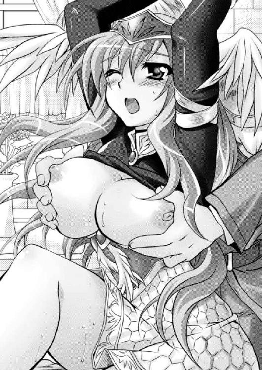
大きく胸を反らしたヴァレリアは、両の乳房を無様なまでに突き出し、目を剥き、涎を噴きながら、まるで電気でも流れたかのようにビクビクビクっと女体を激しく痙攣させた。
（よし、イかせた。これでヴァレリアさまも少しは素直になられるだろう）
エルフィンは横から、初めて見るヴァレリアのイき顔を堪能する。
自分の手並みに満足した少年は、愛しい女性を抱き締めたまま、正気を取り戻すのを待つ。
「はぁ......はぁ......はぁ......」
やがて落ち着き、荒い吐息を整えるヴァレリアに、エルフィンは質問する。
「ヴァレリアさま、いまぼくの愛撫でイったでしょ？」
「イってない。貴様の拙い愛撫でなんか感じるものか、ましてイってやるものか」
紅潮した頬は言うに及ばず、全身から大粒の淫汗が滴り落ちている。まさに絶頂したばかりの女という風情が濃厚なのに、ヴァレリアは意地になって強気に宣言する。
「あぁ、そういう嘘つくんだ。ならば確認してみましょう」
乳房から手を離したエルフィンは両手を下半身に向け、ヴァレリアの両の内腿にかけて、左右にぐいっとばかりに開かせる。
どうやら下半身に力が入らないらしく、あっさりと大股開きになってしまった。
「あ、バカ、やめよっ!?」
動揺するヴァレリアになどお構いなく、エルフィンは容赦なく白い腰覆いをたくし上げ、ミニスカートの中を露出させる。
ほどよい筋肉と脂肪によって作られた左右の太腿はだらしなく開いたまま閉じることが敵わない。
その二本の太腿の中央。男女が見下ろす先には白いショーツが見えた。
股間の大事なところを隠す部分だけが布で、左右は紐のティーバックショーツだ。
「っ！」
その白い生地の中心部分には、大きな丸い沁みができている。
「こんなに大きな沁みを作っておいて、まだ感じてない、イってないって言い張るつもりですか？」
「......」
見下ろすエルフィンの指摘に、ヴァレリアは顔を背けるが、頬といわず首筋や耳まで桃色に染まっている。
その反論の言葉もなく恥辱に震える風情が、エルフィンの嗜虐心に火をつける。
舌舐めずりをした少年は人差し指で、女の恥ずかしい沁みの中心を押してやった。
「あんっ」
両手を頭上に拘束されている大天使はたまらず身をのけぞらせる。
グチュリ......という小さな水音とともに、沁みは一段と大きくなった。
乳房を執拗に揉みしだかれたヴァレリアは、もはや全身の性感帯が目覚めてしまっているのだろう。
濡れた部分には布越しに、紫銀色の陰毛に覆われた女性器が浮き出てしまっている。
「感じているわけでもないのに、こんなにショーツを濡らすなんて、ヴァレリアさまはおしっこでも漏らしちゃったんですかね」
薄い布越しに浮き出た陰唇を指先でなぞられただけで、気高き女将軍は面白いほどに悶える。
「んぐっ、ふむ......」
必死に喘ぎ声を我慢しているさまが、なんとも男の征服欲を刺激する。
ショーツの上から蜜壺のあたりを穿ってやると、ショーツの沁みはとめどなく大きくなっていく。
何気なく上に撫で上げた時、こりっとした突起に指がかかった。
「くすくす......これクリトリスですよね。ショーツの上からわかるほど大きくなっていますよ。ヴァレリアさまの身体って、意外と性感が発達していますよね。もしかしてオナニー大好きですか？」
背後から腕を回している愛撫は、女性がオナニーする時と同じ角度で手が入るために、より感じやすいという話を聞いたことがあった。
「ねぇ、ぼくのことを誘惑して弄んだ後、一人でひそかにオナニー楽しんでいたでしょ」
「くっ」
ヴァレリアは奥歯を食いしばる。いまさら嘘を言わないが、その代わり都合の悪いことは黙殺するつもりらしい。
しかし、その態度からエルフィンはぴんときた。
（絶対、オナニーしていたに違いない）
昔、ヴァレリアに一方的に陵辱されていた時代とは違い、レイテやナターシャなどいろいろな女性と体験したことによって、女にも性欲があるということを知っていた。
調子に乗ったエルフィンは、さらにヴァレリアを辱めるべく、薄布の上から陰核を弄り倒す。
「そっか、一人ですっごい激しいオナニーしてたんですね。たとえばこことか弄るの好きでしょ。だから、こんなに大きくなっちゃったんですよ」
薄布越しに陰核を強く摘むと、ヴァレリアの下半身から太腿にかけてがプルプルプルッと震えたかと思うと、もはやショーツでは吸収しきれないほどの愛液が溢れ出し、白いシーツに恥ずかしいシミを作った。
「はぅっ！！！ あ、そこはっ！ ダメっ！」
珍しくヴァレリアが慌てた声を出した。
それはそこが弱点だ、と自ら告白してしまったようなものだ。エルフィンは嬉々として、そこを集中的に捏ね回してやった。
「ああ、ああ......！！！」
目を剥いたヴァレリアは涎を噴きながら、身体をガクガクと痙攣させた。
「あはっ、またイっちゃったんですか？ ヴァレリアさまって見かけによらず淫乱なんですね」
いつも虐められていたお姉さまを、逆に虐め返す楽しさに目覚めたエルフィンは、さらに調子に乗って右手を腹部から滑らせて、白いショーツの中に入れる。
「あっ」
囚われの美神は身をくねって逃れようとするが、無駄な抵抗である。エルフィンの指先にはしっとり濡れた陰毛の感覚がある。
「ヴァレリアさまって、愛液の多い体質だったんですね。ショーツの中はもうぐっしょりですよ。まるでお漏らししたみたいです」
エルフィンは大きく五指を開いて、陰毛を掻き混ぜる。それから肉裂に人差し指と中指とを入れると、ぐいっと掬い上げた。
そして、ショーツから手を抜くと、ヴァレリアの眼前にかざしてやる。
親指と人差し指の間には、トローッとした透明な橋ができていた。
「ほら、すごい濡れ方です。これでもぼくの愛撫では感じない。イくはずがないって言い張るんですか？」
「くっ......」
屈辱と羞恥で顔を真っ赤にした囚われの天使には、顔を背けて耐えることしかできない。
その風情に悪乗りしたエルフィンは、ヴァレリアの右肩から首を伸ばして、愛液に濡れ光る自らの指を、ペロリと舐めた。
「ああ、これがヴァレリアさまのお味なんだ。すっごい美味しい♪」
苦しょっぱい愛液が、なんとも甘く感じた。
「もう我慢できなくなっちゃった。ヴァレリアさまのおま○こ直接味わわせてもらいます」
宣言とともにエルフィンは、ヴァレリアの前面に回ると、ベッドから身を降ろし、大天使の股の間に跪いた。
「や、やめろ......」
逃げるに逃げられないヴァレリアは、せめて膝を閉じようとするが、むろん、そんなことは許さない。膝を押さえて、無理やり大開脚を続けさせる。
そうしながら、左右の腰骨にかかったショーツの紐の結び目をほどいた。
「はぅ」
ヴァレリアは瞬間、ぶるりっと震えたが、エルフィンの鼻先には、むわっとするほどの熱い牝臭がかかった。
予想はされたことだが、中身はグチョグチョである。
ごくり。
生唾を飲んだエルフィンは、両手を伸ばすと、その驟雨に濡れた密林を掻き分けて、肉裂の左右に親指をかける。そして、ぐいっとばかりに開いた。
肉門の狭間にはトローッとした蜜の糸が引き、そして、切れる。
「へぇ〜......これがヴァレリアさまのおま○こか......」
エルフィンは、恥辱に震える大天使の陰唇の中身をしげしげと眺めた。
淡紅色の肉だ。その表面に白いシロップがたっぷりとかかっている。
一番上には突起した陰核があり、包皮から少しだけ肉真珠を覗かせていた。
ショーツ越しに弄りながらエルフィンは、散々大きいと辱めたが、実際に目の当たりにすると、特に大きいってわけではない。普通の大きさと思われる。
肉壺を確認すると、そこはヒクヒクと卑猥に開閉して、奥からトロトロと白いシロップを溢れさせていた。
大天使と呼ばれるほど気高い顔立ちとは裏腹に、なんとも生々しい牝の生殖器だ。
「貴様というやつは......」
いくら強気に振る舞っても、陰唇を視姦されるのはさすがに恥ずかしいのだろう。悔しそうに唇を噛む。
「それじゃ、ヴァレリアさまのおま○こ、頂きます」
恥辱に震えるお姉さまをからかうように上目づかいでちらりと見たエルフィンは、そのまま股間に顔を埋めた。
女の媚肉の味を、下から上まで、しっかりと舐め味わう。
「ああっ!?」
ビクンッとヴァレリアの細い顎が跳ねる。
「ヴァレリアさまのおま○こ美味しいです」
自涜の経験はあっても、舐められた経験はないのだろう。クンニの快感に動揺しているのが見てとれる。
ジュルジュルジュル......。
エルフィンは意図的に恥ずかしい音を立てて、女汁を啜り飲んだ。
さながら舐め犬と化したように、媚肉の隅々まで舐め回して、ヴァレリアの性感を探る。
「あ、ああ......くっ、ああ......そ、そこは......ひぃ......ああ......」
ヴァレリアは必死に喘ぎ声を上げることを我慢しているようだが、陰唇を執拗に舐めしゃぶられては感じずにいられないのだろう。
気位の高い女が必死に快感と闘っているさまは、なんとも男の征服意欲を掻き立てる。
（絶対にヴァレリアさまに、大きな声で快感の悲鳴を上げさせるんだ）
ペロペロペロペロペロペロペロペロ......。
ペチャペチャペチャペチャペチャ......。
舐めても舐めても、後から後から新しい蜜が溢れてくるから、終わりというものはない。
その長時間にわたるしつこいクンニに、ヴァレリアの理性は少しずつ溶けてきたようだ。
「あ、あん、ああ......しつこい！ いつまで舐めるつもりだ、ああっ！！！」
乳房責めに続いて、クンニでもヴァレリアは耐えようと思ったらしいが、しだいに口角から涎を垂らして悶絶し始めた。
（うわ、ヴァレリアさまの感じている時の顔ってこんななんだ。かわいいなぁ。普段の凛々しさとのギャップもあって、いつまでも見ていたいな。いや、もっともっと乱れて欲しい）
そこでさらなる責めに移ることにした。
ヴァレリアの陰核は仮性包茎である。勃起すると半分だけ顔を出すが、全部は剥けない。そこで左右に人差し指を当ててぐいっと剥き上げる。
「ひぃっ！」
敏感な器官を剥きだしにされてヴァレリアは小さな悲鳴を上げる。
それから唾液をたっぷり乗せた舌を差し伸ばし、その女の弱点を集中的に舐め回す。
「あ、やめ、やめよ。そこをそんなに舐めるなあぁぁぁぁぁぁぁ！！！」
ヴァレリアは動揺もあらわに叫ぶが、そんなことでやめるはずがない。エルフィンの舌の動きはさらに加速した。
「あっ！ あっ！ ああっ！ あああああああ！！！」
その強すぎる刺激にヴァレリアは、目と口を大きく開くと、目からは涙、口唇からは涎を噴いた。
（うわぁ、あのヴァレリアさまが泣きながら悶絶しているよ）
ヴァレリアとは付き合いは古いが、こんなにもだらしない表情を見られるとは、想像したこともなかった。
調子に乗ったエルフィンは、ヴァレリアがイってもイっても、しつこく舐め続ける。
「ひぃああ！！！ もうダメぇぇぇぇぇ!? 許してぇぇぇぇぇぇぇぇぇ！！！」
イきすぎて体力の限界に達したのか、最後にはプシュッと少しお漏らしまでしてしまったようだ。
ようやく満足したエルフィンは、女性器から顔を上げて、口の周りを手の甲で拭いながら、精根尽き果てた風情のヴァレリアの様子を眺める。
「どうやら、完全に腰が抜けたみたいですね」
両手首が縛られ吊るされていなかったら、もはや仰向けに倒れていたことだろう。さすがの大天使もぐったりと脱力していた。
「はぁ......はぁ......はぁ......わたしにこのような痴態をさらさせて満足か......」
もはやイってない。感じてないとはさすがに抗弁できなかったようである。
「何を言っているんですか。ここからが本番でしょ」
ヴァレリアを身も世もなく果てさせたことに満足したエルフィンは、ズボンと下着を下ろす。
中から逸物が唸りを上げる勢いで飛び出した。臍につかんばかりに反り返ったいまの状態なら、鉄でも貫けそうな勢いである。
「貴様、ほ、本気で、そこまでするつもりか......」
いつも玩具のように弄んでいた少年の逸物を前に、ヴァレリアは畏怖されたような表情を浮かべる。
「言ったでしょ。ヴァレリアさまを犯して犯して犯し抜いて、身も心もぼくのものにしてみせます」
再びベッドに上がったエルフィンは胡坐を掻いた。それからヴァレリアの両の太腿の下に腕を回して抱え上げる。
そして、股ぐらの間からそそり立つ逸物の上に、愛液と唾液でドロドロになっている陰唇を添えた。
「身動きの取れない女を犯そうとは、つくづく見下げ果てたやつ」
「ぼくは乱世の覇者たらん道を歩むのです。欲しいものは力ずくでも手に入れます。ヴァレリアさまの身も心も必ずぼくのものにしてみせます」
ヴァレリアとエルフィンの視線が正対し、火花を散らす。
「女の心がこの程度のことで変えられるなどと考えるのは男の傲慢というものだ」
「やってみなくてはわからないでしょ」
エルフィンは手の力を緩めた。
ズルッ！
ヴァレリアの身体が沈む。
「あぐっ」
逸物の先っぽが女体に入った。ヴァレリアは必死に膣穴を締めて、異物の侵入を防ごうとしているようだが、そんなことで止まるものではない。
エルフィンの手をさらに緩めると、女の自重によってさらに沈む。
「あっ！」
ブチッ！
何か柔らかいものを引き裂いた感触があった。
おそらく処女膜を突破したのだろう。ヴァレリアは目を剥いて硬直していた。
さらに腕の力を緩める。
ズブッ、ズブズブズブ......。
女の隧道に従って、男の肉杭は打ち込まれていく。いわゆる対面座位での結合である。
「くっ、ああ......!!」
たまらずヴァレリアはのけぞった。
これ以上の異物の侵入を防ごうと必死に肉穴を締めてくるが、ヴァレリア自らの体重によって、逸物はどんどんと女体に収まっていく。
逸物は深く深く刺さっていき、女の最深部にまで届く。
ヴァレリアはすっかりと男の腰に座り込んでしまった。それでいて、膣穴だけはぎゅっと締めつけてくる。
（すげぇ、ざらざらなのに締まるぅ）
子供の頃から憧れていたお姉さまの肉壺に酔いしれたエルフィンは、たまらずヴァレリアの引き締まった腹部に腕を回し、顔面を乳房の間に押し込んだ。
「あぁ、ぼくやっぱり昔から、ヴァレリアさまとこうやって一つになりたかったんだ」
「こ、この卑怯者め......ッ」
絞り出されるヴァレリアの言葉は相変わらずきついが、どこか慈愛のような響きも感じられた。
「言っていてください。誰がなんと言おうとヴァレリアさまはもうぼくのものです。ぼくのおちんちんの奴隷にしてあげます」
乳房から顔を離したエルフィンはヴァレリアの顔に向かって露悪的に笑い、結合したまま、腰を少し後ろに引き、上体を後ろに反らした。
横から見ると男女はＶ字に見えたことだろう。その状態で男女の結合部を覗き込む。
「ほら見て見て、ヴァレリアさまのおま○この中に、ぼくのおちんちんが完全に入っちゃっている」
「はぁ、はぁぁぁ......。くぅ、はぁ......」
恥辱に震えながらもヴァレリアは、男女の結合部を食い入るように見詰める。やはり気になるのだろう。
そこでエルフィンは、ぬちゃぬちゃ......と男根を軽く出し入れさせてみた。
男根が抜け出るたびに、女壺は裏返って、中身が少し出てしまう。なんとも卑猥な光景だ。
「あ、シーツに赤い血がついている」
やはり好きな女性の初めてになれたというのは嬉しいものである。
心弾ませたエルフィンは、ヴァレリアの腰を掴むと豪快に腰を上下させる。
「あ、ああ......あああ......。エルフィンのくせに、あの泣き虫のくせに、意外に大きい。お、奥まで、奥にまで届くなんて......はぁぐっ」
初めてだというのに、逸物で女の最深部を連続して突かれたヴァレリアは、苦しげに眉根を寄せて身悶える。
（やっぱり、初めてだと痛いんだ。でも、我慢できないよ）
自らの非道さを自覚しながらも、エルフィンは牡としての欲望のままに腰を動かす。
「ああ、ああん、ふん......こんな、ダメこんなに激しくされたら、捲れちゃう。わたしの中が、裏返る、裏返っちゃう......」
当初こそきつそうであったヴァレリアだが、しだいに気持ちよさそうな喘ぎ声を漏らし始めた。
どうやら、男根に身体が馴染んできたようである。
成人女性である以上、身体は男を迎え入れるようにできているということなのかもしれない。
（ヴァレリアさまが、ぼくのおちんちんで感じ始めた）
そう自覚したら最後、男は張りきらざるを得ない。
ヴァレリアの引き締まった腹部を掴んだエルフィンは夢中になって腰を突き上げた。
ベッドのスプリングと、両腕を吊るし上げられている影響だろう。女にしては大柄な身体を軽快に上下させる。
ざらざらでヌレヌレの膣壁の中を、男根が踊り回った。
「あああ、ダメ、わたし、エルフィンに犯されている！ 犯されちゃっている！ エルフィンのおちんちんがわたしの中に入っているのぉ！」
ヴァレリアも高まってきたのだろう、まるで熱にうなされたような台詞を吐いていた。
（くぅ〜、締まる。締まる。締まる。おちんちんくびり殺されそう）
きつい性格のお姉さまは、膣穴の作りもきつかった。
そんな中をズコズコと豪快に出し入れしていたのでは、あっという間に果ててしまいそうだが、エルフィンは必死になって耐えた。
（ヴァレリアさまをぼくのおちんちんで征服する。ぼくのおちんちんの奴隷にするんだ。そのためにも簡単に出すわけにはいかない）
男としての矜持にかけて、必死に我慢したが、睾丸から溢れ出した熱い血潮が、肉棒の先端まで詰まってしまった自覚がある。
「ああ、ダメ。エルフィンのおちんちん、ああ、エルフィンのおちんちんがわたしの中でブルブル震えているのぉ！」
女という生き物は体内に咥え込んだ男根のちょっとした変化がわかってしまうものらしい。
いまにも爆発しようとしていることが、本能的に悟られているようだ。悩乱の声を出して、紫銀色の髪を振り乱す。
（くっ、もっともっと我慢したいんだけど......もう、もうダメだ）
エルフィンは腰の上で踊る女に、赤子のように縋りついた。
「ヴァレリアさま、もう、もう、イきますっ！！！」
姉の胸で泣きじゃくる弟のような風情で、エルフィンは叫んだ。
どびゅどびゅ、どびゅびびゅゅゅゅ！！！
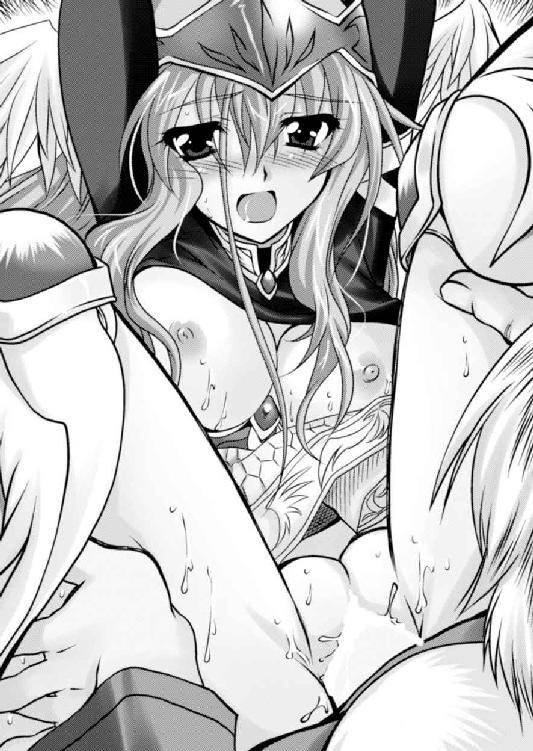
「あ、あああ......びゅうびゅう......びゅうびゅうどくんどくんってぇ......っ！！！」
初めての膣内射精に、ヴァレリアは熱に浮かされたような恍惚の悲鳴を上げる。
さすがに初めてなだけに絶頂とまではいかなかったようだが、その心地よさは存分に体感してくれたようだ。
射精しながら、ヴァレリアの胸にしがみついていたエルフィンが、顔を上げると、頭上から冷たい声が降ってきた。
「これで満足か......」
先ほどまでの痴態とは打って変わって、ヴァレリアの顔には再び嘲笑の色が浮かんでいる。それと見てとったエルフィンは、カチンッときた。
「まだ、まだ終わりじゃありませんよ」
「な、なにっ......!?」
ヴァレリアは本気で動揺した顔をした。どうやら彼女の男性観では、男は射精を一度するとそれで終わりという先入観を持っているらしい。
考えてみると、昔から、エルフィンに悪戯する時は一日一発ずつだった。
「ぼくがその気になれば一日十発だってできるんですからね。今夜は一晩中、繋がっていますから、ぼくのおちんちんの形をしっかりとそのおま○こに刻みつけてください」
「な、なんだと......!?」
ヴァレリアの余裕の表情がひび割れた。
気をよくしたエルフィンは、同じ体勢では飽きられるかと思い体位を変えてみる。
ヴァレリアの背後に回って、再び両手で乳房を取った。背面座位だ。
「ほら、ヴァレリアさまの大好きな乳首をまた責めてあげますよ」
「ひぃ......らめ、らめぇぇぇぇぇ！！！」
初体験中であり、また膣内の性感は開発されているとは言い難いお姉さまだが、乳首は十分に開発されている。
背後から貫かれながら両の乳首を摘み上げられたヴァレリアは涎を噴いて悶絶した。
ぐちゅぐちゅぐちゅ。
膣内に精液が詰まったことで、ピストン運動はさらにスムーズになった。
「ひぃ、ひぃあ、ダメ！ こんなのダメっ！」
男女の結合部からは煮汁が、一突きするごとに溢れ、一抜きごとに掻き出される。
その状態でずっこずっこと豪快に突き回したエルフィンは、再び射精。
ドビュンドビュンドビュン！！！
「ひぃぃぃ......っ！！！」
二度目とは思えぬ濃厚な熱い液体を膣内にさらに注ぎ込まれたヴァレリアは我を忘れて悶絶してしまった。
あの大天使とまで称えられるお姉さまを、我を忘れるほどに悶絶させるのが面白く、エルフィンは、次の体位に移行しようとする。
この時、ヴァレリアを拘束する手綱が煩わしくなった。そこで腰刀を抜いて、大天使の手首を拘束する綱を切る。
そして、そのままヴァレリアをうつ伏せにして、今度は後背位になった。
「あん、ああ、あん......」
大天使と称された気高き女が、尺取り虫のようにお尻を高くかざしながら犯されている。
（あは、ヴァレリアさまの肛門まで丸見えだ。ヒクヒクしている）
この姿勢だと、お尻の穴がよく見える。ヴァレリアほどに美しい女性でも、しっかり肛門があるというのがなんか不思議だ。
「あん、はぁん......はぁん......」
すっかり男に犯されるままになってしまったヴァレリアに声をかける。
「どうですか、ヴァレリアさま気持ちいいですか？」
「うん、気持ちいい......お腹の中で、お腹の中でエルのおちんちんが暴れるの」
シーツに顔を埋めたヴァレリアは、涙ながらに啜り悶えた。
（うわ、あのヴァレリアさまが素直になった。こういう状態を堕ちたと言うのかな。よ〜し、このまま完全に堕とすぞ）
気合いを入れ直したエルフィンは、ヴァレリアの乗馬によって鍛えられたデカ尻を掴むと、ガンガンと腰を振るった。
「あ、ダメ、そんな......お願い、少し休ませてぇぇぇ......」
「ダメです。鉄は熱いうちに打てって言うでしょ。まだまだこれからです」
涙ながらに訴えるお姉さまに対して、エルフィンは情け容赦なく腰を叩き込む。
「ああ、らめぇぇ......！！！」
ヴァレリアはさながら活きのよい牝馬が嘶いて暴れているかのよう。油断しているとはじき飛ばされそうだ。
その引き締まった腰をしっかりと押さえつけて、ずっこずっこと肉棒を出し入れする。
エルフィンの腰とヴァレリアのデカ尻が景気よくぶつかりあって、パンッパンッパンッパンッという拍手音が室内に響き渡る。
同時に、グッチュグチュッグチュッと女の体内では、愛液と精液が存分に混ぜられる。
「あぁ、壊れる！ わたし、壊れちゃうっ！」
「壊れていいですよ。ヴァレリアさまは、ぼくのものなんですから、何があってもぼくが守ってあげます。だから、もうどこにも行ってはダメです」
エルフィンは、ヴァレリアの肉体と精神、いずれをも手に入れようと、がむしゃらに腰を使う。
そうこうしているうちに三度昂りが襲ってきた。
「ヴァレリアさま、そろそろまたイきますよ」
「ひぃ！ ダメ！ これ以上はダメ！ もうわたしの中、エルのものでいっぱいなのよ！これ以上、出されたらパンクしちゃうっ！！！」
「なら、パンクしてください。ぼくのものでお腹をいっぱいにしてください！」
そう叫びながら、逸物が射精運動を始めた。
「いぁぁああああああああぁぁぁぁぁ！！！」
あのヴァレリアがなんとも女らしい悲鳴を上げた。
その体内に向かって、三度容赦なく大量の欲望を吐き出す。
ドビュ！ ドビュッ！ ドビュュュュュュュュッッッ！！！
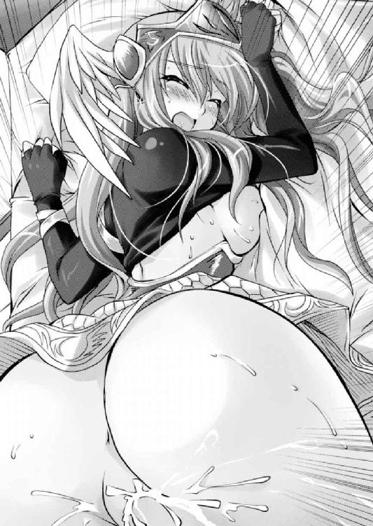
三度目とは思えない大量の濃い液が、女の体内に新たに満たされた。
「あああああああああぁぁぁぁぁぁっ！！！」
抜かず三発目にして、ヴァレリアはついに膣内射精での女の歓びを知ったようだ。
（やった。ヴァレリアさまをぼくのおちんちんでイかせたぞ）
男としての充実感を味わったエルフィンだが、まだ治まらない。そのまま四回戦目へと突入した。
※
結局、エルフィンはその宣言通り、一晩かけて徹底的にヴァレリアを犯し抜く。
完全な牝として扱われたヴァレリアは、最後には啜り泣きながらエルフィンにしがみついていた。
そして、二人は繋がったまま気絶したように眠り、朝を迎えたのだ。
「あ、ヴァレリアさま、おはようございます」
目を覚ますとまずヴァレリアの顔が視界に飛び込んできた。その表情は戦を司る大天使というよりも、愛と慈愛に満ちた大天使といった雰囲気がした。
下半身ではいまだに繋がっていることがわかる。
「まったく、昨日はアホのように犯してくれた。おかげで腰が痛い」
「すいません......。でも、やっと確信が持てました。ヴァレリアさま、ぼくのことまだ好きでしょ」
エルフィンのさりげない指摘にヴァレリアは目を剥く。
「い、いきなり、なんてことを。そういうところがかわいげがないというのだ。まったく、確かにわたしは、おまえを生涯の伴侶と決めた女だぞ。おまえに会えて嬉しくないはずがないではないか。......おまえにめちゃくちゃにされるのも悪い気分ではなかった」
「それだけで十分です」
名残惜しいが男女の結合を解いたエルフィンは、ベッドから降りて身支度を整える。
「それじゃ、また来ます」
そのまま部屋を出ていこうとするエルフィンを、ヴァレリアは慌てて呼び止める。
「おい。これを忘れているぞ」
ヴァレリアは両手を揃えて差し出す。
「あぁ、それはもういいです。ヴァレリアさまはもうぼくの愛人になったんですから。誰にもとやかく言わせません」
その決然とした宣言に、ヴァレリアは眩しそうに目を細める。
「おまえがわたしを抱きたいのなら、まぁ、好きなだけ抱くといい。しかし」
「セルベリアを滅ぼす手伝いはできない」
エルフィンの指摘に、ヴァレリアは真面目な顔で頷いた。
「ああ、これはわたしの最後の矜持だ。セルベリアのために死ねと言ってきた口で、セルベリアを滅ぼせとは言えぬ。死んでいった兵士たちに申し訳が立たぬ」
「わかりました」
確かに捕虜となったからといって、節操を変える女には魅力はない。
ヴァレリアがあっさりと変節していたら、ここまで執着することなく、あるいは「この程度の女だったのか」と興醒めしたかもしれない。
（やっぱり、ヴァレリアさまは素敵な女性だ）
エルフィンは、入った時とは逆に、清々しい気持ちで塔を出た。
（ついにここまで来たな......）
夏の熱い夜。エルフィンは、臨時に設けられた王座に座って感慨に耽っていた。
ヴァレリアに語ったように、セルベリア王国にとどめを刺す出兵は秋、稲刈りの終わった後という予定だったのだが、初夏には出兵した。
ヴァレリアが寝返ったと断じたジューザスは、その親友であるカーラ将軍をも内通しているとして、投獄したという情報を得たからだ。
もっとも、エルフィンがカーラに調略の手を伸ばしていたのは事実である。そして、そのことを隠そうともしなかった。
つまり、ジューザスはエルフィンの仕掛けた謀略に踊らされたといえる。
このままカーラを見捨てるのはさすがに寝覚めが悪いので、ただちにレイテを派遣して王都の解放軍と一緒に、カーラの救出を命じるとともに、自らフルセン衆を率いて出陣した。
その情報に、フルセン地方の豪族は残らずエルフィンのもとに駆けつけてきたのはもちろん、サイアリーズ地方の農民たちも誼を通じ、さらには各地の村長や庄屋クラスの人々が次々に馳せ参じたのである。まさに草の根レベルから雪崩現象が起きたのだ。
その武威に恐れをなした地方貴族たちもこぞって寝返ってきた。
もちろん、これは事前から行っていたエルフィンの仕込みの賜物である。
そのまま楽勝かと思われたのだが、最後の最後に思わぬしっぺ返しを食らった。
ジューザスが王都ヒューリアスに火を放って、ファルビン将軍の居城に逃げ込んだのだ。
先行していたレイテから報告を受けたエルフィンは、軍机を蹴り飛ばして激怒したものである。
王都ヒューリアスは、ジューザスが即位してからというもの、国家の財政を傾けるほどの労力を費やして作った豪壮華麗な都である。
器が大きいだけで空虚な都市と思われたが、とにかく凄まじい整備がなされていたことは事実なのだ。
エルフィンが新たな王国を築く時、そこを王都とするかまでは決めていなかったが、有効利用しようと考えていた。
それが灰燼に帰したというのだから、痛恨事である。
憤懣やるかたないエルフィンはただちに、ジューザスの匿われるファルビンの居城を囲んだ。
この時、エルフィンの麾下は五万人。ファルビンの手勢は五百人である。
城は簡単に落ちると思われたのだが、一週間経っても落ちなかった。どうやら、文官出身だという老人の力量を過小評価していたらしい。それに一度緩んでしまった士気を再び引き締めるのは容易ではなかったのだ。
鎧袖一触だと思っていたのに、長期戦の様相を呈しだしたことにエルフィンは焦った。大軍なだけに長引けば兵站に不安が出るし、新参者たちに動揺が広がる。
それを懸念したエルフィンは和睦を提案。ジューザスとファルビンは国外退去という形で手を打った。
かくして、西方半島にてセルベリア王国は潰え、フルセン王国が興ったのである。
フルセン領に凱旋したエルフィンは、臨時に設けられた王座につき、引きも切らさずに謁見を望む人々との対面を果たし、そして、現在、本日、最後の人との会談をすべく待っていた。人間、どうしても嫌なことは後回しになる。
雛壇の上に設けられた椅子に一人座っていると、やがて問題の人物が姿を現した。
「どうだ。王座の座り心地は？」
雛壇の下に正装をして立つヴァレリアを見た時、一瞬、夢を見ているような感覚に陥ったエルフィンは、軽く頭を振って口を開いた。
「身の引き締まる思いですよ」
正式な即位式も、戴冠式もしてなくとも、エルフィンは実質この半島の王だ。王が座る椅子を王座というのなら、エルフィンが現在座る椅子もまた王座ということになるのだろう。
そんなエルフィンの疲れきった風情に、ヴァレリアは眉を顰める。
「どうした。不満そうだな」
「不満？」
一瞬、虚を突かれたような顔をしたエルフィンはむきになって否定した。
「ジューザス王を逃がしたことをぼくが不満に思っているのだとしたら見当違いですよ。ぼくはもともと主殺しの汚名を着るつもりはなかった。どこか適当なところで野垂れ死にしてもらいます」
負け惜しみに聞こえたかどうかわからないが、一面の真実である。
「では、王都が焼き払われたことが不満なのか？」
「いえ、確かに不満がないと言えばウソになりますが、ぼくはもともとあのような地に首都を設けるつもりはありませんでしたから、致命的ではありません」
エルフィンの返答が意外だったのだろう。ヴァレリアは興味深そうに目を細める。
「ほう。ではどこに王都を定めるつもりだったのだ。このアヴァロンか」
「いえ、さすがにこのアヴァロンは西方半島を治めるには西に寄りすぎている。それよりもフレイア王国との国境付近に適当な土地を物色しますよ」
その返答に、ヴァレリアの目が見開かれる。
「フレイアの国境。ではおまえは、フレイアとドモスの争いに介入し、漁夫の利を得ようと考えているのか？」
自分をいつも子供扱いしているお姉さまの顔色を変えさせたのが面白かったエルフィンは思いっきり露悪的に笑った。
「いけませんか？ この乱世にあって、この小さな半島に閉じこもっていたのでは、いずれ雪隠詰めです」
それに領民がジューザス王を追い出し、エルフィンを担いだ最大の理由は、ジューザスの治世では飯が食えないからだ。
エルフィンは領民を飢えさせるわけにはいかない。
しかし、国王が変わったからといって、収穫高が劇的に増えるものではない。王座に就いたものの、残っているのは先王によって搾取されて、疲れきった民と、何も残っていない荒廃した大地だ。
食いぶちを手っ取り早く稼ぐ方法。それは他国から略奪してくるしかない。
「相手がフレイアだろうと、ドモスだろうと関係ありません。ぼくの命が尽きるまで戦い続けます」
エルフィンは迷わなかった。隣国フレイアには、すでにドモス王国の魔の手が伸びている。
否応なく乱世の荒波は襲ってくるのだ。半島の中でだけ平和を目指すというのは、緩慢な自殺を意味する。
「まさに修羅の道だな」
呆れたと言いたげにヴァレリアは、首を横に振るう。
「そうですね。でも、ぼくはもうこの道を歩むしかない」
エルフィンは茫洋とした瞳で遠くを見ながら応じた。
これから歩む道の苦難を思えば、国王に成り上がったことを素直に喜ぶことはとてもできなかった。
双肩にずっしりと重い責任と義務。そして、罪悪感で潰れそうになる。しかし、それを振り払うように口を開いた。
「ああ、ヴァレリアさま。もうあなたを縛る桎梏はなくなりました。どこにでも好きなところに行っていいですよ。いままで不自由な生活を強いて申し訳ありませんでした」
伝えるべきことを伝えたエルフィンはそっけなく目を閉じる。
もはや、セルベリア王国は滅びた。国外追放になったジューザスに、ヴァレリアを害する力はないだろう。
いままでヴァレリアを監禁していたのは、他人がどう思おうとヴァレリアを守るためだったのだ。
しかし、欲望に任せて監禁中の彼女を散々に犯したことは否定のしようのない事実である。プライドの高い彼女が、内心で腸が煮えくり返るほどの憎悪と嚇怒、そして、軽蔑が渦巻いているのは想像に難くない。
再び目を開いた時ヴァレリアの姿はなくなっている。そして、もう二度と会うことはない。
自分は一つ間違えると奈落の底へと転落する綱渡り人生を歩み続け、彼女は自領に引き籠もって、慎ましやかな余生を送ることだろう。
想いの人がいなくなっていることを確認するのが怖くて、目を開けない。
「......」
ふっと温かい何かに包まれて、目を開ける。
いつの間にか雛壇を登ったヴァレリアが目の前に立っていた。そして、両手でエルフィンの頭部を抱き締める。少年王の顔面が女騎士の胸に沈む。
「あ、あの......ヴァレリアさま」
何が起こったかわからず動転するエルフィンを優しく包み込みながら、ヴァレリアは優しく囁いた。
「おまえは昔っから、なんでも悪い方向に考えるくせがある。それでいて家臣たちからの希望やら、わたしの我儘にどこまでも付き合う。本当にかわいげがないガキだった。おまえは一人でそこにいるわけではない。おまえの罪も罰も、みなが一緒に背負ってくれるということを忘れぬことだ」
「ヴァ、ヴァレリアさま......」
記憶にある限り、ヴァレリアからこんな優しい言葉をかけてもらったことはない。どう対処していいかわからず、戸惑い。そして、縋るような表情で、その玲瓏とした顔を拝み見て真意を探る。
「人の好意を素直に受けられないというのも、困った性格だな。まぁ、猜疑心が強いというのも、覇者の資質の一つなのだろうが......」
苦笑を浮かべたヴァレリアは、エルフィンから手を離すと、シャンっと涼やかな音を立てて鞘走らせた。
そして、その場に跪き佩刀を捧げた。
「わたしは一度、この剣をジューザス陛下に捧げている。しかし、セルベリア王国が滅んだいま、この剣の主もまた消えた。よって、新たな主としてエルフィンに捧げよう」
「え......」
呆然とするエルフィンに、ヴァレリアは跪いたまま顔を上げる。
「わたしの剣が、ジューザス陛下に捧げられたのは、生まれゆえだ。そこにわたしの意思はない。しかし、こたびおまえに捧げるのはわたしの意思だ。三度目はない。受け取ってもらえないだろうか」
剣の誓い。忠義を形として表す古風な儀式だ。
「あ、はい。喜んで」
感動したエルフィンは捧げられた剣を押し抱き、接吻をしてから返した。
剣を鞘に収めたヴァレリアは、立ち上がり莞爾と笑う。
「いささか遅くなったが、これからの活躍で取り戻させてもらおう」
久しく見ることのできなかった晴れやかな笑顔である。嬉しくなったエルフィンは恐る恐る言葉を繋ぐ。
「あの、そ、それじゃ、ヴァレリアさまはこれからぼくの傍にずっといてくれるのですね」
「ああ、おまえが地獄へ行くと言うのなら、わたしもそのお供をさせてもらおう。わたしはおまえの忠実な臣下だ。下命とあらばなんでもしてやる。だから、わたしに対する敬称ももうやめろ」
永遠に失われると思っていたものが、手に入ったのだ。エルフィンの胸のうちに熱い感動が込み上げてくる。
「わ、わかりました。では、ヴァレリア。そ、その......国王として最初に命令をしていいですか？」
「なんなりと！」
長年弟分としてきた少年に対して大天使は、完璧な臣下の礼を取った。
これはこれで少し寂しい気がしながらも、それに勝る喜びを胸にエルフィンは命じる。
「その......キスして欲しい」
新たな主君の命令を聞いて、ヴァレリアは硬直した。それから心底から呆れたと言いたげに首を横に振るう。
「ったく、何が国王としての最初の命令だ」
「なんでも命令には従うんでしょ？」
エルフィンが食い下がると、表情を消したヴァレリアは黙然と見下ろす。
「......」
ヴァレリアの様子に若干怯えながらもエルフィンも負けずに見上げる。二人の視線が複雑に絡みあう。
やがて根負けしたヴァレリアは大きな溜息をつきながら、豊かな紫銀色の髪を掻き上げる。
「わかった。ご下命ならば仕方がないな」
王座に腰かけるエルフィンに覆いかぶさるようにして、ヴァレリアが顔を近づけてきた。
秀麗な顔立ちに、薄い紅の引かれた唇が近づいてくる。
チュッ！
軽く唇が触れてから離れた。
「これでいいのか？」
「もっと......」
一瞬だけの接吻では物足りない。主君の懇願に新任者の家臣は苦笑を浮かべながらも、再び唇を重ねてくれた。
ん、むむ、うむむむ......。
今度はすぐに離さない。エルフィンは愛しい女性の背に両手を回し、ヴァレリアは両手を椅子の肘かけに乗せて身体を支えながら、二人は夢中になって唇を押しつけあい、擦りあった。
（あぁ、ヴァレリアさまの唇だ......）
無理やり犯していた時には得られなかった、なんともいえない幸福感が唇から全身に沁みる。
監禁中のヴァレリアを、幾度となく腰が抜けるほどに徹底的に犯し抜いてきたエルフィンだが、初エッチの時に無理やりキスをして、舌を噛まれて以来接吻とは無縁であり、この唇に飢えていたのだ。
陶然としたエルフィンが舌を差し出すと、ヴァレリアは優しく舌を舐めしゃぶってくれた。それから口の中まで舐め回される。
「うむ、ピチュ、ピチャ......ぴちゃッ......♪」
二人は時が経つのも忘れて、夢中になって唇を吸い、舌を絡ませあう。
そんな時である。聞こえよがしの会話が聞こえてきた。
「ねぇ、ナターシャ。ああいう光景を見ていると、ちょっとムカつかない」
「......は、はい。なんか胸が切なくなります......」
驚いて接吻を終えた二人が視線を向けると、いつの間にかレイテとナターシャが傍らに立っていた。
ヴァレリアと目が合ったレイテは思いっきり気取った挨拶をする。
「お久しぶりね、大天使さま。いや、まともに顔を合わせるのはこれが初めてだから、初めましてと言うべきかしら？」
ナターシャは、ヴァレリアの身の回りの世話をしていたのだからすっかり顔馴染みであろうが、レイテとヴァレリアの対面は、例のヴァレリアとエルフィンの一騎打ちにレイテが割り込んで、ヴァレリアを捕虜にして以来だろう。
「......貴様は紅蜘蛛か」
レイテの悪意に反応したヴァレリアもまた剣呑に視線を送り、二人は視線に険悪な火花を散らす。
あのような出会いをしている以上、お互い好意を持つには程遠い関係であるらしい。
「おまえにはこいつが、ずいぶんと世話になったようだな」
硬い表情のヴァレリアが皮肉を飛ばすと、レイテは柔和に受け流す。
「いえいえ、自分の男にために頑張るのは女として当然のことよ。男って結局、女しだいなのよね。あげまんと一緒にいると国王にまで上り詰める。さげまんと一緒にいたんじゃいつまでも燻り続けていたんじゃない♪」
言外に、自分はあげまんで、ヴァレリアはさげまんだ、と言いたいらしい。
（うわっ!? レイテ姐さんとヴァレリアさまって相性悪そうだ）
エルフィンは頭を抱えたくなった。
姐御肌のレイテは基本的に包容力があって、エルフィンが他の女と遊んでも何も言わない。いや、面白がって自分も参加してくるような性格である。
しかし、ヴァレリアにだけは例外であるらしい。
それは他の女と違って、ヴァレリアがエルフィンの特別であることを知っているからであろう。
生まれも育ちも、エルフィンを巡る立ち位置も対象的な二人であることは想像に難くない。
ヴァレリアは、王族の血も流れた名門大貴族の姫君であり、エルフィンにとって姉のような存在であり、幼馴染みといっていい特別な関係だ。
一方のヴァレリアは、元は怪盗。泥棒なんてやっていたくらいだから、社会の最下層の出身であろう。そこから村長の人妻を経て、反乱軍の頭となり、身体を張ってエルフィンを助け出した。その後、自らの肉体を使ってエルフィンを奮い立たせて、国王に叛旗を翻させたのである。その後の戦役の中にあっても、陰に日向に汗を流してきた。知りあってからの時間は短いが、濃密な誰にも切れない絆ができたという自負があるはずだ。
それなのにすべてが決したところに出てきて、古馴染みだからという理由だけで、美味しいところを全部持っていかれては敵わないという意識があるだろう。
「この子はね。わたしのおっぱいが国王にしたのよ。ねぇ♪」
ヴァレリアに向かって挑発的な視線を向けたレイテは、エルフィンの右手を取ると自らの乳房を触れさせる。エルフィンは反射的に握り締めてしまった。
「あん♪」
レイテはわざとらしく気持ちよさそうな喘ぎ声を上げる。
ピクッ！
ヴァレリアのこめかみに血管が浮き出す光景が見えた気がする。
そして、爆発しようとする怒りを必死に抑えながら言葉を絞り出す。
「なるほど。どうやら噂は本当だったらしいな」
「噂って......？」
レイテを振り払うわけにはいかず、だからといってヴァレリアの機嫌を損ねることも怖いエルフィンは、怯えながらも質問する。
「おまえが謀反を起こしたあたりから『未亡人殺し』とか『後家刈り』とかいう風聞が流れだした。なんでもレジスタンスの女どもにたぶらかされてやりまくっているという話だったな」
「いや、それはその......」
必死に言い訳を考えるエルフィンの横で、両手を握り締めたナターシャが必死の形相で宣言した。
「そんなことありません。わたくしはエルフィンさまの情婦ですけど未婚ですっ！」
「......」
場の空気を読まないナターシャの発言に、エルフィンは頭を抱えたくなった。
ややあってヴァレリアは冷たい眼差しでエルフィンを見下ろす。
「そうか、そうか。わたしは生涯、男はおまえ一人と決めて。死ぬまで貞節を守る覚悟を決めたというのに、おまえときたら好き放題にやりまくっていたわけか」
「うっ......」
せっかくヴァレリアの誠心を得ることができたと思ったのに、再び軽蔑されてしまった。
ぐうの音も出ないエルフィンだが、愛人がいるという情報を知ってヴァレリアが嫉妬していた、という事実が少し嬉しい。
今日まで頑なだった理由の一端がわかった気がするのだ。
エルフィンが言い訳を口にするより先に、レイテが口を挟む。
「あら、男のやんちゃを笑って許せないだなんて、器の小さい女よね。英雄色を好むって言葉を知らないのかしら？」
「そんなものは男の戯言だ。英雄ではなくても色を好む男は五万といるぞ」
ヴァレリアの返答に、レイテは軽く肩をすくめる。
「そう？ なら、あんたは単なる騎士でいればいいわ。この子のやんちゃ坊主の面倒はこれまで通りあたしたちが見てあげるから。ねぇ、ナターシャ♪」
「はい。わたくし、ヴァレリアさんの分まで誠心誠意、エルフィンさまにご奉仕する覚悟です」
レイテはエルフィンの衣装を脱がしにかかった。それを見たナターシャまで協力する。
「あ、ちょ、ちょっと待って......いまは、少しまずいって」
ヴァレリアの視線を気にしたエルフィンは抵抗しようとしたのだが、二人掛かりでたちまちのうちに素っ裸にされてしまう。
「嫉妬深い女なんて面倒臭いだけよ。女はその女だけじゃないわ。あたしたちがいくらでも相手をしてあげるわよ。ナターシャなんて、あんたのためにパンツを穿くのをやめたのよ」
「なっ！ パンツを穿かない!?」
ヴァレリアの驚いた視線を受けたナターシャは、身の置き所がないといった風情で、両手でスカートの股間あたりを押さえた。
「はぅ......はい。エルフィンさまがわたくしにはパンツを穿かないようにお命じになられましたから......」
頬を染めて恥ずかしがりながらも、ナターシャはなぜかどこか誇らしげである。
「おまえ、側女にそんなことをさせているのか？」
ヴァレリアの視線に軽蔑の色が浮かんでいる。
「え、あ、それは、その......ナターシャが勝手に......でも、はい」
見るからに清純可憐な美少女を情婦にして、普段からパンツの着用禁止。なんか自分がすごい変態なような気がしてくる。
「うふふ、これでわかった。もうこの坊やは、あなたの知っていた昔のエルフィンとは同じじゃないのよ」
陽気に笑ったレイテは、エルフィンに唇を重ねてきた。
そして、レイテが目で合図をして促したからだろう。ナターシャまでエルフィンに唇を重ねてきた。
「ん、うむ......」
ヴァレリアの視線が痛いが、どうやら二人ともヴァレリアの存在に嫉妬して、わざと見せつけているわけで、その心理が読めるエルフィンとしては静止させることもできずに流される。
ヴァレリアの唾液の塗られたエルフィンの口元に、レイテとナターシャの唾液が塗りたくられる。
「はいはい。きみはちょっと、ここを掴んでいてね」
やがてキスを終えたレイテはエルフィンの両手を取ると、頭上に上げさせて、王座の背もたれの上部を握らされた。
そして、丸さらしになっている脇の下に顔を突っ込むと、ペロペロと舐める。
「あう......っ！」
くすぐったくて身悶えるエルフィンにレイテは甘く囁く。
「ほら、あなたはいつものように楽にしなさい。そんな気位が高いだけのマグロ女では味わえない天国に連れていってあげるわ」
「エルフィンさまに喜んで頂けるなら、わたくしなんでもします」
レイテとナターシャの濡れた舌先が、エルフィンの全身を這い回る。
「あ、ちょっと......あっ......」
傍らで見下ろすヴァレリアの視線が痛い。しかし、情婦たちの気持ちを無碍にすることもできない。
エルフィンの全身をまるでナメクジが這ったかのように女たちの唾液の道筋ができる。
レイテの舌が、エルフィンの左の乳首の周りを這い回り、もう一方の乳首には、ナターシャが吸いついた。
「ああ、ああ......」
男なのに乳首を吸われて感じてしまうのは恥ずかしい。まして、無様に悶えるなど屈辱以外の何物でもない。そのような痴態を、ヴァレリアの前でさらすのは絶対に避けたかった。しかし、レイテも、ナターシャもすでにエルフィンが、こうやると喜ぶと知ってしまっているから、口に含んだ乳首を、舌先でレロレロと舐め回す。
さらには王座に腰かけるエルフィンの左右の脚が持ち上げられて、肘かけに左右の脚を乗せられた。
「うふふ、すごい立派」
臍に届きそうなほどに見事に反り返った逸物を前に、レイテとナターシャは満足そうに頷きあう。
好きな女性の前でさらすにはあまりにも無様な痴態といえるだろう。
女たちの舌は、内腿にまで這い回った後、ついには肛門まで舐めてきた。
「あうっ......」
たまらずエルフィンは羞恥の悲鳴を上げた。
（は、恥ずかしい。恥ずかしいけど気持ちいい。こんなお尻の穴舐められて喜んでいる姿をヴァレリアさまにまで見られてしまうなんて......）
その姿には、主家を簒奪した梟雄の面影はどこにもない。
しかし、ヴァレリアに見られていることでいつも以上の快感がもたらされるようである。
レイテとナターシャの紡ぎ出す快感に必死に耐え続けていると、ヴァレリアの声が聞こえてきた。
「エルフィン、一つ質問がある」
「は、はい......」
快感に翻弄されて息も絶え絶えになりながら、エルフィンは応じた。
「おまえは、わたしにもそのように奉仕してもらいたいのか？」
「え......」
本心を言えば、もろちん、ヴァレリアにも奉仕してもらいたい。しかし、ここでそんなことを口走ったら、機嫌を損ねたヴァレリアは自分を見限ってしまうかもしれない。
どのような答えを口にするのがベストか、エルフィンは悩んだ。やがて恐る恐る本心を口にする。
「は、はい......」
「まったく仕方のないやつ」
溜息をついたヴァレリアは、その場で胸鎧を外した。
「っ!?」
何が始まったのかと驚く三人の男女の前で、ヴァレリアは黒いインナーもまくり上げ、白くて大きな丸乳をさらす。
そして、自らの媚乳を両手に持ち上げてみせた。
「あ、あの......ヴァレリアさま？」
幼馴染みのお姉さまが、いったい何を始めようとしているのか、エルフィンはおっかなびっくり窺う。
「おまえのことは、わたしが誰よりもよく知っているんだ。おまえの悦ばせ方もな」
エルフィンの肛門を舐めほじる女たちに、優越感に満ちた視線を投げ下ろしたヴァレリアは、その自慢の乳房を持って、エルフィンの顔面へと押しつけてきた。
「はむ♪」
差し出された乳房に、エルフィンは反射的に赤ん坊のようにかぶりつく。
「おまえは昔っから、わたしのおっぱいが好きだったな。いつもチラチラとこの胸ばかり見ていた」
「え、いや......はい」
稽古の時などインナー越しに浮き出た乳首に誘惑されていたことを、いまさら隠すまでもない。
「ならばわたしは、このおっぱいを使って奉仕してやろう。ほら、好きなだけ楽しむといい」
ヴァレリアは、自らの弾力ある乳房を使って、パフパフとエルフィンの顔を挟み揉んでみせた。
そのさまに逸物があからさまに反応。ビクビクと痙攣しながらいきり立ち、先走りの液をとろとろと垂れ流した。
それと気づいたナターシャは、焦ったようだ。
「わ、わたしのおっぱいも食べてください」
普段は大人しいナターシャが、自ら積極的にブラウスの胸元を開いて、乳房を露出させるや、ヴァレリアに負けじと、蒸し立ての肉マンのような乳房をエルフィンの顔面へと押しつけてきたのだ。
「うっぷ......」
エルフィンは、ヴァレリアとナターシャの乳房に挟まれて窒息しそうになる。
「あらあら、真面目な娘ってほんと、堕ちだすとキリがないわね」
若い娘たちの争いに呆れた声をかけたレイテだが、彼女もまたエロ乳を露出させた。そして、エルフィンの顔に押しつけてきたのだ。
「っ！！！」
顔面が柔らかい乳房でもみくちゃにされる。その極楽にエルフィンは惚ける。
「あらあら幸せそうな顔しちゃって、でも、おっぱいで責めるか。それはちょっと思いつかなかったわ」
レイテは、ヴァレリアに向かってグッジョブと言いたげにウインクしてみせた。
それからさすがに女三人の乳房を一人の少年の顔に押しつけるのは無理があるということで、二人と張りあうようなことはせずに、自らの乳房をエルフィンの腹部から胸部へと押しつけてきた。
それを見たヴァレリアとナターシャもまた、単にエルフィンの顔を挟むだけではなく、全身を乳房でマッサージしてきた。
「あうぅぅぅぅっ！！！」
乳房の柔らかさを顔面で感じるのが至福なのは論を待たないが、全身を撫で回されるのもまた絶妙な快感である。
同じ乳房でも、三者三様で、形も違えば、弾力も違う。大きさでいえば、レイテ、ヴァレリア、ナターシャと年齢順だ。弾力という意味では、ヴァレリア。柔らかさという意味ではレイテ。肌のきめ細かさという意味ではナターシャが勝る。
レイテは釣鐘型、ヴァレリアは前方飛び出し型、ナターシャは半球形型と、形もさまざまだ。
いずれもタイプは違うが最高級の美乳たちといえるだろう。そんなもので全身マッサージをされたのでは、男は悶え狂わずにはいられない。
「はぁ......はぁ......はぅ......うん......」
乳房を男の肌に押しつけるのは女たちも気持ちいいのだろう。それぞれの乳首が硬く勃起し、淫汗を流しながら、熱い呼吸している。
しかし、彼女たちは暗黙の了解として、いずれも逸物にだけは触れようとしなかった。
「あ、あぁ......も、もう......もう......」
柔らか媚乳で全身を撫で回されるのは死ぬほど気持ちいいが、男を感じさせる責めと、イかせる責めはまた別のものである。この責めではなかなか射精にまでは至らない。
牛のように悶え狂う少年王に、レイテが笑いかける。
「あらあら、もう出したいんだ♪」
「はぁ、はぁ......はい。お願いします......」
息も絶え絶えなエルフィンは男としての矜持も、恥も、外聞も投げ捨てて懇願した。
それを受けて三人の牝獣たちは、どうやって牡にとどめを刺すかと相談するかのように互いの顔を窺う。
「まぁ、ここまできたら、最後までおっぱい使うのが筋ってもんじゃない」
レイテの音頭によって三者の乳房が、エルフィンのいきり立つ逸物に近づいてきた。
ごくり......。
これから行われることが予測できたエルフィンは、待ちきれないとばかりに生唾を飲む。
そして、右にレイテ、中央にヴァレリア、左にナターシャと並んだ合計六つの乳房によって逸物は包まれた。
「ああ......」
そのあまりの淫姿を見下ろして、思わずエルフィンは感嘆の呻きを漏らしてしまう。
レイテ、ヴァレリア、ナターシャ。年齢も育ちもまるで違う三人は、体型が違うように、乳房の大きさも違えば形も違ったが、いずれも甲乙などつけられない男を惑わす魔性の乳肉という点では同じだ。
「やれやれ、なんという締まりのない顔をしているのだ。これから覇者になろうという男の面か」
ふとエルフィンの顔を見上げたヴァレリアが、見てられないといった声を出す。
「何こんな時に常識人ぶっているのさ。遊ぶ時には遊ぶ、戦争する時は戦争する。エッチをする時には思いっきりスケベになる。それでいいのさ」
ヴァレリアを窘めたレイテが、自らの乳首を揃えて、亀頭部の裏側を擦ってきた。
「あうっ」
男の弱点を責められたエルフィンは歓喜の悲鳴を上げた。
それを見た他の女たちも負けてなるか、とばかりに自らの乳首を亀頭部の裏側に押しつけてきた。
普通のパイズリのように、暖かい乳肉に押し包まれるのとは違い、肉冠の周りを、コリコリの乳首が這い回る。
それは微妙にくすぐったいようでいて、身悶えるほどに気持ちいい。
「はぅ、乳首が......乳首が気持ちいいですぅ」
熱心に奉仕していたナターシャまでも、顔を真っ赤にして泣きそうになりながら悶えた。
コリコリにしこり立った乳首を使っての責めは、どうやら女たちにとっても諸刃の剣だったようである。
ヴァレリアも、レイテも顔を真っ赤に火照らせながら、乳首を操っていた。その表情を見ているだけでも男はたまらない気持ちになる。
「うおぉぉぉぉ！！！」
乳首たちによる男の急所一点責めが、単純に気持ちいいということもあるが、六つの乳房が並び、乳首が揃う絵的な美しさと淫らさに少年は限界を迎えた。
「あああ！！！」
まさに絶頂する乙女のような悲鳴を上げたエルフィンは、逸物を爆ぜさせた。
ドビュ！ ドビュドビュドビュ！！！
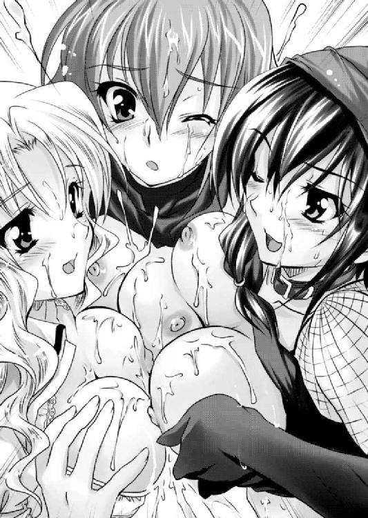
女たちの乳首で雁首を押さえられた毒蛇は、のたうちながら毒液を吐く。
勢いよく奔騰する白濁液が、三人の美貌に平等に浴びせられた。
「きゃっ！」
射精がくることを十分に予測していただろうに、女たちは驚愕の悲鳴を上げた。それだけ予想外の量と勢いがあったということかもしれない。
ドクドクドクドク......。
ナターシャの顔にも、レイテの顔にも、ヴァレリアの顔にも平等に白濁液はかかり、その首筋から滴り落ち、鎖骨の窪みにまで溜まってから溢れて、胸元にまで滴った。
「なんという液量を出すんだおまえは。わたしたちはおまえのトイレではないのだぞ」
呆れたといった顔でヴァレリアは、自らの頬にかかった白濁粘液を指で掬い上げる。
「あはっ、確かにすごい量ね。そういえば最近、戦争で忙しくてご無沙汰だったからかな」
レイテは白濁液に染まった同僚たちの顔を見て笑う。
「あう、こんなにいっぱい浴びせてもらえるなんて、わたくし幸せですぅ」
ナターシャは最上級の美酒でも浴びせられたかのように、恍惚とした溜息をつく。
「はぁ、はぁ......はぁ......」
とめどなく溢れていた精液もやがては止まる。
「はぅ」
満足の溜息とともに腰が抜けた。すべてを出しきった感のある逸物は、へなへなと萎み、エルフィンはずるずるとだらしなく、王座に沈む。
（ヴァレリアさまも、レイテ姐さんも、ナターシャも、ぼくの女だ）
顔から胸元にかけて精液で白く染めた彼女たちの姿は、男にそういう勘違いをさせてくれるには、十分すぎる光景だ。
「あはっ♪ すごいこんなの浴びせられたら、もうたまらないわね」
立ち上がったレイテが黒いパンツを脱ぐ。
「あの......わたくしも......欲しいです」
スカートの上から股間を押さえたナターシャもおずおずと訴える。
彼女の場合、ショーツを脱いで準備をする必要はない。しかし、その様子から見て、内腿はかなり酷いことになっていそうである。
女たちが自分の逸物を欲しているというのは、男として嬉しいものだ。エルフィンは最後に意思表示をしない女を見た。
また、レイテ、ナターシャも意味ありげに、自分を見ていると気づいたヴァレリアは、困ったように頬を掻く。
「わ、わたしは......わたしもまぁ、なんだ。普通の女だからな......。人並みに性欲はあるわけで......」
やっぱり欲しいということだろう。しかし、彼女なりのプライドが邪魔をして素直に周りの女たちと同調できないらしい。
エルフィンは苦笑を誘われた。
「なら、パンツ脱いでください」
「う、うん......主君の命令だしな。わかった」
エルフィンに促されたヴァレリアもまた、スカートに手をかけると、いそいそとショーツごと脱ぎ下ろした。
こうして、目の前に下着を脱いだ牝が三匹揃ったわけだ。
「でも、ぼく、いますごいいっぱい出したばっかりですぐには無理です。まぁ、すぐに復活するとは思いますが、ぼくが再び勃起するまでのお遊びってことで、ヴァレリアはぼくのそのお腹に跨ってください。レイテ姐さんは左太腿、ナターシャは右太腿にお願い」
「こ、こうか......？」
椅子に寝るようにして浅く腰をかけたエルフィンが促すと、まずはヴァレリアがエルフィンの臍あたりに跨ってきた。
次いで右太腿にナターシャ、左太腿にレイテが跨る。
「じゃ、いきますよ」
女三人を下半身に乗せたエルフィンは、その状態で下半身を上下前後左右に振るった。
「あ、あん、ああ......」
いずれも挿入されていない女たちだが、股間に振動を受けて気持ちよさそうに喘いだ。
当初は、合計六つの乳房が豪快に踊っていたが、そのうち物足りなくなったのか、いずれの女も自ら乳房を両手で持つと、夢中になって揉みしだきだした。
どの乳房にも、たったいまエルフィンがぶっかけた濃厚な牡汁がかかっているのだが、それが彼女たちの手によって引き伸ばされて、乳房全体に塗り立てられる。
その上、彼女の股間からはとめどなく淫ら汁が溢れて、男の下半身を濡れ染めるのだ。
ヌルヌルヌルヌルヌルヌル......。
（うわ、みんなすごいエッチだ......）
女三人に乗られるとさすがに重いのだが、そんな瑣末なことはぶっ飛んでしまうほどに淫らすぎる光景である。
こんな痴戯に耽っていたら、逸物はたちまちのうちに復活してしまう。
「あ、熱い......っ！」
いきり立った逸物がお尻の谷間に嵌ったヴァレリアが悲鳴を上げる。
「ああ、エルフィンさまのお大事がっ......すごい」
清純そのものの顔をしているナターシャだが、すでにしっかり男根の味を覚えてしまった女である。
逸物が復活しているのを目ざとく見つけると、早く欲しいと催促するように一段と股間を激しく擦りつけてきた。
「うふふ、まったく若い娘って恥じらいを知らないわよね」
レイテは苦笑を浮かべるが、おそらく二人とも彼女にだけは言われたくないであろう。
「我が君、そろそろいいじゃない。早く誰かに入れたら？」
「いや、しかしですね。この状況で決めるなんて......」
レイテの指摘はもっともだが、誰に一番に入れたとしても角が立つ。しかし、逸物は早くいずれかの名器の中に入って思いっきり暴れたいと悲鳴を上げている。
「ぜ、全員に入れたいですっ！！！」
それは偽らざる本心だが、現実問題として、女は三人。男は一人。三つある肉穴に対して、肉棒は一つしかないというのは、なんとももどかしい。
「たったく、世話が焼けるわね。なら、あたしからちょうだい。もう我慢できないの」
レイテはヴァレリアの尻を押して、前に出すと、自らの左足を男の股の間から抜いて、左側に跨いだ。そして、強引に結合してしまった。
「あっ、はぁぁぁぁ......ああ、いいわぁぁぁ♪」
グチューッと熟れた蜜壺が、男根を包み込む。
「ちょっと待て。貴様、抜けがけをするのか!?」
「レイテさん。酷いです」
ヴァレリアとナターシャは同僚の抜けがけに目を剥いて非難したが、エルフィンは正直助かった。
三人のうちの誰から入れるかを選ぶことを、回避してくれたのだ。そのことをレイテがわざとやってくれたことは明らかで、エルフィンは感謝する。
（レイテ姐さん。ありがとうございます）
その気遣いに感謝したエルフィンは、せめてものお返しに豪快に腰を振るう。
「あ、すごいっ！ 奥に、奥に当たっちゃうっ！」
グチュグチュグチュ......。
よく熟れた女壺の中を男根は暴れ回る。
男根は入れられていないが、荒腰の勢いだけは股間に感じるヴァレリアとナターシャが切なげに身悶える。
「レイテさん、わたくしにも少し分けてください」
右太腿を跨いでいたナターシャもまた、両太腿を跨ぎ直し、背後からレイテの両の乳房を抱き締めて懇願した。
「もう仕方ないわね」
レイテはいたって素直に、逸物を解放すると、前に腰を進めた。
「エルフィンさま......、わたくしも頂いていいですよね」
「うん。好きなだけ楽しむといい」
「はい」
まるで「マテ」を解かれた犬のように、見るからに良家の子女といった雰囲気の少女が嬉々として逸物を自らの体内に埋め込んだ。
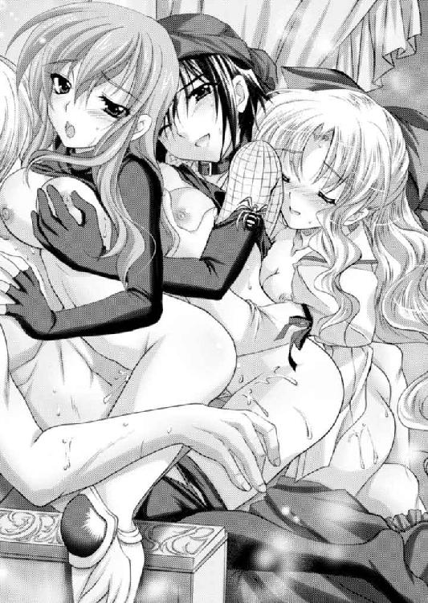
「はぅ......気持ち、いいですぅ」
狭くザラザラの膣穴で男根を咥え込んだナターシャは感無量といった溜息をつく。
ナターシャを見ていると、本当にストレートに惚れられているという感じがして安心感がある。
（ナターシャのことはこれからもぼくが守ってあげなくちゃ）
男としての純粋な保護欲をそそられたエルフィンは、同世代の少女の膣穴を堪能する。
「そろそろ、いいだろ。次はあたし♪」
「は、ふぁい......」
ナターシャは素直に腰を引き、逸物をレイテに譲った。
そして、少し楽しんだレイテは、再びナターシャに譲る。
完熟した蜜壺のやわやわとした締めつけと、青い蜜壺のざらつく硬い蜜壺を交互に楽しみながら、エルフィンは恐る恐る一番手前の女性に声をかけた。
「あの......ヴァレリアさま」
「さまは不用だ」
冷たく命じられたエルフィンは、慌てて言い直す。
「はい。あのヴァレリア」
「なんだっ!?」
ヴァレリアは不機嫌さを隠そうともしない。若干畏怖されながらも、エルフィンは恐る恐るお伺いを立てる。
「ヴァレリアはぼくのおちんちん欲しくないですか？」
ヴァレリアは内心で何やら葛藤した後、ぽそりと答えた。
「......欲しい」
「よかった。だったら、レイテ姐さんやナターシャみたいにおねだりしてくれませんか？」
ピキッ！
ヴァレリアのこめかみに血管が浮き出る。
肩を震わせるヴァレリアを、レイテが背後から抱き締めると、両の乳房をモミモミと揉んでやった。
「おぉお、大天使さまはいつまでも自分が特別扱いされないと我慢できないと見える。ほれ、見栄なんか捨てて、素直にちんぽ欲しいって叫んじまいなよ」
「くっ」
ヴァレリアは屈辱に奥歯を噛み締める。
しかし、この股間からはエルフィンの臍に溜まるほどの愛液がドロドロと溢れている。
屈辱感と背徳感が彼女の性感を高めているらしい。
面白いから、エルフィンは右手を伸ばして、ヴァレリアのクリトリスを悪戯してやる。
「ああ......」
びくんっとヴァレリアの肢体が跳ねる。
「ねぇ、ぼくヴァレリアのおねだりする言葉が聞きたいな。それも思いっきり淫らなやつ。それまでお預け」
「貴様というやつは......」
幼少期から性的に虐められてきたお姉さまを、逆に虐める楽しさでエルフィンは調子に乗る。
「ねぇ、早く。早く言ってくれないと、ぼく、ナターシャやレイテ姐さんの中で果てちゃうよ」
グチュグチュグチュグチュ......。
ナターシャとレイテの膣穴と男根が捏ねあわされる卑猥な水音が、ヴァレリアの背中を打つ。
「はぁ、エルフィンさま、わたくし......もう、イってしまいそうですぅ」
「ナターシャはほんとイきやすい体質だよね。でも、もう少し我慢して」
「ふぁい」
エルフィンの命令に絶対忠実なナターシャは、健気にも絶頂を我慢して、肉棒をレイテに譲る。
「あはっ♪ ほんとエルフィンのおちんちんもヒクヒクしているよ。こりゃ長く持たないね」
女としての充実感を押し売りするかのようにレイテは、ヴァレリアの耳元で妖しく囁く。
「ほら、早くおねだりしちゃいな♪」
男根を咥えているレイテに乳房を揉まれながら、エルフィンに陰核を弄られていたヴァレリアはそれでもしばし耐えたが、やがて口を開いた。
「わ、わたしにもちょうだい......」
「もっと大きな声で、卑猥な言葉を叫びなさい」
レイテに促されたヴァレリアは、毒を食らわば皿までといった心境だろうか、大きな声で叫んだ。
「エルフィンの大きいおちんちんを入れて欲しいの！ ずぼずぼやられて、わたしの中でビュービュー出して欲しいのっ！！！」
「うわ、この状況で自分の中で射精して欲しいだなんて、なんて我儘な女なのかしら♪」
レイテはさらにヴァレリアを辱めたが、エルフィンが合図すると、素直に腰を上げて、逸物を前に出した。
「さぁ、しっかり味わいなさいな。大天使さま」
ナターシャとレイテの愛液でグヂュグヂュとなった逸物が、ヴァレリアの熱い煮汁の詰まる蜜壺に入っていった。
「ふはぁぁぁぁ〜！」
我慢に我慢した後だけに、ヴァレリアは入れただけで軽くイってしまったようだ。
襞肉がヒックヒックと痙攣して、肉棒に絡みついてきた。
しかし、エルフィンはこれで終わらせるつもりはない。その両脚を持ち上げると、肘かけにつま先立たせる。
ヴァレリアはその状態で腰を落としている豪快なＭ字開脚となった。
「レイテ姐さん、ナターシャはこっちに来て」
肘かけに乗るヴァレリアの両脚を脇に抱えるようにして、エルフィンは両腕を肘かけに乗せ、手のひらを仰向けに開いた。
ナターシャとレイテは、それぞれ片足を椅子の外側に出して支えながら、もう一方を座席に入れて片膝ついた状態で、肘かけに置かれた少年王の手のひらに座る。
「ふぁん、エルフィンさまのお指が、お指が......」
「ふん、まぁ、いいか。今夜はその女が帰順したお祝いってことで譲ってあげるわ♪」
ナターシャとレイテは、逸物ではないのは不満だろうが、これまで散々、楽しんできたわけだし、これからも楽しめるということで、我慢してくれたようだ。
もっともナターシャの場合、エルフィンの性欲の捌け口になれればそれだけで満足という雰囲気があるから、別に逸物だろうと指だろうとあまり関係なく嬉しいらしい。
「それじゃ、ヴァレリア、ぼくもいい加減、腰が疲れたから自分で腰を使ってよ」
「わ、わかった。こ、こうすればいいのだな......」
恥夢に溺れたヴァレリアは素直に腰を使い始めた。
「あ、ああ、ごつごつしている。エルのおちんちん、わたしのおま○こにぴったり合うぅ〜」
いままで一方的にエルフィンに犯されてきたヴァレリアは、初めて自ら主体的に腰を使うセックスであろう。
腰使いがぎこちない。しかし、しだいにスムーズになり、自分なりに気持ちいい場所を見つけてしまったようだ。
「ふ、大天使って言ったって、ひと皮剥けばただの女に過ぎないってわけだね」
レイテの皮肉に、ヴァレリアは歯向かう。
「煩い黙れ。わたしが欲しいのは、エルフィンのおちんちんだからだ。おまえのような誰彼構わず寝る女と一緒にするな」
「うわ、酷い偏見だね。あたしゃ、惚れた男にしか身を預けたことはないさ」
「わたくしも、エルフィンさまをお慕い申しておりますぅ」
グチュグチュグチュ......。
言い争いながらも、ヴァレリアは豪快に腰を使い。左右の女たちの陰唇をまさぐるエルフィンの指は、ふやけるほどの熱い愛液にまみれた。
「ああ......エルフィン、これからはずっと一緒だ。だから、だから、わたしの中で一緒に......っ！」
ヴァレリアの膣穴がキュンキュンと痙攣している。もう絶頂寸前であることは手に取るようによくわかった。
「わかりました。ヴァレリアさまの中でイきます！」
切羽詰まってきたヴァレリアの要望に力強く答えたエルフィンは腰を上下させた。
「ああ、子宮に、子宮に当たっちゃう。あたし、子宮までエルフィンに犯されている！！！」
切羽詰まったヴァレリアが泣き叫ぶように、亀頭の先端にコリコリとしたものが当たる。
本人が言う通り、感じすぎて子宮が下がった状態なのだろう。このまま射精したら受胎してしまいそうな勢いだ。
（でも、ヴァレリアさまならぼくの子供産んで欲しいなぁ。そういえば、ぼくはこれから国王になるわけだし、後継者はどうしても必要だよな）
唐突に思いいたったエルフィンは叫んだ。
「よし、いまから魔法での避妊はなしで出すからっ！」
「え!? ダメぇ！ そんなダメっ！ いきなりに何を！ 妊娠しちゃうっ！ エルフィンの子供妊娠しちゃうっ！！！」
驚愕したヴァレリアは逸物を抜こうとするが、エルフィンは許さない。両手でレイテとナターシャの陰部をまさぐりながら、逸物を容赦なく突き上げる。
「それじゃ、いまからヴァレリアの子宮にいっぱい浴びせるから、絶対妊娠してね」
「ダメぇ！ ダメぇ！ ダメぇ〜！」
ヴァレリアは半狂乱になって叫ぶが、エルフィンは昂りのままに射精した。
「イクぅぅぅぅぅぅぅぅ！！！」
熱い血潮が奔騰し、逸物の脈打ちと、膣壁の脈打ちがぴったりと重なった。
ドックンドックンドックンッ......。
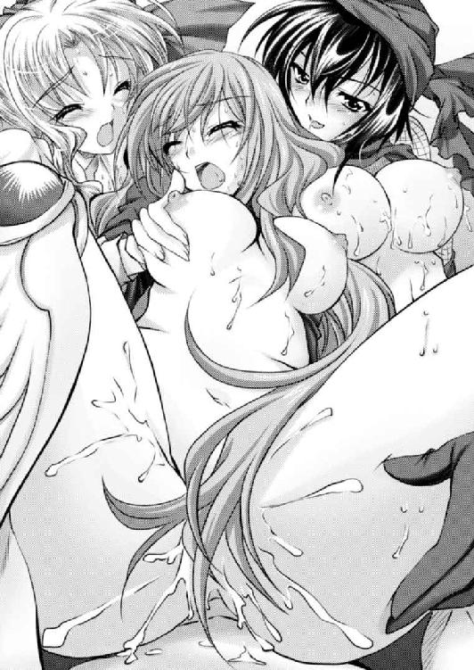
「あああ、かかる。子宮にビュウビュウかかっちゃうぅ！！！」
涙を流し、かつてない狂態をさらしたヴァレリアは、そのままぐったりとエルフィンの胸に沈んだ。
エルフィンの指戯で同時にイったレイテだが、さすがにヴァレリアに同情した顔になる。
「うわぁ、やっぱ妊娠するかもしれないセックスっていうのは、女にとって格別だからね」
そんなレイテに、エルフィンは声をかける。
「レイテ姐さんもお子さん、絶対引き取ってくださいね。ぼくの子供にするから」
「えっ？ いいのかい!?」
目を剥くレイテに、エルフィンはあたりまえといった顔で頷く。
「うん、レイテ姐さんいないと困るし」
それから避妊なし射精をされたヴァレリアに羨ましそうな顔をしているナターシャにも声をかける。
「ナターシャ、きみもこれから避妊なしでいくよ」
「え、でも、わたくしはその......日陰者ですし......」
妙に卑屈になるところのある少女を、エルフィンは励ます。
「何言っているんだ。ぼくは国王になるんだ。ナターシャはその側室だよ。堂々と子供をじゃんじゃん産めばいい。何人居たって養えるさ」
「あ、ありがとうございます」
ナターシャは涙を浮かべて感動している。
惚けているヴァレリアと、喜んでいるレイテとナターシャ。そんな女たちを前にエルフィンは、国王になるのも悪くないものだ、と初めて思った。
※
かくしてエルフィンは、国民からの熱狂的な支持と、国人層から推戴を受けた盟主として、国王に即位することになった。
西風の王国の誕生である。
大陸の最西に興ったこの国は、大陸の覇者たるドモス王国に敢然と立ち向かう列強の一角に成り上がる。
しかし、やはり国力の違いは大きかったのだろう。なかなか内陸へと領土を広げることは敵わず、代わりに水軍を創設すると、大陸の西海岸を暴風雨のように荒らし回ることになった。
果たして、この国が真に覇国となれるかどうかは、これからの話である。
今作の主人公って悪いやつだよなぁ。
主人公特権でいいやつな気もするけど、冷静に考えるとかなりとんでもないやつである。
根暗だし、切れるし、手段選ばないし......友達になりたくねぇ。
うちの猫さんが、くしゃみ連発。
花粉症っぽい症状に悩まされています。
犬猫も花粉症があると知り驚いてます。
無花粉杉というものが開発されているとか。
早く普及しますように。
二次元ドリーム文庫
ハーレムレジスタンス
著者 竹内けん
装丁 マイクロハウス
発行 株式会社キルタイムコミュニケーション
〒１０４-００４１ 東京都中央区新富１-３-７ヨドコウビル１Ｆ
著作権 ©Ken Takeuti 2009-2014
当ファイルは、二次元ドリーム文庫『ハーレムレジスタンス』（２００９年４月20日 初版発行）に基づいて作成しております。
※本作品の全部あるいは一部を無断で複製・転載・配信・送信したり、ホームページ上に転載することを禁止します。本作品の内容を無断で改変、改ざん等行うことも禁止します。また、有償・無償にかかわらず本作品を第三者に譲渡することはできません。